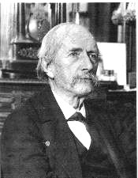
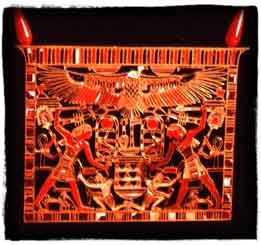
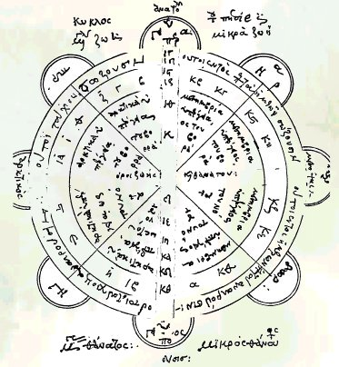
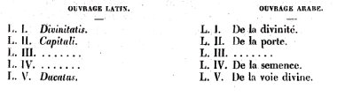
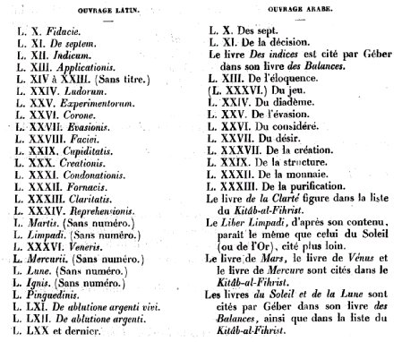

L'idée alchimique
1ère partie
revu le 16 juin 2015Plan : préambule - I. Travaux historiques de Marcellin Berthelot [ introduction - le Liber Sacerdotum - Mappae Clavicula - Compositiones - Démocrite d'Abdère - Liber de septuaginta - Livre des Douze eaux - Bubacar - sur les commentateurs des vieux alchimistes grecs [Stephanus - le Philosophe Chrétien - le Philosophe Anonyme] - traditions techniques de la chimie antique - l'antimoine - divers traités techniques du Moyen Âge [vitriol - papyrus de Leide]
Préambule [partie I] suite -On a de bonnes raisons de penser que l'art que l'on devait par la suite appeler alchimie fit son apparition en Occident au début du second siècle de l'ère chrétienne. Voilà qui appelle déjà deux ordres de commentaire.
- Beaucoup considèrent, en effet, que l'alchimie était déjà constituée comme corps de doctrine au temps des Pharaons et même, certains croient qu'elle était encore plus anciennement connue. N'étant pas nous-même historien, nous suggérons cette conjecture : comme on le verra dans les articles de M. Berthelot, de nombreux traités, dont l'ancienneté ne fait point de doute, n'ont subsisté que par fragments isolés. Ces fragments ont servi d'amorces pour les premiers Adeptes [Stéphanus d'Alexandrie, Synésius, Olympiodore, le Philosophe Anonyme, le Philosophe Chrétien, etc. ] qui ont compilé ces premiers textes, qui ont glosé là- dessus ou qui les ont interpolés, voire intercalés. La constance de certains thèmes, à l'évidence récurrents d'un traité à l'autre, ne peut pas avoir d'autre origine. Si bien que les premiers commentateurs ont fait remonter à une époque très ancienne nombre d'ouvrages supposés, qui, soit sont des apocryphes [le cas le plus fréquent], soit sont des écrits pseudépigraphes.
peinture extraite du Theatrum Chemicum Britannicum, Ordinall of Alchemy
- Nous avons dit « art ». Pourquoi ? C'est que l'alchimie est peut-être davantage une philosophie qu'un ensemble de techniques pratiques. Certes, le côté « laboratoire » est fondamental et l'on n'est pas vraiment alchimiste si l'on n'a pas oeuvré au fourneau. À côté du laboratoire, les Adeptes ont toujours considéré « l'oratoire » et il existe au moins une gravure qui représente ces deux faces complémentaires de l'Art sacerdotal dont certains, comme Dom Pernéty ou M. Berthelot, ont voulu faire remonter la source en Égypte. Il suffit de se pencher sur les gravures et les traités d'alchimie pour se rendre compte que l'on se trouve souvent plus confronté à des ouvrages artistiques, parfois très en avance sur leur temps et anticipant sur des procédés qui ne seront mis en oeuvre qu'au XXe siècle par les Surréalistes, qu'à des recettes de « cuisine chimique ».
L'alchimie est la discipline hermétique - le mot science est absolument impropre - par excellence. Comme on le verra dans d'autres sections [Principes], c'est à Hermès Trismégiste qu'on attribue la célèbre Table d'Emeraude [Tabula smaragdina ; pour l'origine et l'histoire de la Table d'Emeraude, consultez J. Ruska, Heidelberg, 1926]. Le plus important témoignage qui soutienne cette hypothèse est celui de Pline l'Ancien (23—79), qui s'étend longuement sur la métallurgie, sans toutefois citer une seule idée que l'on puisse rattacher à l'alchimie. Les diverses croyances concernant les métaux et la manière de les traiter mentionnées par Pline indiquent seulement que l'alchimie était, de son temps, prête à entrer en scène [Willliam J. Wilson, Historical background of Greco-Egyptian Alchemy, in Ciba Symposia, vol. 3, n°5, Summit, New Jersey, 1941]. Malgré les allégations des alchimistes sur l'âge de leur art, celui-ci fut en fait la plus tard venue des sciences magiques. L'hypothèse selon laquelle l'alchimie aurait été florissante sous les Pharaons est tombée avec l'abandon de l'étymologie chem ou qem mot égyptien signifie « noir », parfois employé pour désigner l'Egypte, dont le sol foncé contrastait tant avec la terre ocre du désert.
C'est au quatrième siècle, en pleine lutte entre christianisme et paganisme, que l'alchimie prit son essor. Zosime le Panopolitain, écrivain de cette époque, se fit l'apôtre de l'art des transmutations. Ses allégories et commentaires sont cités par les experts médiévaux comme les documents les plus importants et les plus vénérables. Zosime affirmait que la connaissance des métaux, des pierres précieuses et des parfums remontait à une époque mentionnée brièvement dans la Genèse :« Les fils de Dieu virent les filles des hommes, et les trouvèrent belles »
Les mystérieux fils de Dieu étaient, croyait-on, des anges déchus qui s'étaient alliés aux femmes des temps antédiluviens [voir les Origines de l'Alchimie]. Les anges enseignèrent volontiers à leurs compagnes divers arts, manifestement dans l'intention qu'elles fassent des bijoux, des parures de couleurs et des parfums pour pimenter leur beauté. Aussi les sages des anciens temps concluaient-ils que les anges déchus avaient dû se comporter en mauvais démons et pervertir les mœurs. Tertullien (environ 160-240) confirme ces croyances primitives et affirme que les fils de Dieu déléguèrent leur science aux mortelles avec la mauvaise intention de les séduire et de les pousser aux « plaisirs mondains ». Selon Zosime, ces événements marquèrent les débuts de l'alchimie. Répétant ce que les écrivains juifs et les premiers auteurs chrétiens avaient déjà dit, Zosime brode sur le sujet et cite le nom d'un très ancien fondateur de l'art alchimique, le mystérieux Chômes, bien que ce légendaire ancêtre des faiseurs d'or n'ait laissé nulle trace de son existence. Quoi qu'il en soit, on admettait que Chômes avait écrit un livre appelé Chema, dont se seraient servis les anges déchus pour donner des leçons aux filles des hommes. De Chémès et Chéma fut tiré Chemia, nom qui fut ensuite donné à l'art lui-même. Jusque-là, nous sommes encore dans le domaine de la légende. Le mot grec Chemia fut la désignation de l'alchimie jusqu'à ce que les Arabes lui ajoutassent l'article « al » de leur langue.
Dans un vieux manuscrit alchimique, une prêtresse qui se donne le nom d'Isis et s'adresse à son fils Horus déclare qu'elle doit la connaissance au premier des anges et des prophètes, Amnael.
[F. Hoefer, d'après Chevreul, pense que ce traité : Epître d'lsis, femme d'Osiris, sur l'art sacré, adressée à son fils Horus. (Ms. 2250.) est une satire de l'alchimie plutôt qu'un écrit sérieux sur l'art sacré]
Isis n'hésite pas a nous dire qu'elle reçut cette sagesse pour avoir eu avec lui des rapports sexuels. Son livre est d'un grand intérêt pour celui qui étudie la tradition alchimique. Plus révélateurs encore sont les écrits d'une Grecque connue sous le pseudonyme de Marie la Juive. Elle fut apparemment la première en date des alchimistes d'Occident. Aucun de ses écrits n'a survécu dans son intégrité, mais elle est citée par ses pairs comme Zosime, qui l'identifie à la sœur de Moïse. L'alchimiste Olympiodore (quatrième siècle) cite le fameux passage du livre de Marie qui la fit considérer comme « la Juive ». Nous arrêterons là les détails d'histoire sur lesquels nous revenons dans deux sous-sections [prima materia - Chevreul]. Cependant, il convient d'ajouter, en prolégomène, des informations touchant à l'origine de l'or des Égyptiens. Dès l'an 2900 avant notre ère, les Égyptiens avaient possédé des mines d'or, nub, en Nubie. Le précieux métal, extrait du quartz, était broyé par des moulins à main, puis, à force d'habileté, on parvint à le raffiner. Le raffinage avait été découvert après de laborieuses recherches, et son secret était jalousement gardé par les prêtres. Ils le réservaient à l'héritier du trône ou à ceux qui possédaient les plus hautes qualités de vertu et de sagesse. Zosime écrit :
« Le bien de tout le royaume est maintenu par ces arts d'exploitation des métaux et du sable, mais nul autre que les prêtres ne peut exercer quelque pouvoir sur eux ».
À cela, il faut ajouter le travail sur d'autres métaux, sur le verre et des minéraux. C'est de là, sans doute, que se sont créés progressivement deux courants dans l'alchimie, l'un portant sur les transmutations et l'autre, traitant des transformations minérales [voir section Mercure de nature]. C'est là que nous intervenons, par le développement de l'hypothèse suivante.
Comment montrer qu'il y a eu deux courants dans l'alchimie, l'un chimérique, fondé sur la doctrine des transmutations, l'autre, positif, fondé sur la transformation de pierres communes en gemmes orientales ? Ces questions n'ont, à notre avis, pas encore trouvé de réponses adéquates. Dans les trois siècles passés, plusieurs historiens, critiques et commentateurs de textes alchimiques ont donné leur opinion. On peut citer l'un des plus anciens, Michel Maier, Adepte lui-même à ce qu'il paraît, qui était capable d'analyser de façon objective les cas de fraude, de tromperie, que les souffleurs organisaient dans un but mercantil. Nous trouvons ensuite l'abbé Dom Pernety, dont nous parlerons tout-à-l'heure, qui s'est essayé à un commentaire rare et remarquable sur l'Art sacré [Dictionnaire Mytho-hermétique ; Fables Egyptiennes et Grecques] ; pour lui, il est hors de doute que les alchimistes ont possédé quelque substance extraordinaire, que l'on appelle la pierre philosophale et grâce à laquelle monts et merveilles furent garantis. Qu'on en juge : la santé parfaite et la longévité d'une part, la richesse d'autre part. Nous reviendrons plus tard sur ces chimères mirifiques... Il est essentiel de noter tout d'abord que la pierre philosophale est une invention du Moyen Âge et qu'on n'en trouve point de trace à l'époque des premiers alchimistes : Synésius, Stéphanus d'Alexandrie, Zosime de Panopolis l'ignorent. Plusieurs grands chimistes avant Joachim Becher intègrent dans leurs traités des chapitres sur la pierre philosophale ou sur les trois éléments qui sont supposés constituer, alors, les métaux : le Mercure, le Soufre et l'Arsenic. Notez que l'Arsenic recouvre le principe Sel ou « Corps » de la Pierre, et qu'à ce titre, c'est à tort qu'on attribue généralement l'invention du Sel à Paracelse. Mais il est un point essentiel : c'est que les gemmes orientales [rubis, saphir, topaze, etc.] ont été, depuis des temps immémoriaux, associées à des qualités organoleptiques, qui les distinguaient des pierres communes. Ce n'est pas tout. On a dit que les pierres précieuses formaient le symbole d'une « transmutation de l'opaque au translucide ». Voyez la section introduction générale où nous développons ce thème à propos de la nouvelle Jérusalem. Voyez encore notre section sur le Soufre. Quoi qu'il en soit, le rubis, par exemple, maintient la bonne santé et préserve du poison ; le saphir protègerait contre les morsures de serpent ou de scorpion, etc., etc. Ce qu'il est important de considérer, ici, c'est que les pierres précieuses étaient, autrefois, et certainement encore dans certains pays, employées comme des charmes ou des remèdes. Berthelot a bien insisté sur ces points dans ses Origines de l'Alchimie, et Chevreul semble être allé encore plus loin, à mots couverts, comme on le verra plus loin, dans son Résumé de l'Histoire de la Matière. Il nous apparaît comme hors de doute que de nombreux alchimistes, dans leurs traités, ont parlé de la transmutation de l'or ou de l'argent, alors qu'ils voulaient professer la préparation artificielle des pierres gemmes. Le lecteur pourra se référer aux textes que nous avons commenté ou à d'autres, tels que l'Hermès Dévoilé de Cyliani, révélateur à cet égard. Que l'on nous comprenne bien : il n'est pas question de prétendre que tous les alchimistes aient eu la même vision des doctrines de l'Art sacré. Beaucoup de textes ne sont basés que sur le premier objet de l'alchimie, qui, répétons-le, est entièrement chimérique. Qui plus est, chose importante, ces traités où il est question explicitement des transmutations, sont surtout axés sur la voie humide. Or, historiquement, c'est la voie sèche qui a été employée d'abord [voyez les écrits du pseudo Geber]. Seule la voie sèche peut procurer des températures supérieures à 1000°C. La voie humide ne peut excéder 500°C, et pour des pressions qui interdisent des cristallisations de sels mis en présence [cf. les écrits de Daubrée ; cf. aussi le Métamorphisme des Roches et le Bergbüchlein]. C'est la raison pour laquelle, dans notre quête, il nous a toujours paru logique d'étudier la voie sèche. Quant à la voie humide, qui nécessitait une maîtrise des appareils distillatoires et du travail du verre, ce n'est qu'à une époque plus tardive qu'elle fut employée. En alchimie, la voie humide nous paraît inséparable de la préparation des sels d'or solubles et de qu'on appelait autrefois l'or potable. Voyez la section voie humide. Nous dirons simplement ici que les préparations auriques que les alchimistes obtenaient au XVIe ou au XVIIe siècle étaient particulièrement toxiques et qu'en aucun cas elles n'auraient pu être de quelque secours, bien au contraire ! Les sels d'or sont utilisés actuellement dans un domaine très particulier, celui de certains rhumatismes inflammatoires chroniques, au premier rang desquels il faut placer la polyarthrite rhumatoïde, maladie d'une grande fréquence, invalidante à moyen ou à long terme si l'on n'entame pas, rapidement, ce que l'on appelle un traitement de fond, par des anti inflammatoires particuliers, dits d'action lente. Les sels d'or se sont ainsi distingués dans le traitement de cette maladie. Ils sont efficaces mais leur emploi est grevé d'un certain nombre d'effets indésirables sanguins, rénaux et cutanés, entre autre. Et nous parlons de sels d'or modernes, fabriqués avec les plus grandes garanties de galénique et de dosage. Qu'en était-il au XVIIe siècle ? Nous n'osons y penser [le lecteur connaîtra la composition des « sels d'or » anciens en consultant la section voie humide].
La question du but que poursuivaient les alchimistes a été posée. Il est évidemment difficile d'y apporter une solution unique et rationnelle ; nous nous sommes efforcés, dans ce site, d'envisager des hypothèses qui nous semblent constituer des avancées en ce sens. Il reste à voir de quelle manière ils ont présenté leurs écrits. Des critiques ont dit que si les Adeptes avaient utilisé un langage crypté, c'était pour mieux cacher qu'au fond, ils n'avaient rien découvert. Et que la confusion de leurs propos était à l'image même du chaos qui avait résulté de la trituration de substances chimiques mixées à l'aveuglette [voyez par exemple l'Alchimie et les Alchimistes de Louis Figuier, Hachette, 1860 -]. Cette critique, à nos yeux, paraît insuffisante et requiert une déposition en appel avant la prononciation d'une révocation définitive. Le dossier en appel doit examiner les termes mêmes du langage qu'utilisent les alchimistes ainsi que le contexte culturel et chronologique. C'est ce contexte qui, en particulier, peut déterminer le paradigme en cours[par paradigme, il faut entendre l'idée dominante de la pensée scientifique à une époque donnée. Par exemple, chez Aristote et Empédocle, tout est dominé, de ce point de vue, par les Quatre Eléments ; du temps de Joachim Becker, c'était, en chimie, les notions de terre vitrifiable, de terre mercurielle et de terre inflammable. Du temps de Stahl, le phlogistique, etc., etc. Tout n'est pas d'ailleurs aussi simple. Car le concept de science ne s'est développé qu'à partir de l'expérience a posteriori raisonnée, qui date de l'époque de Lavoisier et de Scheele. E. Chevreul admet, néanmoins, qu'à la base d'essais chimiques réitérés et positifs, on puisse élaborer des expériences a priori répondant aux bonnes règles de la méthode scientifique -].
La nature même du discours des alchimistes, versatile, protéiforme, est l'objet d'interprétations diverses, où intervient en général la « sensibilité » de l'observateur ou du critique. Alors, nous dira-t-on, autant d'interprétations possibles que d'observateurs potentiels ? Ce serait évidemment ruiner notre système. Nous en sommes très conscient. On se retranchera derrière le concept « d'hypothèse forte ou faible », tel qu'il est appliqué aux interprétations de résultats positifs, dégagés de statistiques où le critère de jugement n'apparaît pas objectif. Tels est le cas de l'astrologie. Dans deux ouvrages, nous avons conclu qu'il existait des éléments « forts » en faveur de l'hypothèse astrologique. Mais, aux yeux des scientifiques autorisés, il ne s'agit que « d'hypothèses faibles », et des résultats positifs basés sur des expériences, même bien conduites, en ce domaine, sont à analyser avec des précautions rigoureuses où, précisément, la conclusion à tirer de résultats positifs ne veut, en aucun cas, signifier qu'il existe une relation de cause à effet entre des résultats positifs et des hypothèses qui ont déterminées la mesure d'un critère de jugement donné. On peut parfaitement extrapoler un tel raisonnement pour l'idée alchimique. Nous disposons d'un nombre de textes, de traités absolument extraordinaire, dont beaucoup d'ailleurs, dépendant de la Bibliothèque de l'Arsenal ou de la bnf, n'ont pas été imprimés. Ces textes expriment des idées, variées d'ailleurs, sur l'alchimie et le sens à apporter à sa conception. Si nous appliquons dans toute sa rigueur le concept « d'hypothèse faible ou forte », il apparaît, sans doute possible, que la doctrine des transmutations métalliques soit à ranger du côté de l'hypothèse la plus faible qui soit. Et ce n'est pas raisonner ainsi par pétition de principe ou sous le principe d'autorité [nous voulons parler de l'avis des scientifiques autorisés]. Non, à part Geoffroy l'Ainé, qui croyait pouvoir fabriquer du fer dans certaines conditions, il ne s'est pas trouvé un seul savant qui ait pu montrer que la transmutation d'un élément particulier en un autre élément pouvait opérer dans les conditions de température et de pression prescrites par les alchimistes, dans leurs traités. Exit donc, la transmutation métallique. Reste la partie positive de l'alchimie, celle dont Berthelot est passé totalement à côté, celle que Chevreul, plus imaginatif que l'inventeur de la Synthèse Chimique, a su discerner sans pour autant pouvoir l'exprimer explicitement [cf. l'Histoire du Résumé de la matière]. En somme, Berthelot, en parlant des Origines de l'Alchimie, dans un ouvrage fondamental, nous procure les clefs de la compréhension rationnelle de l'oeuvre mais donne l'impression, soit de ne pas savoir les utiliser, soit de les avoir oubliées dans quelque endroit. Chevreul, qui avait un caractère tout à fait différent de celui de Berthelot [qu'il n'appréciait guère d'ailleurs], traite de la même chose : et c'est, en vérité, à demi-mot, qu'il nous livre ce qui, à nos yeux, constitue l'explication et nous dirions même la révélation, du processus alchimique. Mais nous verrons plus tard le cas Chevreul. Quoi qu'il en ait été de leurs divergences de sentiment ou de caractère, Chevreul et Berthelot ont révoqué en doute toute idée de transmutation métallique. Mais, autant Chevreul apparaît comme un adversaire irréductible de la transmutation, autant Berthelot termine ses Origines de l'Alchimie en évoquant le Mercure des vieux alchimistes. Tout cela est bien étrange et bien intriguant. Nous ne saurons sans doute jamais lequel, des deux, était placé le plus près de nos conjectures. Peu importe. Le fait important est que les deux, en un impresssionnant travail d'érudit et de critique, aient su poser des questions qu'ils n'ont pu résoudre... Le lecteur l'aura deviné : notre sensibilité va dans la direction de Chevreul et son caractère nous agrée plus que celui de Berthelot, finement analysé par Jean Jacques [Autopsie d'un mythe, Belin, 1987]. Mais, de façon toute paradoxale, on se doit de constater que Berthelot est plus près de l'alchimiste traditionnel que Chevreul ! À la mort de Berthelot, des textes sont apparus, parfaitement surréalistes, qui ne peuvent laisser indifférents les « Amoureux de science » [c'est ainsi qu'on nomme les quelques énergumènes - dont nous faisons assurément partie - qui osent encore s'intéresser à l'alchimie, en 2004... -] et qui, même, pourraient peut-être jeter quelque lumière, sinon sur Fulcanelli, du moins sur les idées qui inspirèrent son « invention ». Car Fulcanelli, n'en doutons-pas, ne fut autre qu'une expérience de « synthèse mentale » pour reprendre une heureuse expression d'E. Chevreul.
Il est hors de doute que les Adeptes [on donnait ce nom aux alchimistes qui pensaient avoir trouvé la pierre philosophale] ont, et ce de tout temps, utilisé un langage réputé fort abscons, qu'on appelle la cabale hermétique [nulle liaison avec la kabala juive], pour rédiger leurs traités. Les textes dont nous parlons ont été, en outre, maintes fois analysés, publiés, compilés, pillés, interpolés, traduits du grec au latin ou du grec en arabe, etc., etc. Il n'en est que plus remarquable que, d'une part ils aient fait l'objet de recherches approfondies de la part de certains savants du XIXe siècle, et que d'autre part, ces mêmes textes aient continué à « résister » à la pensée rationnelle et logique, c'est-à-dire à la logique cartésienne, envisagée dans un sens spirituel, tout en continuant d'exercer une fascination sur les esprits. C'est donc par une autre sorte de logique, dont nous dirions volontiers qu'elle est d'approche « newtonienne », que l'on arrive à crocheter les serrures dorées et brillantes qui verrouillent ces livres fermés. Tous ces textes, en somme, donnent souvent l'impression de se protéger eux- mêmes, et, comme nous l'avons dit en introduction à la section Principes, ils ne peuvent être lus sans un minimum de travail préalable. Certains ont même, comme Umberto Eco, postulé que ces textes étaient, pour ainsi dire, à la « limite du pays fertile » de la compréhension, pour employer le titre d'un des plus tableaux de Paul Klee... Et pourtant, on peut arriver, de façon à la fois logique et rationnelle, à trouver à ces textes une signifiance précise et à poser des équivalences, au plan purement chimique, entre des points d'allégories, de légendes, et des phases de l'oeuvre alchimique où des réactions chimiques se produisent.
Ce travail, qui relève du « rationalisme bien tempéré », doit être mené sur plusieurs plans où se mêlent le sens, le sentiment et la raison :
1)- l'exégèse historique : il y a finalement peu de traités d'alchimie écrits réellement par l'auteur désigné sur la 1ère de couverture. Dans la majorité des cas, il s'agit d'un pseudonyme ou d'un éponyme ; quand ce n'est pas un groupe de chercheurs qui ont collaboré à la rédaction. On peut commencer par les plus anciens livres, ceux attribués au fabuleux Hermès Trismégiste. La Table d'Emeraude est, en fait, un texte du VIe ou du VIIe siècle qui n'a pas l'ancienneté que l'on prétend - voir notre commentaire à son sujet -. Plusieurs auteurs, ainsi, semblent se cacher derrière le célèbre alchimiste Basile Valentin. Il en est de même pour Geber [surnommé le prince des alchimistes], Arnaud de Villeneuve, Raymond Lulle et bien d'autres encore. Dans d'autres cas assez rares, c'est l'auteur lui-même qui a signé. On en a la quasi-certitude pour les textes de Bernard, dit le Trévisan, pour Alexandre Sethon, pour Denis Zachaire ou encore pour Isaac Le Hollandais. Il est presque assuré que les écrits de Nicolas Flamel sont apocryphes ; on a des pistes pour connaître l'auteur du Mutus Liber. On sait, sans doute, qui était Philalèthe mais on ne sait pas encore qui était Cyliani et, surtout, Fulcanelli. A ce sujet, les légendes les plus folles ont circulé et assez récemment, on tenait pour assuré qu'un Académicien des sciences était l'auteur du Mystère des Cathédrales et des Demeures philosophales. Dans le commentaire que nous donnons du Mutus Liber, nous citons l'Hypotypose de Magophon, alias Piere Dujols de Valois, libraire érudit : certains passages ont été repris presque à la ligne dans le Mystère des Cathédrales.
2)- la cabale hermétique : la cabale est un langage - que l'on appelle aussi la « langue des oiseaux » ou « gay sçavoir » qui joue avant tout sur les assonances phonétiques, sans se préoccuper des règles de grammaire ou de syntaxe. Le latin et surtout, le grec, ont été exploités à cet effet par les alchimistes, et de, de tout temps. Artéphius déjà, au XIe siècle [?], disait que l'Art sacré était entièrement cabalistique. Fulcanelli nous précise qu'il s'agit d'un argot spécial, « l'art goth » [voilà un exemple un peu primaire de cabale]. Mais il ne faut pas s'arrêter à la première impression. Car, derrière l'image parfois anodine de ces relations, se tisse toute une toile spirituelle qui permet de donner aux mots un sens dont on ne les aurait pas crus capables, de prime abord. Expliquons-nous : les alchimistes disent par exemple, que les « métaux morts », c'est-à-dire ceux qui ont été brûlés, ne leur servent point. Il y là un exemple de cabale spirituelle, c'est-à-dire d'une sorte de rébus mental que l'on ne peut résoudre que par l'étude approfondie des textes. Ainsi, les alchimistes nous préviennent qu'ils disent systématiquement le vrai pour le faux, que là où ils sont clairs, ils nous trompent, et que là où ils disent des banalités ou des insignifiances, se cache un secret véritable. On peut renverser d'ailleurs la proposition et considérer qu'ils disent le faux pour le vrai... Il faut donc avoir du discernement, ce qui suppose d'avoir lu ces textes plusieurs fois et de s'en imprégner, exactement comme on écoute une musique à laquelle, d'abord, on « n'entend » rien. Si nous reprenons l'exemple des métaux, on pourra donc conjecturer que les « chaux » des métaux, c'est-à-dire les oxydes, doivent jouer un rôle non négligeable dans l'oeuvre. Nous pourrions multiplier les exemples, mais cela serait inutile puisque, dans nos sections, nous expliquons tous les points de cabale que nous avons cru percevoir.
3)- la chimie des Anciens, du Moyen-Âge ainsi que celle précédant Lavoisier : il faut disposer de plusieurs traités de chimie pour arriver à bien comprendre des points particuliers, pour discuter d'une piste possible ou d'une technique particulière. C'est ainsi que l'on arrive à avoir une idée de leurs expériences car les livres de chimie modernes ont totalement rompu le contact avec leurs attaches centenaires. Il faut lire Nicolas Lémery, Glaser, Sénac, Lefèbvre, Boyle, Becher, etc., etc. Ces recherches ont d'ailleurs été entreprises au XIXe siècle, indépendamment, par Eugène Chevreul, Marcellin Berthelot et Ferdinand Hoefer. Ces trois savants et historiens distingués ont compté parmi les plus érudits de leur génération et ont oeuvré considérablement dans ce domaine, réputé occulte. Eh, certes ! Leurs commentaires sont en général défavorables à l'idée alchimique telle que nous l'avons retracée au début. Nous dirons même que pour ces trois scientifiques, la question de la transmutation métallique ne se pose même pas. Mais ils ont eu l'intelligence de replacer l'alchimie dans son double contexte historique et culturel ; de faire voir que l'idée alchimique était valable à une époque donnée, à l'époque, en somme, de la théorie des Quatre Eléments [notons d'ailleurs que le mot théorie, appliqué dans un tel contexte, est impropre ; la théorie scientifique est une invention qui date de l'époque moderne et on peut la situer au temps de Lavoisier et de Scheele]. De faire toucher du doigt, enfin, qu'il n'y avait pas que la transmutation des métaux, mais aussi celle de la transformation des minéraux. Par ailleurs, contrairement à ce qu'on croit d'habitude, l'idée alchimique a progressé avec le temps. Si l'on reprend le cours historique, nous trouvons Zosime, qui nous décrit des vitrifications et des teintures minérales, assimilées à l'émeraude ou au saphir [il ne s'agit bien sûr que de verreries colorées]. Mais à l'époque égyptienne, ce verre coloré était considéré comme une authentique transmutation d'une matière en une autre matière et c'est de là, réellement, que s'amorce l'idée alchimique :
a)- travaux sur le verre [verre blanc, verres colorés, cristal, etc.] ;
b)- teintures minérales et métalliques ;
c)- utilisation des alkalis végétal [alkali fixe] et minéral [alkali volatil] ;
d)- amalgames de divers métaux [avec le mercure : l'amalgame est, par définition, un mélange, une « mixtion » où le mercure intervient] ;
e)- expériences réitérées portant sur la fusion, la distillation, le refroidissement lent de matières vitreuses, etc.Plus tard, l'alchimie a englobé la pensée chrétienne et nombre d'allégories utilisent la symbolique de la croix comme creuset, et du Christ comme la matière subissant la « Passion », c'est-à-dire le feu. Au Moyen âge, les alchimistes inventent la pierre philosophale qui, depuis lors, a symbolisé l'alchimie aux yeux du grand public. Ce n'est qu'au XIXe siècle que des études historiques mettent en valeur deux courants dans l'alchimie : l'un, chimérique, où l'on parle des transmutations métalliques ; l'autre, positif, où l'on traite de la transformation des pierres communes en pierres précieuses...
4)- l'iconographie et le symbole : qu'on le veuille ou non, l'alchimie est aussi une philosophie de l'icône. À ce titre, de nombreuses gravures représentent des trésors d'art, d'orfèvre, et c'est même dans certaines églises, où des tableaux lapidaires sont exposés, que l'on ira chercher l'explication d'une allégorie ou d'une légende. Il y a des livres d'images sur l'alchimie et l'on peut en citer au moins un, le Mutus Liber, dont on trouvera un commentaire sur ce site. D'autres se signalent à l'attention, tels que le livre d'emblèmes de Mylius [la Philosophia Reformata] ou les Douze Clefs de Philosophie du pseudo Basile Valentin. D'autres encore combinent le texte et l'image en de somptueux ouvrages surréalistes avant la lettre. Tel est le livre que nous devons à Michel Maier, Atalanta fugiens, avec ses cinquante gravures, par ailleurs ornées de fugues et de rébus spirituels. Certains ouvrages ont poussé très loin la recherche du style, comme le Splendor solis, remployé par le pseudo Salomon Trismosin dans sa Toyson d'or. Ce n'est pas tout. Le symbole, en alchimie, est apparenté étroitement au mythe. C'est la mythologie gréco-romaine qui représente le fonds culturel de l'alchimie, pour d'évidentes raisons historiques. Certains, comme l'abbé érudit Dom Pernéty, sont même allés jusqu'à affirmer que les scènes mythologiques renfermaient des idées alchimiques. Dom Pernéty est un cas très particulier. Il a écrit une somme impressionnante sur l'alchimie : le Dictionnaire mytho-hermétique d'une part, et les Fables Egyptiennes et Grecques d'autre part. Ce second ouvrage est absolument unique. Sa lecture est déconseillée pour ceux qui, à notre avis, n'ont pas déjà acquis quelque teinture de science. Mais pour celui qui a une certaine connaissance du symbole, du mythe et de l'allégorie, c'est un festin royal. On peut, bien sûr, être en désaccord avec certaines idées ou hypothèses professées par Dom Pernéty, mais l'érudition est là, qui impose, quoi qu'il en soit, le respect. Mais il est parfois bien difficile de suivre Pernéty lorsqu'il expose des supputations assez fumeuses entre des épisodes de la guerre de Troie et des époques de l'oeuvre alchimique. C'est qu'ici, il faut avant tout lire par le sentiment et non pas seulement par la raison. Autrement dit, nous avons affaire assez souvent, avec Pernéty - et aussi avec d'autres auteurs comme Philalèthe -, à de la poésie en prose, chose d'ailleurs qui se retrouve dans nombre de traités portant sur la philosophie hermétique [voyez la Philosophie Naturelle restituée de Jean d'Espagnet, à cet égard ou encore le Traité des Choses Naturelles et Surnaturelles, du pseudo Valentin]. Tout comme Fulcanelli s'est servi des tableaux de pierre des cathédrales comme « pré-texte » à ces trois livres, Pernéty et Michel Maier ont supposé dans les mythes des interprétations qui peuvent, pour peu que l'on jette un coup d'oeil pour la première fois sur ces légendes, paraître absolument délirantes ; nous en convenons volontiers. C'est donc surtout par l'esprit et non pas seulement par la raison, comme nous venons de le suggérer, qu'il faut comprendre les supputations et extrapolations de nos auteurs « Chymiques ». Plusieurs textes importants ont été commentés sur ce site, considérés dans cette optique. C'est pour nous la seule manière rationnelle de prendre la mesure de l'Art sacré et d'apprécier à sa juste valeur l'Idée Alchimique. Elle permet d'aboutir à une solution logique quant à la nature de la pierre philosophale, d'envisager une solution plausible au mystère du phénomène de la « projection », bref d'étayer une interprétation raisonnée de la Philosophie Naturelle, vue, pourtant, sous un aspect hermétique traditionnel. Enfin, cette manière conduit à envisager le but que poursuivaient les alchimistes, à la fois dans un sens pratique et spirituel.
C'est le lieu d'évoquer les travaux de Carl Gustav Jung, le Pernéty du XXe siècle, qui a laissé une somme remarquable, Psychologie et Alchimie, où il réinterprète l'alchimie dans une connotation purement psychanalytique. Toutefois, cette approche pêche, selon nous, par un manque de perspective historique et par le rejet, pour Jung, de toute approche à caractère pragmatique : le fourneau n'existe plus, sinon en virtualité, et c'est la tête de l'alchimiste qui fait office de cucurbite tandis que la materia prima semble tout autant insaisissable que le mystère de l'âme. Si l'Artiste pousse trop son feu, la cucurbite saute - donc, la tête - et l'alchimie prend alors l'aspect de révélateur de l'Inconscient et des archétypes universels. L'ouvrage de Jung est impressionnant d'érudition et de sagesse. Il est très bien illustré, bien commenté par le traducteur français, et la bibliographie est complète. Mais, nous le répétons, le laboratoire disparaît dans l'esprit de Jung ; ne reste que l'oratoire et, décidément, cette vision nous paraît par trop réductrice. Mais cet ouvrage n'est pas le seul que Jung ait consacré à l'Art sacré. Car on peut affirmer sans beaucoup se tromper qu'au moins la moitié de l'oeuvre du magicien de Kusnach est consacré à l'alchimie. Le lecteur verra dans l'Aurora consurgens un aperçu de l'oeuvre de Jung.
¯
¯¯
En introduction à nos études alchimiques, nous avons donc souhaité développer une section entière sur cette notion d'Idée Alchimique. Nous commençons par exposer des travaux historiques de Marcellin Berthelot et d'Eugène Chevreul. Ceux-ci sont commentés ou annotés dans la mesure du possible.
1)- C'est la sous-section n°1 ; les notes du texte apparaissent en violet ; nos commentaires sont en vert gras, taille 8 ; ils sont incorporés au texte pour des raisons de commodité de lecture ; partie I - partie II - partie III - partie IV - partie V - partie VI -
2)- La sous-section n°2 reprend le texte de Berthelot sur les Origines de l'Alchimie. Ce texte a été repris dans son plan ; l'ouvrage en mode texte de la bnf - Gallica - est en effet assez confus et les nombreuse citations de Berthelot ne sont pas disposées suffisamment en exergue ; s'y rattache l'ouvrage Introduction à la Chimie des Anciens, en cours d'étude. Nous avons ajouté une étude de fond sur l'oeuvre de Roger Bacon dont le rôle est considérable dans le dévelopement de l'idée alchimique. Enfin, le Résumé de l'Histoire de la Matière de Chevreul apparaît à la partie II de la sous-section n°1 ainsi que l'Atlas des connaissances humaines - sous-section n°1, partie V - avec 14 tableaux dont les trois premiers résument l'alchimie.
3)- La sous-section n°3 contient cinq volets :
a)- la materia prima considérée selon les époques [les temps anciens, le Moyen âge, l'époque moderne] est l'un de nos plus anciens fichiers, remis plusieurs fois sur le métier ;4)- La sous-section n°4 comportera des textes ou des illustrations dont le caractère alchimique n'est pas encore entièrement déterminé ; Barbara Obrist a consacré un ouvrage à ces premières manifestations picturales de l'Art sacré au XIVe et XVe siècle : Les débuts de l'imagerie alchimique (14e-15e siècles), [Paris, Le Sycomore, 1982]. Nous souhaitons consacrer cette sous- section à deux ouvrages dont Antoine Faivre a également parlé dans ses études sur l'Esotérisme occidental [Accès de l'ésotérisme occidental, 2 vol., Gallimard, 1996] : le Livre de la Sainte Trinité et l'Aurora Consurgens, écrit attribué à saint Thomas d'Aquin [à peu près sûrement pseudépigraphe].
b)- la critique de l'Histoire de la Chimie de Ferdinand Hoefer, commentée par Chevreul, au Journal des Savants, en 13 livraisons. Cette critique fait d'ailleurs partie d'un ensemble d'études sur le personnage, absolument fascinant, de Michel-Eugène chevreul. Cette critique est commentée, annotée et des reproductions de gravure sont incorporées au texte.
c)- la Monade Hiéroglyphique de John Dee ;
d)- le Typus Mundi ;
e)- la Légende de Sifrit l'Encorné ;
a)- Aurora Consurgens, partie I : introduction et commentaire de 21 miniatures ;
b)- Aurora Consurgens, partie II : suite du commentaire et de l'étude des miniatures.
c)- Aurora Consurgens, partie III. Fin du commentaire et relecture du mythe d'Attis et de Cybèle.
Nous rattachons à cette sous-section le Ripley Scrowle, magnifique rouleau s'étalant sur plusieurs mètres dont on compte plus de vingt exemplaires différents. Nous avons étudié la version que possède la Huntington Library.
5)- La sous-section n°5 aborde la question des relations entre l'alchimie et la philosophie ; il nous semble en effet absolument évident que l'idée alchimique - qui n'existe pas en soi - draine de nombreux concepts et des idées anciennes que l'on retrouve parfois à peine voilées dans la philosophie critique ; je ne parle pas, évidemment, de la philosophie socratique et des éléments d'Empédocle qui forment pour ainsi dire le terreau de l'hermétisme. Il s'agit ici de la forme la plus élémentaire - au sens propre du terme - de l'idée alchimique si l'on considère les transformations et inter-actions entre éléments, considérés dans leur forme substantielle [i.e. métaphore symbolique généralisée]. La philosophie critique aide grandement à comprendre l'un des thèmes les plus intéressants développés dans l'alchimie : l'inversion. Nous profitons ainsi de l'opportunité qui nous est donnée d'étudier en parallèle des variations sur ce thème, mises en relation avec des idées et concepts développés par Rousseau [essai I], Tolstoï et Chestov [essai II] et enfin, nous proposons une nouvelle monade hiéroglyphique [essai III] qui tient compte de cet aspect métaphorique [dont j'ai compris l'importance grâce à Ricoeur] par l'utilisation de symboles tout-à-fait classiques qui « glissent » littéralement comme une sorte de contrepoint l'un dans l'autre, pourvu que l'on prenne en compte un aspect souvent méconnu dans le symbolisme hermétique : la dynamique.

I. Travaux historiques de Marcellin Berthelot - sous-section 1

Marcellin Berthelot (1827-1907)
Les travaux alchimiques de Berthelot, concernant uniquement l'histoire de l'alchimie et sa liaison avec la chimie, on s'empresse de le dire, doivent être lus avec critique. Plusieurs historiens considèrent, en effet, que les textes traduits - non par Berthelot, le plus souvent, mais par des archéologues - sont entachés d'inexactitude et de contre sens. De plus, Berthelot n'a pas eu en sa possession des textes reconnus comme importants. Voici par exemple un extrait du Journal des Savants (1925) qui semble le montrer :
Union académique internationale.Il reste, évidemment, que les commentaires que donne Berthelot de l'Art sacré gardent un intérêt tout particulier. Contrairement à Chevreul, qui n'a fait que survoler les textes et qui s'en est tenu à des principes généraux - et élevés d'ailleurs - nul savant, avant Jung, n'avait entrepris la tâche qu'a accomplie Berthelot. Car son travail jette le voile sur les prolégomènes de l'alchimie et met parfaitement bien en lumière les deux courants dont nous avons parlé en préambule. Il est finalement peu question des transmutations, dans ces recensions - ce qui ne nous étonne nullement - mais bien plutôt des procédés de teintures métalliques, de traitement des matières minérales, des différents sels [sal floris, natron, borith, atinkar, etc.] qui sont les vrais médiateurs chimiques, les « enzymes mercurielles » comme on oserait presque l'écrire, qui convertissent, qui transforment des produits minéraux amorphes en des pierres cristallisées, connues autrefois comme les pierres gemmes, venues d'Orient [voir Buffon sur ce point -]. Seule cette hypothèse permet, sans qu'il soit question de transmutation métallique au sens où nous l'entendons actuellement [c'est-à-dire la transformation d'un corps simple en un autre corps simple, i. e. Hg --> Au], d'envisager les transmutations des Eléments comme les entendaient Aristote et Empédocle. Que l'on nous comprenne bien, il n'est pas question de revenir à des concepts dépassés. Non. Il s'agit simplement de remployer ces concepts pour en tirer des raisonnements analogiques, qui, tenus seulement dans leur domaine de réalité, gardent toute leur valeur. C'est l'emploi d'un langage approprié, la cabale hermétique, qui autorise ainsi à considérer d'un oeil nouveau les quatre Eléments et même, de donner un sens inusité à la quintessence. Dans les opérations minérales auxquelles procède la Nature elle-même, les termes de Terre, Eau, Air et Feu peuvent ainsi renvoyer à tout un corpus de substances chimiques complexes, qui, dans des conditions de pression et de température données, peuvent déterminer - surtout par voie humide - la cristallisation de « fleurs minérales » spéciales, que l'homme a reconnu de tout temps comme détentrices de pouvoirs exceptionnels. Et de fait, la connaissance des pierres précieuses a dû précéder celle des roches communes : c'est la branche la plus ancienne de la minéralogie. Qu'on en juge : le président de l'aréopage égyptien, composé de trente juges, portait autour du cou, à laquelle était suspendue une petite figure en pierres précieuses, représentant la Vérité [Diodore, I, 75]. Or, dans la préface de la Nouvelle Lumière Chymique du vrai, du seul Cosmopolite, Alexandre Sethon, on peut lire cette phrase, résumé lapidaire, s'il en ait, du Grand Oeuvre :
Catalogue des manuscrits alchimiques grecs, publié sous la direction de J. Bidez, F. Cumont, J. L. Heiberg et O. Lagercrantz. I. Les Parisini décrits par Henri Lebègue ; en appendice les manuscrits des Coeranides et tables générales par Marie Delcourt. III. Les manuscrits des Iles Britanniques décrits par Dorolhea Waley-Singer avec la collaboration de Annie Anderson et William J. Anderson; en appendice les recettes alchimiques du Codex Holkhiamianus éditées par Otto Lagercrantz. Deux vol. in-8°. Bruxelles, Maurice Lamertin, 1924.Ces deux volumes sont consacrés aux manuscrits de Paris, soigneusement décrits par M. Henri Lebègue, et aux manuscrits des Iles Britanniques, décrits par Mme Dorothea Singer avec la collaboration de Mme Annie et M. William Anderson. Un appendice important, dû à M. Lagercrantz, contient le texte le le commentaire de curieuses recettes contenues dans un manuscrit de Holkham.
— M. Joseph Bidez qui a été le promoteur de cette œuvre scientifique et en garde la direction effective, expose dans une courte mais substantielle préface les motifs qui ont fait entreprendre ce catalogue et les résultats qu'on en peut attendre. Ce n'est point dans le dessein de pouvoir réaliser le grand Œuvre que nous dépouillons les manuscrits alchimiques et si la transmutation des métaux doit un jour être réalisée, les moyens en seront découverts dans les laboratoires et non dans les bibliothèques. Mais, tout d'abord, les recueils alchimiques renferment des recettes de tout genre, précieuses pour l'étude de la technique et des procédés industriels chez les anciens ; ils permettent de suivre la transmission de ces procédés de l'Orient à l'Occident et de l'antiquité au moyen âge. De plus, l'esprit mystique dont sont animés certains adeptes de l'art sacré, le secret dont ils entourent une science ésotérique dont la thaumaturgie tirait de merveilleux effets, les rapprochent des théurges platoniciens et donnent à leurs écrits une véritable importance pour la connaissance de la religion ou du moins de la religiosité du monde antique. Enfin les philologues trouveront dans ces textes l'explication d'une foule de termes peu usités. On connaît l'intérêt que Berthelot a porté à ces premières manifestations de la science qu'il a illustrée et l'ouvrage fondamental où il a commenté les écrits alchimiques avec toute sa compétence de spécialiste. Malheureusement les textes dont il disposait avaient été fort imparfaitement édités par son collaborateur et les manuscrits, comme l'a prouvé le nouvel inventaire, en contiennent d'autres et de grande valeur, qu'il n'a pas connus. C'est donc pour préparer la publication d'un Corpus alchemichorum, répondant aux exigences de la philologie, qu'a dû être entreprise une nouvelle exploration des bibliothèques. Après ceux de Paris et d'Angleterre, les manuscrits d'Italie seront bientôt tous catalogués et donneront une bonne moisson de morceaux inédits. L'œuvre marche ainsi rapidement vers son achèvement, tout au moins pour la partie grecque.
« La simplicité est le vrai sceau de la Vérité. »
Phrase toute de cabale, que l'on peut traduire par : la chaux [ioV : un seul, une seule part, synonyme de ioV : rouille du fer, oxyde] est l'empreinte [sjagiV : signe de la croix - creuset - et pierre précieuse à graver. Ce n'est pas tout. Le sceau renvoie au « sceau du secret », c'est-à-dire à aporrhtoV, que l'on peut rapprocher de aporrew ou de aporron qui désignent une substance qui coule - respectivement : couler de, découler et rejeter, avec l'idée de jeter au rebut, c'est-à-dire expulser - c'est le même sens que l'on trouve en latin avec cado et cassito, proche de cassis, casque] Enfin, la Vérité se dit alhqeia : le symbole de la Vérité était un ornement en saphir que portait le grand-prêtre égyptien. En somme, Sethon professe que, pour préparer la pierre [Vérité], il faut faire passer au creuset, en la fondant, une chaux particulière... Là encore, le lecteur qui jettera les yeux, sans avoir une connaissance préalable de la « langue des oiseaux » aura l'impression pénible de lire des propos parfaitement incohérents ou sortis de leur contexte, voire délirants. Nous en convenons volontiers. Mais c'est un préalable indispensable à celui qui veut lire les textes alchimiques en ayant à l'esprit l'intention d'en ouvrir les fermetures dorées par la clef appropriée. De fait, Sethon dit tout en une phrase et fait mieux que Pontanus, qui, selon Fulcanelli, résumait l'oeuvre en quinze lignes. Mais revenons un instant au pectoral du prêtre égyptien. Nous l'avons décrit dans la section des blasons alchimiques. Citons la Bible :
« Tu l’empliras de pierreries enchâssées en quatre rangées de pierres. Sur une rangée la sardoine, la topaze et l'émeraude, première rangée. Deuxième rangée : l'escarboucle, le saphir et le jaspe; troisième rangée : le ligure, l'agate et l'améthyste ; quatrième rangée : une la chrysolithe, l'onyx et le béryl. Ils seront enchâssés dans de l'or, lors de leur remplissage. Ces pierres, au nom des fils d'Israël, sont au nombre de douze selon ces noms. Elles seront gravées en manière de cachet, chacune avec son nom, selon les douze tribus. » (Exode XXVIII, 17)

Les pierres précieuses du pectoral des grands prêtres hébreux ornaient aussi le vêtement sacerdotal des rois de Tyr [Ezechiel, XXVIII, 13], et elles formaient les douze assises de l'enceinte de la nouvelle Jérusalem dont parle l'Apocalypse [XXI, 20]. On ne doit pas oublier les pouvoirs organoleptiques qu'on attribuait aux pierres gemmes ; la plupart jouaient un grand rôle dans la composition des talismans [telesma], perfection et amulettes. Pline nous représente les mages, pontifes de l'Orient [d'où vient le nom de magie] comme ayant été particulièrement initiés à la connaissance des vertus surnaturelles de l'agate, de l'émeraude, de l'onyx, etc. Orphée, poète du cycle pythagoricien, attribue, dans ses Lithica, aux pierres une action mystérieuse. De même, Rémy Belleau, poète de la Pléiade, nous conte en de sublimes poèmes, les Amours et Nouveaux Eschanges des Pierres précieuses, Vertus et Proprietez d'icelles [Oeuvres complètes, par A. Gouverneur, tome III, Paris, 1867]. Voici les paroles prophétiques de son Discours des Pierres précieuses, en introduction aux poèmes :Escrivant ce petit discourt des Pierres précieuses, j'ay bien voulu suyure, auec toute religion l'opinion des anciens autheurs qui nous ont laisse par leurs doctes et divins escrits, les vertus et propriétés particulières d'icelles, comme provenantes des Planetes et de l'influs céleste des Estoiles, encores que la plus part des Philosophes subtils et diligens rechercheurs des causes plus secrettes de Nature, soyent d'opinion contraire, remettant telle vanité, comme ils disent, à la superstitieuse religion, loix et ordonnances des Prestres Caldees, qui nous ont pu de telle folle et legere creance. Toutesfois ne voulant faire tort aux cendres et précieux restes de la vénérable antiquité, comme d'Orphée et autres, je me suis proposé les ensuyure, non pour vous déguiser le faux sous vne apparence de verité, mais pour tousiours admirer les œuures de ce grand Dieu, qui a diuinement renclos tant de beautez et de perfections en ces petites créatures remettant le tout à l'expérience de la force et vertu d'icelles, et discretion du lecteurOr, voici les dates de Remi Belleau : 1528-1577. Comment ce poète, pouvait-il supputer que les pierres gemmes étaient formées d'un limon et d'une « humeur ou suc » ? Comment avait-il pu anticiper sur Elie de Beaumont [Émanations volcaniques], sur Daubrée [la voie humide de la Nature ; cf. Mercure de nature] ? Nous ne trouvons point de réponse à ces questions. De même, il est remarquable qu'il ait observé que ces mêmes pierres n'étaient pas étrangères aux planètes [voir la section humide radical métalique pour des explications complètes]. Il est peu vraisemblable qu'il ait pu lire la Pyrotechnie de Buringuccio [1, 2] ou les traités de Bernard Palissy [Discours admirable de l'art de terre, etc., paru seulement en 1580].
De la matiere des Pierres— Aucuns des Philosophes parlans de la matiere des Pierres, disent que celles qui ne se peuuent dissoudre par le feu, et se faire liquides se font d'une vaspeur, ou d'une exhalaison seiche et ignée : S'il estoit ainsi, il adviendroit qu'elles se formeroyent plus communément en la haute région de l'air, qui n'est que feu, que dedans la terre Parce que le mouuement et conuersion des Astres plus viste et plus hasté eschaufferoit la vapeur, et la desecheroit plus tost beaucoup que dedans la terre. Aussi s'il estoit vray ce que d'autres asseurent, que tout ce qui naist en terre est ou terrestre ou aqueux : aqueux, comme les métaux d'or, d'argent et autres terrestre, comme les pierres, il s'ensuyuroit nécessairement qu'il n'y eust pierre précieuse qui fust transparente et pellucide. Car celles qui sont transparentes, sont composées d'un suc et d'une humeur aqueuse, dedans laquelle y a de l'eau qui gaigne et surmonte la terre de sa pesanteur : les autres qui ne sont pellucides, sont véritablement plus terrestres qu'aqueuses, estant composées d'vne fange et d'vn limon detrampé. Doncques la vraye matière des pierres précieuses est une terre detrampee de quelque humeur, comme fange, ou bourbe limonneuse, que les Latins appellent lutum, dont naissent celles qui sont obscures et non transparentes. L'autre est vne humeur meslee, plus aqueuse que terrestre, qui s'appelle succus, congelée par vn grand froid, ou recuitte par une chaleur tempérée dedans la terre, dont naissent celles qui sont pellucides. Ce que nous voyons ordinairement aduenir és rongnons et vessie des animaux, où les pierres se forment de trop de chaleur, endurcissant l'humeur visqueuse, dont se fait la pierre et le grauois : Tout ainsi que le feu violent d'vn fourneau à potier, cuist et endurcist l'ouurage de terre auparavant mollasse et limonneux, la chaleur ayant chassé l'humide, ne restant que le sec, cause que les pierres sont sans odeur et sans vie, ne pouuant receuoir alimant comme les plantes. Il y a une autre matière qui fait les pierres, qui est la racleure des pierres mesmes, ou ce qui suinte et dîstile des métaux : car ce que le flot violent d'vne eau courante a sappé, raclé et rongé au fray de son cours, estant rassis au fond de l'eau se caille et dénient pierre, de façon que la pierre engendre la pierre.
Des couleurs.— Quant aux couleurs, elles sont telles que la matière dont elles tirent leur naissance ; pour ce nous voyons vne mesme pierre auoir couleurs différentes, pour estre composee d'vne matière meslee et diuersement bigarrée, outre que la chaleur, cause efficiente des pierres, donne teinture à la matière, ayant puissance d'esclaircir celles qui sont obscures, et obscurcir celles qui sont claires et transparentes, et semble que le froid ait peu de puissance de changer et altérer les couleurs de la matière. Mais après qu'elles sont formées, estans vn long temps humides et detrampees, puis deseichees, elles prennent teinture selon l'assiette des terres et des minières d'or, d'argent, cuiure, fer, estain, où elles naissent le plus souuent. Es lieux où le Soleil bat ordinairement se font les pierres vertes et noires, aux lieux sombres et ombreus les rouges. Le Crystal est fait d'vn suc, ou d'vne humeur très-pure, pour ce il est très-clair : l'Iris d'vne humeur moins claire, le Diamant d'vne humeur plus brune, pourtant il est plus brun que le Crystal. Le suc verd fait les Emeraudes, le céleste le Saphir, le rouge le Rubis, le violet pourprin l'Améthyste et le Hyacinthe, le doré le Chrysolithe, le suc meslé l'Opalle et l'Agathe : les autres qui ne sont transparentes, mais seulement luisantes par le dessus, sont faites d'vn suc obscur, terreus, espais et non transparent
Leurs vices— Les vices des Pierres précieuses sont quand la matière n'est de mesme couleur, dont il aduient qu'elles portent vn ombre, ou un petit nuage. Quand on y apperçoit des pailles, filandres, ou quelles sont gendarmées, ou qu'on y voit de petits durillons, ainsi qu'il se rencontre dedans le marbre, qui sont comme petits clous de matière diuerse, ou du sel, ou de la mine de plomb
De leur naïsueté— On fait preuue de leur bonté, quand la lime ou la queux ne peuuent mordre, ny prendre sur icelles, comme sur les contrefaittes, encores qu'il y en ait de vrayes et naturelles qui ne peuuent souffrir ny l'vne ny l'autre, estans tendres et molles de leur nature.
Leur différence.— On découure les contrefaittes à la veue, au poids et au toucher, outre la lime et la queux : à la veue, quand le fard et le lustre de la pierre n'est pur et net, ny agreable a l'œil au toucher, quand elles sont bossues, asprès, scabreuses et grumeleuses : au poids, quand elles sont plus légères que les naifuesVoyla le Recueil que j'ay peu faire des vertus et propriétés des Pierres précieuses, pris de la meilleure part de ceux qui en ont escrit, tant pour honorer leur mémoire que pour vous faire participans de mon petit labeur. Je ne doute point qu'aucuns ne trouuent estrange la façon dont j'ay vsé en la description d'icelles m'asseurant toutesfois qu'en les lisant, ceux là mesmes y prendront plus de plaisir que si je les eusse simplement descrptes, sans autre grâce et sans autre enrichissement de quelque nouvelle invention.
1. JOURNAL DES SAVANTS.— JANVIER 1893.Sur LE LIBER SACERDOTUM, contenu dans le manuscrit latin 651 A de la Bibliothèque nationale de Paris.
Parmi les ouvrages inédits que renferment les vieilles collections alchimiques manuscrites de la Bibliothèque nationale de Paris, il en est deux qui ont fixé plus particulièrement mon attention : ce sont le Liber Sacerdotum et le Liber de septuaginta; tous deux sont donnés comme traduits de l'arabe et attribués(Le Liber Sacerdotum à la fin; le Liber de septuaginta dans son titre) à un personnage nommé Johannes. Le Liber Sacerdotum se rattache à la vieille tradition égyptienne du « Livre tiré du sanctuaire des temples », qui figure chez les alchimistes grecs (coll. alch. grecs, p. 334). Il semble même exister une certaine connexité entre ce livre et le Livre des soixante-dix, en raison de quelques titres et indications où figure le même chiffre (n° 20 à 26 : « préceptes précieux parmi les 70 » - n° 95 : « Avis précieux parmi les 70 » - il s'agit d'une suite de remarques ou principes pratiques - n° 101 : « précepte général parmi les 70 », etc.); à moins que le nombre soixante-dix, dans les quatre recettes où il existe, ne se rapporte à un opuscule spécial, qui aurait renfermé un nombre précisément égal de recettes ou préparations.
Ceci étant admis, les deux ouvrages peuvent être examinés comme indépendants. Je les étudierai séparément. ;
- Le Livre des soixante-dix est surtout une œuvre de théorie; je consacrerai à son analyse un article spécial du présent recueil.
- Le Liber Sacerdotum est plus important: c'est une collection de recettes, relatives aux préparations de chimie minérale, à la transmutation des métaux et à la fabrication des couleurs et des pierres précieuses [ce point est mis particulièrement en exergue par Berthelot dans ses Origines de l'Alchimie ; nous rappelons que de nombreux traités y font référence, mais comme pour mémoire -] : collection semblable aux Compositiones et à la Mappae Clavicula, dont j'ai déjà rendu compte dans le présent journal. On y trouve un certain nombre de recettes communes avec ces deux ouvrages, et dont quelques-unes sont identiques à celles du papyrus de Leyde. Cependant la rédaction en diffère notablement, ce qui indique qu'elles n'ont pas été copiées les unes sur les autres; mais elles relèvent d'une même tradition. Le Liber Sacerdotum paraît un peu plus récent que la Mappae Clavicula; il est certainement traduit de l'arabe, tandis que la Mappae Clavicula, remontant au moins au Xe siècle, dérive directement de la tradition antique. Au contraire, il est plus ancien que les ouvrages techniques d'Eraclius (au moins la partie en prose de ce dernier) et de Théophile, ouvrages écrits plus méthodiquement et qui portent les caractères d'une rédaction plus moderne. En raison de ces relations, il m'a paru intéressant d'examiner le Liber Sacerdotum, tel qu'il est transcrit dans le manuscrit latin 6514 de la Bibliothèque nationale (fol. 41-51). L'auteur du livre est inconnu, sauf le nom de Johannes; il a travaillé d'ailleurs sur des documents plus vieux, en partie traditionnels, et remontant à l'Antiquité. Il est dit, par exemple, que« ces manipulations ont été décrites d'après les assertions des Romains; mais ils n'ont voulu les révéler qu'à ceux qui connaissent les secrets des choses et aux familiers de la philosophie, comme une chose qui leur est due. »
Ceci indique l'origine première des recettes. Le glossateur ou copiste prend lui-même la parole en trois ou quatre occasions : par exemple, il dit à un certain endroit, en énonçant son opinion et ajoutant que
« le soufre tend avec persistance des embûches à l'opérateur ».
[ce que l'on peut entendre dans le sens de la nécessité de fixer - epibolh - ce Soufre ; mais ce point de cabale est douteux. Quoi qu'il en soit, Philalèthe ne dit pas autre chose dans l'Introïtus, cf. l'Air des Sages où il nomme larron ce soufre-] Dans d'autres cas, il explique qu'il a opéré lui-même pour reproduire les préceptes du texte :
« Ceci a été fait et ne vaut rien.— Nous avons éprouvé tout ce que vous lisez.—J'ai répété cette opération dans le fourneau des fabricants de verre, etc., et cela s'est passé à Ferrare. »
[ce sont des réflexions qui s'apparentent à des lamentations. Bernard de Trévise et Denis Zachaire ont employé aussi ce langage de l'allégorie particulière pour exprimer leurs idées - cf. section Cambriel - ] C'est la seule indication de lieu signalée dans l'ouvrage, lequel se tient, comme la plupart des ouvrages alchimiques, dans un vague extrême sur toutes les questions de temps, de lieu et de personnes. Cependant cette indication mérite d'être rapprochée de celles que j'ai relevées dans le présent recueil sur les alchimistes de la haute Italie au XIIIe siècle. Le seul auteur cité ici est Hermès, c'est-à-dire un personnage mythique, qui a été en honneur pendant tout le Moyen Âge. L'ouvrage est rempli de mots arabes, plus ou moins altérés, et il contient deux petits lexiques arabico-latins; ce qui ne l'empêche pas de renfermer beaucoup de noms grecs, qui ont traversé une double traduction. Quelques indications semblent accuser une origine espagnole. Aucun signe alchimique ne figure dans cet ouvrage, ni même dans le manuscrit; mais on y trouve quelques dénominations cryptographiques, suivant un usage assez répandu aux XIIe et XIIIe siècles : on sait que Roger Bacon avait caché ainsi la formule de la poudre à canon. Les cryptogrammes du Liber Sacerdotum semblent être des mots grecs écrits en lettres gothiques. Les noms planétaires des métaux, tels que le Soleil pour l'or, la Lune pour l'argent, Mars pour le fer, Vénus pour le cuivre, s'y rencontrent assez souvent ; toutefois le copiste a souvent embrouillé les noms des deux derniers métaux. Les planètes Saturne, Mercure, Jupiter ne sont pas nommées. L'étain, d'ailleurs, figure à peine dans le courant de l'ouvrage. On n'y parle en détail d'aucun appareil et on signale la distillation sans la décrire. Le fourneau des verriers et le ventre de cheval (instrument également désigné par Vincent de Beauvais) sont seuls nommés. Analysons rapidement le Liber Sacerdotum. Le premier paragraphe indique que,
« d'après la science des anciens philosophes, tous les genres de couleurs tirent leur origine du règne minéral »,
et il en fait l'énumération. Puis il entre in médias res. L'ouvrage est constitué par la réunion de groupes de recettes, extraites de livres différents et avec des caractères de rédaction très distincts, recettes mises à la suite, sans ordre logique ou technique. Il s'occupe surtout de la transmutation, ou teinture des métaux, de la fabrication des couleurs destinées à teindre les objets d'art, de celle des encres, des pierres précieuses artificielles et de diverses préparations plus ou moins connexes.
Première série.— Les quarante-huit premiers numéros sont des recettes de transmutation, parmi lesquelles quelques-unes répondent seulement à la teinture superficielle des métaux : j'ai expliqué ailleurs comment ces deux changements étaient souvent confondus par les opérateurs, orfèvres et alchimistes. Ils conviennent d'ailleurs souvent que leurs recettes ne sont qu'une apparence. Ainsi, dans une recette relative à la fabrication de l'argent avec l'étain, l'auteur ajoute :
« Mais cet argent ne résiste pas à l'épreuve. »
- La recette : Auri confectio que (non) fallit (fabrication infaillible de l'or), est la même que la recette 14 de la Mappae Clavicula [M. C.], cependant avec des variantes notables, qui montrent que les deux écrivains ne se sont pas copiés. Il y est question du « corps de la magnésie » et des « prophètes », ou prêtres égyptiens; ce qui établit, en effet, l'origine antique de la recette.
- La recette : De auri confectione (de la fabrication de l'or) est la même que - La recette 12 de la M. C.
- La recette relative à la purification de l'étain doit être rapprochée des recettes 2 et 3 du papyrus de Leyde, sans leur être identique.
- La recette mise sous le titre illusoire : Ut eramen vertatur in aurum (pour changer le cuivre en or), a pour objet de réduire l'or et l'argent en poudre, dans le but de dorer ou d'argenter les objets, en formant d'abord un amalgame : elle répond aux recettes 121 et 182 de la M. C., avec une rédaction un peu différente.
- De même la recette : Transmutation de cuivre en argent parfait, répond à la teinture superficielle d'un objet fabriqué. C'est toujours le même artifice que dans le papyrus de Leyde, le Pseudo-Démocrite et la M. C.Seconde série.— Elle comprend des recettes de soudure des métaux, analogues à celles de la M. C., mais non identiques, quoique certaines commencent de la même manière.
- Le numéro : Ad niellum faciendum (pour la niellure), commence aussi de même que le n° 196 de la M. C.La troisième série expose une suite de préparations ou mélanges exécutés avec les métaux, les sulfures métalliques (magnésie, marcassite), la tutie, le vitriol, le koheul (dénommé alcool), le cinabre (dénommé açur), ia litharge, les scories d'or et d'argent, le vermillon, le minium, le mercure, l'orpiment, la pierre ponce, etc.
Quatrième série.— L'auteur indique, ainsi que je l'ai rappelé plus haut, que les préparations précédentes ont été décrites d'après les assertions des Romains; puis viennent cinq petites recettes, sans titre spécial. Plus loin, il signale l'action du feu sur le cuivre et l'argent impur, etc. Ensuite l'écrivain parle de la pierre philosophale et, notamment, de son assimilation avec les cheveux des animaux ; ce qui est une idée
des alchimistes arabes.Cinquième série. -. Ce sont des recettes diverses, dont plusieurs relatives à la transmutation, sans aucun ordre. On y lit une recette de l'huile de briques. Suivent des recettes relatives aux œufs (symbole alchimique), etc.
Sixième série.— Elle comprend des assertions tirées du Livre des soixante-dix (recettes), relatives à l'action du soufre sur le mercure et les autres métaux, et une sorte de théorie sur la génération des couleurs, sur l'action du mercure sur les métaux ; cette série a un caractère tout différent du reste.
Septième série. - Recettes pratiques pour donner la couleur rouge, pour dorer un ouvrage, pour fabriquer des encres. Ce sont toujours des sujets congénères du papyrus de Leyde et de la M. C.
Huitième série. - Précepte tiré du Livre des soixante-dix pour la cuisson du minerai d'or et du minerai d'argent. Deux de ces numéros sont les mêmes que les n° 124 et 125 de la M. C.
Neuvième série. - Teindre le verre en or; recettes diverses, congénères de celles de. la M. C., mais ne s'y trouvant pas formellement. On y lit un long article technique, relatif à l'action du feu sur les diverses couleurs appliquées sur le verre. Puis l'ouvrage traite de la dorure, du cuivre et du laiton de la peinture sur verre, et indique des recettes pour fabriquer les différentes couleurs.
Dixième série. - Ce sont des recettes de transmutation, dont plusieurs sont identiques avec celles de la M. C. Par exemple, le numéro Ad elidrium est le même que le n° 83 de la M. C. Un autre article parle des deux sulfures d'arsenic, de leur changement en acide arsénieux par grillage et du blanchiment du cuivre par leur moyen. Suivent des recettes de soudure et de vernis doré, etc.
Onzième série. - Recettes diverses. Elle débute par la pierre adamas ; ce numéro étant le même que le n° 126 de la M. C., avec variantes. Les numéros suivants exposent des dires ou énoncés généraux d'Hermès, avec le vague amphigourique ordinaire des alchimistes théoriciens. Suivent des préparations de pierres précieuses artificielles, de cinabre, de vert-de-gris, de céruse : trois préparations qui vont toujours ensemble chez les anciens auteurs.
Douzième série.— C'est un lexique arabico-latin, inséré probablement entre deux cahiers différents de recettes.
Treizième série.— Elle commence par un article relatif à la pierre lunaire (sélénite - 1, 2, 3, 4, 5) ; puis nous revenons encore à des procédés de transmutation. Le caractère nouveau de la série est accusé par cette circonstance que les titres des premiers articles sont en marge, au lieu d'être écrits en tête des articles. La Compositio electri forme le n° 111 de la M. C. De même on y retrouve les n° 75-76 de la M. C. avec de fortes variantes; son n° 137 (pour faire un or excellent) est le 200 de la M. C., etc. Nous revenons alors à des formules de peinture, où figure le pandias, qui joue un rôle important dans la M. C. (n° 176 et suiv.) et dans les Compositiones. Les formules de transmutation, toujours communes à la M. C., recommencent avec les n° 17, 18 et 22 de la M C.
Quatorzième série.— Viennent alors : Quatre articles sur la chaux des œufs alchimiques; Un procédé pour faire de l'argent (n° 179); diverses recettes (n° 180-187) où figurent l'huile d'œufs et l'eau rouge, qui est un polysulfure alcalin [ce qui nous renvoie au foie de soufre ou au lait de soufre ; cf. tartre vitriolé -]; La préparation des pierres précieuses, hyacinthe (améthyste 1, 2, 3, 4, 5, 6, 7, 8, 9, 10, et voir ce terme en recherche -) et béryl (émeraude 1, 2, 3, 4, 5, 6, 7, 8, et recherche); Une recette bizarre de transmutation où interviennent les arêtes, la queue et la tête de carpe : c'est le seul procédé absolument chimérique et charlatanesque dans ce traité ; Une préparation de bronze appelée aurichalque; Puis des recettes pour écrire en lettres d'or et d'argent, pour blanchir l'urine, pour écrire secrètement avec le lait, etc.
Tel est cet ouvrage, qui vient se ranger à côté de la Mappae Clavicula et des autres livres relatifs à la peinture et à la fabrication des alliages écrits au Moyen Âge par les praticiens d'après la tradition antique. Les rapprochements que j'ai faits dans les pages précédentes achèvent de montrer l'existence d'un ensemble de recettes traditionnelles, qui ont servi de base à la composition de ces divers ouvrages techniques.
2. JOURNAL DES SAVANTS. -- SEPTEMBRE 1884
DES ORIGINES DE L'ALCHIMIE ET DES OEUVRES ATTRIBUÉES À DÉMOCRITE D'ABDÈRE.
Démocrite d'Abdère, mort vers l'an 357 avant notre ère, est l'un des philosophes grecs les plus célèbres et les moins connus, du moins par ses œuvres authentiques. C'était un rationaliste et un esprit puissant : il avait écrit avant Aristote, qui le cite fréquemment, sur toutes les branches des connaissances humaines et composé divers ouvrages relatifs aux sciences naturelles, comme Diogène Laerce, son biographe, nous l'apprend. C'est le fondateur de l'école atomistique, reprise ensuite par Epicure, école qui a eu tant d'adeptes dans l'antiquité et qui a fait de nouveau fortune parmi les chimistes modernes [rappelons ici que Berthelot a été opposé presque jusqu'à sa mort à l'idée atomique et qu'il fut un adversaire acharné des idées de Charles-Adolphe Wurtz -].
Les œuvres de Démocrite et de son école formaient une sorte d'encyclopédie philosophique et scientifique, analogue à l'ensemble des traités qui portent le nom d'Aristote. Elle fut réunie et classée en tétralogies par le grammairien Thrasylle, du temps de Tibère. Malheureusement ces œuvres sont aujourd'hui perdues, à l'exception de divers fragments récoltés ça et là et réunis d'abord par M. Franck, en 1836, puis par Mullach (Berlin, 1843, in-8°). Mullach, avec une critique sévère, a fait la part des œuvres authentiques dans sa collection, et il a soigneusement écarté tout ce qui lui a paru pseudonyme ou apocryphe. Une séparation absolue entre les deux ordres d'écrits attribués à Démocrite est peut-être impossible, à cause des imitations et des interpolations successives, surtout en ce qui touche les ouvrages d'histoire naturelle et d'agriculture, si souvent cités par Pline et ses contemporains, et dont les Geoponicu nous ont conservé des débris fort étendus. À la vérité, Diogène Laerce attribue à Démocrite des traités sur le suc des plantes (cités aussi par Pétrone), sur les pierres, les minéraux, les couleurs, les métaux, la teinture du verre, etc. Sénèque [Epist. xc] nous dit encore que Démocrite avait découvert les procédés suivis de son temps pour amollir l'ivoire, préparer l'émeraude artificielle , colorer les matières vitrifiées [cf. les Origines de l'alchimie ; voyez aussi les sections Soufre, Mercure et Mercure de nature -] :
« Quemadmodum decoctus calculus in smaragdum converteretur ; qua hodieque coctura inventi lapides in hoc utiles colorantur.»
Olympiodore, auteur alchimiste de la fin du IVe siècle de notre ère, parle encore des quatre livres de Démocrite sur les éléments :
« le feu et ce qui en vient; l'air, les animaux et ce qui en vient; l'eau, les poissons et ce qui en vient; la terre, les sels, les métaux, les plantes et ce qui en vient, etc. » (Manuscrit de la Bibliothèque nationale de Paris, n° 2327, fol. 201).
Tout cela semble se rapporter à des ouvrages antiques. Le départ entre les œuvres authentiques et les ouvrages des disciples et des imitateurs de Démocrite, qui se sont succédé pendant cinq ou six siècles, est difficile aujourd'hui, je le répète, surtout en l'absence d'ouvrages complets et absolument certains du maître. Assurément, les historiens de la philosophie antique ont le droit et le devoir de n'admettre que des livres incontestables, lorsqu'il s'agit d'établir ce que Démocrite a réellement écrit. Mais ce n'est peut-être pas là une raison suffisante pour écarter le reste du domaine de l'histoire, et pour refuser d'en établir l'époque et la filiation. En effet les ouvrages des imitateurs, même pseudonymes, de Démocrite, ont leur date et leur caractère propre. Ces ouvrages sont anciens, eux aussi, et ils répondent à un certain degré de l'évolution incessante des croyances humaines, des doctrines philosophiques et des connaissances positives. Les livres magiques et naturalistes que l'on attribuait à Démocrite, au temps de Pline et de Columelle, feraient tache dans la vie du philosophe rationaliste. Mais ils avaient pourtant la prétention de relever de son inspiration ; ils ont concouru à l'éducation mystique et pratique de plusieurs générations d'hommes ; ils se rattachent, en outre, de la façon la plus directe, à l'histoire des origines de l'une des sciences fondamentales de notre temps, la chimie. C'est ce qui excusera sans doute, aux yeux des lecteurs du présent journal, l'importance que l'on attache à ces œuvres apocryphes et la tentative que l'on va faire pour retrouver les noms véritables de quelques-uns des auteurs réels de ces traités pseudo- démocritains.
Cherchons d'abord quel lien ils peuvent offrir avec les événements réels de la vie du philosophe. Démocrite avait voyagé en Egypte, en Chaldée et dans diverses parties de l'Orient. C'était là, en effet, que les Grecs avaient coutume de compléter leur éducation. Les voyages d'Hérodote sont certains et racontés par lui-même. La tradition nous a transmis le souvenir de ceux de Platon, de Pythagore et de Démocrite. Les derniers, en particulier, sont attestés par la tradition constante de toute, l'antiquité. Diogène Laerce en parle, et cela, à ce qu'il semble, d'après Antisthène rapportant que Démoorite apprit la géométrie des prêtres. Diodore affirme qu'il resta cinq ans en Egypte. Cicéron, Strabon, citent également ces voyages. Clément d'Alexandrie, dans un passage, dont une partie, d'après Mullach, aurait été empruntée à Démocrite même, nous dit qu'il alla à Babylone, en Perse et en Egypte et qu'il étudia sous les mages et les prêtres. Aussi lui attribuait-on certains écrits sur les écritures sacrées des Chaldéens et sur celles de Méroé. Ces récits, qui semblent authentiques, changent notablement de physionomie dans Pline l'Ancien : c'est le premier auteur qui ait transformé le caractère du philosophe rationaliste et qui lui ait attribué cette qualité de magicien, demeurée dès lors attachée à son nom pendant tout le Moyen Âge. Pline nous raconte en effet que Démocrite fut instruit dans la magie par Ostanès [Histoire naturelle, 1. XXX, c.n); il revient à plusieurs reprises sur ses relations avec les mages (l.XXIV, c. XVII l. XXV, c. II). Solin (c.III, p. 13 de l'édition de Saumaise, 1689) nous, parle, au contraire, de ses discussions contre eux. D'après Pline, Démocrite viola aussi le tombeau de Dardanus, pour retirer les livres magiques qui y étaient ensevelis, et il composa lui-même des ouvrages magiques. Cependant Pline ajoute que plusieurs tiennent ces derniers pour apocryphes. L'usage d'enfermer des manuscrits dans les tombeaux rappelle les papyrus que nous trouvons aujourd'hui avec les momies, et qui nous ont conservé tant de précieux renseignements sur l'antiquité. C'est précisément un tombeau de Thèbes, sans doute celui d'un magicien, qui nous a restitué les papyrus de la collection Anastasi, aujourd'hui à Leyde. Or ces derniers papyrus montrent que la transformation de Démocrite en magicien n'est pas attestée seulement par Pline et par les manuscrits grecs alchimiques de nos bibliothèques. Le nom de Démocrite se retrouve à deux reprises dans le rituel magique des papyrus de Leyde (n° 75 de Reuvens, p. 163 de l'Appendice de ses lettres à M. Letronne), papyrus qui renferment à la fois des recettes magiques et des recettes alchimiques. On rencontre aussi dans ces papyrus (p. 148), sous le titre de « Sphère de Démocrite », une table en chiffres, destinée a pronostiquer la vie ou la mort d'un malade, table toute pareille aux tables d'Hermès et de Pétosiris qui existent dans les manuscrits des bibliothèques.

Tout cela, je le répète, montre que les traditions attachées au nom de Démocrite en Egypte, à l'époque des premiers siècles de l'ère chrétienne, avaient le même caractère que dans nos manuscrits. Ajoutons, comme dernier trait commun, que, dans le papyrus n° 66 de Leyde, les procédés de teinture en pourpre, les recettes métallurgiques, les recettes de transmutation et les recettes magiques se trouvent pareillement associés. Ces divers ordres de procédés se lisent ensemble dans un opuscule alchimique du pseudo-Démocrite, opuscule traduit en latin d'après un manuscrit analogue aux nôtres et publié à Padoue par Pizzimenti, en 1573, sous le titre de Democriti Abderitee de Arte magna, avec les commentaires de Synesius, de Pélage et de Stéphanus d'Alexandrie. C'est un assemblage incohérent de plusieurs morceaux d'origine différente. Il débute, sans préambule, par un procédé technique pour teindre en pourpre; j'ai publié et traduit, dans les Comptes rendus de l'Académie des sciences, ce fragment qui semble antique, et qui remonte peut-être jusqu'à certains des traités cités par Diogène Laerce, Pétrone et Sénèque. Vient ensuite une évocation qui fait sortir des enfers le maître de Démocrite. Ceci rappelle le Traité sur les enfers, ouvrage d'un caractère incertain dont parle Mullach (p. 16). Peut-être aussi faut-il chercher là un ressouvenir des idées du vrai Démocrite sur les fantômes et sur les songes [Voir la Philosophie des Grecs, par Zelter, t. II, p. 351, 353. Traduction Boutroux, 1882], auxquels il supposait quelque existence réelle. Nous retrouvons des idées toutes pareilles dans Epicure et dans Lucrèce, qui attribuaient aux images sorties des corps une certaine réalité substantielle, analogue à celle de la mue des serpents. (De natura rerum, l. IV, v.333.) On conçoit que de telles théories conduisaient aisément à des imaginations pareilles à celles des spirites de nos jours. Quoi qu'il en soit, le récit de l'évocation que je viens de rappeler nous ramène aux ouvrages magiques apocryphes que l'on attribuait déjà à Démocrite du temps de Pline; je ne serais pas surpris qu'elle en fut même tirée. Nous aurions alors ici trois ordres de morceaux de date différente : la partie alchimique, apocryphe et la plus récente, mais antérieure au IVe siècle de notre ère; la partie magique, également apocryphe, mais antérieure à Pline ; enfin la partie technique, peut-être la plus ancienne, se rattachant seule à Démocrite, ou plutôt à son école. Cette association, par les copistes, de fragments d'époques différentes n'est pas rare dans les manuscrits. En tous cas elle a lieu dans quatre manuscrits,de la Bibliothèque nationale, lesquels semblent provenir d'une source commune, et elle existe aussi dans le manuscrit de Saint-Marc, qui remonte au XIe siècle. Il est étrange de voir un homme doué d'une incrédulité inflexible à l'égard des miracles, d après Lucien, un philosophe naturaliste et libre penseur par excellence, tel que Démocrite, transformé ainsi en magicien et en alchimiste. L'opuscule que j'analyse en ce moment a été regardé à tort par Mullach comme distinct du Physica et Mystica, ouvrage apocryphe cité aussi par divers auteurs; je me suis assuré de leur identité. Il existe encore un autre traité du pseudo-Démocrite (ms. 2327 de la Bibliothèque nationale, fol. a 58), traité dédié à Leucippe, qui fut en effet le maître ou l'ami de Démocrite :
« Je me servirai d'énigmes, mais elles ne t'arrêteront pas, toi médecin qui sais tout. »
C'est le style des apocryphes. D'après Synésius, Démocrite avait écrit quatre livres de teintures sur l'or, l'argent, les pierres et la pourpre (ms. 2327, fol. 31). Cela rappelle les passages de Sénèque et de Diogène Laerce. Synesius nous dit aussi que Démocrite avait dressé un catalogue du blanc et du jaune.
« Il y enregistra d'abord les solides, puis les liquides. Il appela le catalogue de l'or, c'est-à-dire du jaune, Chrysopée, ou l'art de faire de l'or; et le catalogue de l'argent, c'est-à-dire du blanc, Argyropée, ou l'art de faire de l'argent. »
Tous ces commentaires montrent quel intérêt on attachait aux recettes du pseudo-Démocrite, et permettent de les faire remonter en deçà de la fin du IVe siècle de notre ère, peut-être même beaucoup plus haut. Attachons- nous d'abord à l'autorité de Synesius; il vivait à la fin du IVe siècle, et il adresse son commentaire sur Démocrite à Dioscorus, prêtre de Sérapis à Alexandrie. Il doit donc avoir écrit avant l'an 389, date de la destruction du temple de Sérapis à Alexandrie, En outre, il cite Zosime le Panopolitain comme un auteur déjà très ancien ; ce qui reporterait celui-ci au moins au temps de Constantin ou de Dioclétien, peut-être plus haut encore. Zosime parle en effet le langage gnostique des auteurs de la fin du IIe siècle et du commencement du IIIe. Or le pseudo-Démocrite est déjà une autorité pour Zosime.
Tâchons d'aller plus loin. Les auteurs anciens nous signalent certains écrits ou mémoires sur la nature, composés par un Egyptien, Bolus de Mendès, et attribués à tort à Démocrite [Columelle, l. VII] ; ces mémoires étaient appelés chirocmeta [Pline, l. XXIX, c. CII. Vitruve, l. IX, c. m.— Saumaise [Plimanas Exercitationes, 776, a, C. à G.) traduit ce mot par « marqué de son anneau », s'en rapportant à une tradition citée par Vitruve, d'après laquelle Démocrite marquait de son anneau les expériences qu'il avait vérifiées lui-même. Mais ce sens est bien détourné et sans analogies.], c'est-à-dire manipulations (?), nom qui a été aussi donné aux écrits de Zosime.[il est curieux que Berthelot n'est pas vu, ici, une analogie directe avec l'anneau que forme le serpent Ouroboros de la Chrysopée de Cléopatre] Pline, qui les croit authentiques, déclare qu'ils sont remplis du récit de choses prodigieuses [Pline, l. XXIV, c. XVII]. Peut-être Démocrite avait-il écrit réellement des traités de ce genre, auxquels on a réuni ensuite ceux de ses imitateurs. Un autre ouvrage sur les sympathies et les antipathies est attribué tantôt à Démocrite (par Columelle, l. XI, c. III), tantôt à Bolus (par Suidas). Ce livre a été publié par Fabricius dans sa bibliothèque grecque (l. IV, c. XXII) : c'est un amas de contes et d'enfantillages. Mais Pline est rempli de recettes et de récits analogues,Aulu-Gelle [1, 2, 3] nous dit formellement que des auteurs sans instruction ont attribué leurs ouvrages à Démocrite, afin de s'autoriser de son nom []. Cependant il n'est pas prouvé que Bolus ait commis cette fraude sciemment. Il semble s'être plutôt déclaré de l'école de Démocrite, suivant un usage très répandu autrefois. Stephanus de Byzance, à l'article Apsinthios, parle en effet de Bolus le Démocritain ; de même les Scholia Nicandri ad theriaca. Dans Suidas et dans le Violariam de l'impératrice Eudocie [Edition de Leipsick, p. 161], autre recueil byzantin, il est question de Bolus le pythagoricien, qui avait écrit sur les merveilles, sur les puissances naturelles, sur les sympathies et les antipathies, sur les pierres, etc. [Voir dans les Commentaires sur Columelle de Schneider, 1794.]. Bolus est tout au moins contemporain de l'ère chrétienne, sinon plus ancien. C'est à quelque ouvrage analogue aux siens que semblent devoir être rapportées les recettes agricoles, vétérinaires et autres, attribuées à Démocrite le naturaliste [Geoponica, l. XIX, c. ix et passim] dans les Geoponica, recueil byzantin de recettes et de faits relatifs à l'agriculture. Quelques-unes se ressentent même des influences juives ou gnostiques; par exemple celle-ci : d'après Démocrite, aucun serpent n'entrera dans un pigeonnier, si l'on inscrit aux quatre angles le nom d'Adam.
Bolus n'était pas le seul auteur de l'Ecole démocritaine ou pseudo- démocritaine. Nous trouvons aussi dans nos manuscrits alchimiques l'indication des Mémoires démocritains de Pétésis, autre Egyptien. Le livre de Sophé l'Egyptien, c'est-à-dire du vieux roi Chéops, est attribué tantôt à Zosime (dans son titre, 2327, f. 251), tantôt à Démocrite (2325, f 168; 2327, f. 152; 2248, f. 36). Cela montre qu'il existait en Egypte, vers le commencement de l'ère chrétienne, toute une série de traités naturalistes, groupés autour du nom et de la tradition de Démocrite. C'est à cette tradition que se rattachent précisément les écrits alchimiques, aussi bien que les papyrus de Leyde. Peut-être les œuvres magiques dont parle Pline contenaient-elles déjà des récits et des recettes alchimiques, pareilles à celles des Physica et mystica; à supposer que ce dernier ouvrage n'en provienne pas directement. Le langage même prêté à Démocrite l'alchimiste est tantôt celui d'un charlatan, tantôt celui d'un philosophe; peut-être en raison du mélange des ouvrages authentiques et apocryphes. Tantôt, en effet, il déclare ceci : il ne faut pas croire que ce soit par quelque sympathie naturelle que l'aimant attire le fer, mais cela résulte des propriétés physiques des corps (2337, f. 166); tantôt, au contraire (2327, f. 165 et 216), Démocrite, s'adressant au roi, dit :
« II faut, ô roi ! savoir ceci : nous sommes les chefs, les prêtres et les prophètes; celui qui n'a pas connu les substances et ne les a pas combinées et n'a pas compris les espèces et joint les genres aux genres travaillera en vain et ses peines seront inutiles; parce que les natures se plaisent entre elles, se réjouissent entre elles, se corrompent entre elles, se transforment entre elles et se régénèrent entre elles. »
Il existe dans les manuscrits une page célèbre (2327, f. 109 v°) qui expose les vertus du philosophe, c'est-à-dire de l'initié. Cette prescription est attribuée par Cedrenus (édit. de Paris, p. 121) à Démocrite, et il ajoute que celui qui possède ces vertus comprendra l'énigme de la sibylle , allusion directe à l'un des traités alchimiques. Ailleurs Démocrite l'alchimiste fait appel, non sans quelque naïveté, à ses vieux compagnons de travail contre le scepticisme de la jeunesse (2327, 27 v°).
« Vous donc, ô mes coprophètes, vous avez confiance et vous connaissez la puissance de la matière, tandis que les jeunes gens ne se fient pas à ce qui est écrit; ils croient que notre langage est fabuleux et non symbolique. »
[cf. Origines de l'Alchimie -] Il parle ensuite de la teinture superficielle des métaux et de leur teinture profonde, de celle que le feu dissipe et de celle qui y résiste, etc. ; ce qui répond en effet à des notions réelles et scientifiques [il s'agit, certes, de notions bien réelles. La question est de savoir si l'on peut affirmer, comme Berthelot l'indique, qu'elles s'inscrivent dans un cadre scientifique. Assurément, non -]. Il n'est guère possible d'interpréter aujourd'hui les recettes alchimiques du pseudo- Démocrite avec précision : d'abord parce que les mots mercure, arsenic, soufre, magnésie, qui y figurent, n'avaient pour les alchimistes ni le sens positif, ni le sens précis qu'ils ont pour nous; chacun d'eux désignait en réalité des matières diverses, ayant dans l'opinion des auteurs du temps une essence commune. Cette notion est analogue aux idées des Égyptiens sur la nature des métaux.[pourtant, nous affirmons que les termes cités par Berthelot ont une signifiance hermétique des plus précises. Nous ajouterons que l'ensemble des sections de ce site permet de montrer, d'une façon tout à fait rationnelle et conforme aux données historiques, que le mercure, le soufre et l'arsenic des Anciens - ce dernier étant appelé le Sel par Paracelse - recouvrent des substances chimiques qui, toutes, ont une structure saline -]
L'intérêt d'une semblable étude est d'ailleurs limité. En effet, les opérations qu'effectuaient les alchimistes sont connues par leurs descriptions; ces opérations sont les mêmes que les nôtres et portent sur les mêmes substances. Or tous les résultats positifs des dissolutions, distillations, calcinations, coupellations, etc., auxquelles ils se livraient, sont aujourd'hui parfaitement éclaircis; nous savons que la transmutation tant rêvée ne s'y produit jamais. Il est donc inutile d'en rechercher la formule exacte dans les recettes du pseudo-Démocrite, de Zosime ou de leurs successeurs. Il semble d'ailleurs que ces auteurs laissassent toujours à dessein quelque portion obscure et destinée seulement à être communiquée de vive voix; c'est ce qu'indique la fin du pseudo-Démocrite :
« Voilà tout ce qu'il faut pour l'or et l'argent; rien n'est oublié, rien n'y manque, excepté la vapeur et l'évaporation de l'eau; je les ai omises à dessein, les ayant exposées pleinement dans mes autres écrits. » (2827, P31.) [cité dans les Origines de l'Alchimie -]
On ne saurait avoir une connaissance exacte du pseudo-Démocrite, si l'on ne résumait en même temps les traditions qui se rattachaient à son prétendu maître, je veux dire à Ostanès. Ostanès, en effet, est réputé le maître et l'initiateur de Démocrite; leurs noms sont associés aussi bien dans Pline et dans les papyrus de Leyde que dans les manuscrits de nos bibliothèques. Il mérite de nous arrêter. Au nom d'Ostanès le Mède, ou le Mage, se rattachent en effet d'étranges légendes : Hérodote (VII, LXI) parle d'un Perse de ce nom, père d'Amestris, épouse de Xerxès, et qui accompagnait ce prince dans son expédition en Grèce. C'est à lui que se sont reliées plus tard les traditions des magiciens, au commencement de l'ère chrétienne » Pline nous raconte (l. XXX, c. II) que cet Ostanès, venu en Grèce avec Xerxès, était un magicien qui enseigna la science à Démocrite. Un second Ostanès aurait vécu du temps d'Alexandre. Le nom d'Ostanès paraît même avoir été employé comme une sorte de dénomination générique par les mages. Ce nom est fréquemment cité comme celui d'un magicien par les auteurs des IIe et IIIe siècles, tant païens que chrétiens. Origène nous parle du mage Ostanès; Tertullien le cite [De Anima, c. LVII]; de même saint Cyprien [De Idolorum vanitate] ; Arnobe (Adversus gentes, l.1) ;
Minutius Félix, Tatien (Oratio contra Graecos); saint Augustin (l. VI., contre les donatistes), etc. Nicomaque de Gerasa, auteur des Theologumena arithmetices (cité par Photius, Cod. CLXXXVII) nomme aussi Ostanès le Babylonien à côté de Zoroastre. C'était donc un auteur réputé très autorisé. Aussi ne devons-nous pas être surpris de le trouver invoqué plusieurs fois par les papyrus de Leyde, qui le rapprochent de Démocrite; par exemple dans le rituel magique du n° -7 5 décrit par Reavens (Appendice, p 163 et p. 148).
C'est précisément à ces traditions d'Ostanès le Mage et de Démocrite, les maîtres des sciences occultes, que se réfèrent les plus anciens alchimistes auxquels il soit permis d'attribuer un caractère tout à fait historique, tels que Zosime le Panopolitain, Synesius, Olympiodore. Synesius par exemple (ms. 2327, fol. 31), dans un passage que le Syncelle, auteur du VIIIe siècle, reproduit en partie [Scaliger regarde le passage de Syncelle comme tiré du chronographe Panodorus, moine égyptien du temps d'Arcadius], nous rapporte que le philosophe Démocrite, pendant son voyage en Egypte, fut initié dans le temple de Memphis parle grand Ostanès, avec tous les prêtres de l'Egypte. Nous retrouvons donc, dès la fin du IVe siècle, le souvenir du voyage de Démocrite en Egypte, et celui de son initiation réelle ou prétendue, associés à ses connaissances sur les sciences occultes. Synesius ajoute que Démocrite écrivit, à cette occasion, ses quatre livres sur la teinture de l'or, de l'argent, des pierres et de la pourpre. Ostanès, ajoute-t-il, en fut le promoteur, car il mit le premier par écrit les axiomes :« La nature se plaît dans ia nature, ia nature domine la nature; la nature triomphe de la nature, etc. »
[cf. Origines de l'Alchimie ; Bernard de Trévise ; Denis Zachaire, cité par Chevreul -] Ostanès, toujours d'après son disciple, n'employait pas les procédés des Égyptiens, c'est-à-dire les injections et les évaporations ; il teignait les substances du dehors et recourait à la voie ignée, suivant l'habitude des Perses. Ce dernier passage indique quelque opposition entre les méthodes suivies en Egypte dans l'art sacré et celles qui seraient venues de Perse, c'est-à-dire de la Chaldée et de Babylone. [c'est en tout cas une preuve évidente que la voie sèche a devancé la voie humide. Comme les plus anciens traités professent la préparation du pourpre, du verre et des pierres précieuses artificielles, tout cela ne peut que nous renforcer dans notre conviction quant au but poursuivi, sciemment caché, par les alchimistes -]
Zosime cite Ostanès comme un très ancien auteur (2827, fol. 169) et parle de son exposition sur l'aigle (fol. 173). Reproduisons-en quelques phrases, afin de donner une idée du langage énigmatique de ces vieux écrivains. D'après Zosime, Ostanès dit:
« Va vers le courant du Nil, tu trouveras là une pierre ayant un esprit; prends-la, coupe-la en deux, mets ta main dans l'intérieur et tires-en le cœur, car son âme est dans son cœur. » (2327 fol. 169 v° et 170.)
[c'est nous qui avons souligné les mots esprit et âme. Il s'agit d'un passage entièrement cabalistique. Il rappelle entièrement ceux que l'on peut trouver dans des écrits très postérieurs et même jusque dans les Fulcanelli. Le Nil figure l'aigle - cf. la section humide radical métallique -, l'esprit figure la susbtance volatile par la voie sèche - et non, précisons-le par la voie humide - ; enfin, le soufre est la teinture de la Pierre -]
Il y a là des allégories singulières, qui semblent se rattacher à la pierre philosophale et au mercure des philosophes. Nous possédons un traité apocryphe attribué à Ostanès, où l'on peut noter l'indication d'une eau divine [cf. section réincrudation pour tout ce qui concerne l'eau divine ou eau de soufre -] guérissant toutes les maladies :
« Elle guérit toutes les maladies; par elle les yeux des aveugles voient, les oreilles des sourds entendent, les muets parlent. Voici la préparation de l'eau divine. Cette eau ressuscite les morts et tue les vivants, elle éclaircit les ténèbres et assombrit la lumière, etc. » (Ms. 2249, fol. 75 v°.)
[là encore, passage tiré de cabale. Cette eau divine est le Mercure des philosophes qui assure d'abord la dissolution des chaux métalliques. La volatilisation très lente de cette Eau ignée « ressuscite » le mort, c'est-à-dire fait réapparaître les Corps, unis de façon entièrement neuve et radicale : c'est la réincrudation -]
Dans ce langage charlatanesque on reconnaît l'indication de la panacée universelle, qui joua un si grand rôle au Moyen Âge et qui apparaît ainsi dès les origines grecques de l'alchimie. Elle serait de source chaldéenne, c'est-à-dire babylonienne. La tradition chaldéenne est attestée encore en alchimie par d'autres noms de caractère non douteux. Tel est celui de Sophar le Persan, le divin Sophar [1, 2], cité par Zosime à diverses reprises (2327, fol. 169) : c'était un auteur autorisé pour lui. Le nom même de Sophar reparaît au Moyen Âge, sous la forme d'un roi d'Egypte, inventeur d'une teinture propre à changer les métaux en or, et sous celui de Sopholat, roi païen, ayant inventé un arcane qui lui permit de vivre trois cents ans. Mais ce sont là des contes arabes. Zoroastre, qui se trouve aussi cité dans nos manuscrits, représente pareillement un souvenir de la Perse ou de la Chaldée. Il s'agit ici, non du prophète mythique iranien, mais d'un apocryphe, qui en avait pris le nom et qui est mis en avant par Porphyre et les Alexandrins et cité par Suidas, comme ayant composé des livres sur les pierres précieuses et sur l'astroiogie. Il avait écrit aussi sur la médecine. Les Geoponica nous donnent des fragments de ses livres (I, X, XII; II, xv; II, XLVI, etc.). On y cite encore un traité de Zoroastre sur les sympathies et les antipathies naturelles (XV, I), titre fort en honneur vers le IIIe siècle et que nous trouvons également assigné à un traité de Bolus, le pseudo- Démocrite, et à un traité d'Anatolius. Ces deux derniers livres sont parvenus jusqu'à nous. On voit par là qu'il existait en Egypte, aux IIIe et IVe siècles de notre ère, toute une littérature pseudo-Démocritaine, rattachée à tort ou à raison à l'autorité du grand philosophe naturaliste. En tout cas, cette littérature est fort importante, car c'est l'une des voies par lesquelles les traditions, en partie réelles, en partie chimériques, des sciences occultes et des pratiques industrielles de la vieille Egypte et de Babylone, ont été conservées. C'est sur ces racines équivoques de l'astrologie et de l'alchimie que se sont élevées plus tard les sciences positives dont nous sommes si fiers : la connaissance de leurs origines réelles n'en offre que plus d'intérêt pour l'histoire du développement de l'esprit humain.
3. JOURNAL DES SAVANTS - MARS 1893
TRADUCTIONS LATINES DES ALCHIMISTES ARABES.— LE LIVRE DES SOIXANTE-DIX, Liber de Septuaginta, d'après les manuscrits de la Bibliothèque nationale.
PREMIER ARTICLE.
Le Livre des Soixante-dix est un ouvrage alchimique qui mérite une attention particulière dans l'histoire de la science au Moyen Âge, à cause de son origine et de son contenu. Le titre en est fort ancien et se trouve cité à diverses reprises chez les Arabes et chez les Latins. En effet, dans la deuxième section de l'encyclopédie arabe appelée Kitâb-al-Fihrist ce traité figure sous le nom de Géber (Djaber en arabe), avec une analyse détaillée de son contenu, analyse sur laquelle je reviendrai tout à l'heure. Ibn Khaldoun en parle également. J'ai fait traduire, d'après un manuscrit de Leyde, les principaux ouvrages arabes de Géber qui sont venus jusqu'à nous : l'auteur s'y réfère formellement et à diverses reprises à ses autres livres, notamment à celui qui portait le titre de Livre des Soixante-dix. Il fait l'énumération de ses chapitres; mais le texte arabe n'en a pas été retrouvé jusqu'ici. Cependant j'ai reconnu qu'une grande partie paraît subsister dans l'ouvrage latin que je me propose d'examiner ici. Cet examen est nécessaire, car le titre, envisagé isolément, est trop vague pour caractériser soit le sujet traité, soit l'auteur lui-même. En effet ce titre paraît avoir appartenu à plusieurs ouvrages distincts. Ainsi, dans le traité latin intitulé Aurora consurgens [Artis auriferae, etc. t. I], on cite un passage d'un livre du Pseudo-Aristote : Liber septuaginta praeceptoram; mais la citation ne se retrouve pas dans l'ouvrage présent. Le Liber Sacerdotum ou Liber Johahnis cite aussi, à plusieurs reprises, une collection de 70 recettes, qui pourrait à la vérité avoir été comprise dans l'ouvrage original de Géber, quoiqu'elles n'existent pas dans notre traité actuel. Le Kitâb- al-Fihrist parle également des Soixante-dix épîtres de Zosime. Ces titres numériques: Livre des Soixante-dix, Livre des Cent douze, Livre des Trente, Livre des Vingt, Livre des Dix-sept, Livre des Douze eaux, Livre des Trois paroles, étaient très répandus chez les alchimistes arabes et chez les alchimistes latins des XIIIe et XIVe siècles. Plusieurs ouvrages distincts ont souvent porté le même nom, précisément comme pour les compositions intitulées Rosarium [on connaît au moins deux Rosaires ; celui attribué à Arnaud de Villeneuve et le Rosarium Philosophorium, in Artis Auriferae, Bâle, 1593, vol. II, XII -]: j'ai relevé le fait notamment pour le Livre des Douze eaux.
En tout cas, ces indications numériques indiquent une compilation formée d'un certain nombre de morceaux distincts, les uns théoriques, d'autres, au contraire, pratiques, et sans qu'il y ait nécessairement un lien systématique entre les divers morceaux. Il suffit de lire l'Alchimie attribuée à Albert le Grand, œuvre également formée de parties théoriques et de listes de préparations, assemblées sans grand ordre, pour concevoir le mode de composition de semblables ouvrages. Le Livre des Soixante-dix, en latin, tel que nous le possédons, en fournit un exemple frappant. L'ouvrage que j'examine en ce moment existe dans le manuscrit 7156 (f. 66) de la Biblothèque nationale de Paris; il est inédit. Il m'a paru mériter d'être analysé, parce qu'il dérive certainement du traité arabe de Géber qui porte le même nom, à en juger par l'identité des titres de nombreux chapitres cités dans le Kitâb-al-Fihrist et que je vais reproduire. Le traité latin est assurément traduit de l'arabe; mais il paraît avoir été, conformément à l'usage du temps, interpolé par les copistes et les traducteurs, qui ont introduit dans certaines parties des développements et additions divers, précisément comme il est arrivé pour les Alchimies d'Avicenne et du Pseudo-Aristote. Cet ouvrage n'en jette pas moins une certaine lumière sur l'histoire de l'alchimie arabico-latine, comme étant le seul ouvrage latin connu qui soit réellement attribuable à Géber. Disons d'abord que le Livre des Soixante-dix, tel qu'il nous est parvenu, est mutilé. Sur les soixante-dix chapitres dont il devrait se composer, nous en possédons seulement trente-six en forme; une autre portion parait répondre aux titres non dénommés dans le Kitâb-al-Fihrist ; enfin une partie pourrait avoir subsisté dans les recettes dites des Soixante-dix, relatées par le Liber Sacerdotum ou congénères. L'ouvrage actuel, je le répète, est traduit de l'arabe, et il renferme des mots assez nombreux tirés de cette langue : le style en est obscur et incorrect. Les auteurs nommés sont peu nombreux, savoir : Socrate et Platon, cités comme opérateurs ; puis, d'une façon vague, les « livres des anciens ». Les seuls noms de pays ou de peuples qu'on y rencontre sont l'Inde, les Egyptiens et les Ethiopiens. Les noms d'origine des minéraux nous reportent à l'Orient; aucun ne nous reporte à l'Espagne. L'auteur ne cite guère d'autres livres que ses propres traités, auxquels il se réfère fréquemment, à peu près dans les mêmes termes que le Géber arabe. Je vais donner la liste de ces citations, en la rapprochant de la liste des ouvrages cités, soit par le Géber arabe lui-même, soit dans le Kitâb-al-Fihrist. On nomme dans le traité actuel :
- Le Livre des CXII (chapitres ou recettes), appelé aussi Livre des Secrets, cité sept fois ; c'est en effet le titre d'un ouvrage de Géber, cité par lui-même à plusieurs reprises dans ses œuvres arabes et qui figure également dans la liste donnée par le Kitâb-al-Fihrist;
- Le premier chapitre : Elementum yrci, ou plutôt yles (de la matière);
- Le dernier chapitre: Intentio intentionam;
- Le chapitre Albicalmon et le chapitre Ebicalinor, qui semblent répondre au même nom altéré;
- Le chapitre latoram, ou plutôt ladoram;- Le livre Unus per se, titre qui répond aux Livres de l'Unique de Géber. cités dans le Kitâb-al-Fihrist;
- Le Livre des Trente, titre qui existe aussi dans la liste du Kitâb-al- Fihrist;
- Le Livre Aveniena ;
- Le Chapitre de Moïse;
- Le Livre des XVII, De corporibus et compositionibus : la liste des chapitres de cette compilation est donnée dans le Kitâb-al-Fihrist ;
- Les IV Livres, compilation également citée dans le même ouvrage ;
- Les X Traités, compilation pareillement citée en détail dans le même ouvrage ;
- Le Liber Veneris, qui figure parmi les livres énumérés dans le Kitâb- al-Fihrist;
- Le Liber silve;
- Le Liber vite, également cité dans le Kitâb-al-Fihrist;
- La Summa;
- Les deux livres De Argento.Parmi ces divers livres ou chapitres, quelques-uns faisaient sans doute partie du Livre des CXII, ou même du Livre actuel des LXX; voire même se rencontraient-ils répétés dans ces deux collections, sinon dans d'autres. Il y a beaucoup de répétitions dans ce genre de compilations. Donnons maintenant la liste des titres des chapitres latins du Livre des Soixante-dix (appelés aussi livres), parallèlement à celle des titres des chapitres de l'ouvrage arabe du même nom reproduits dans le Kitâb-al- Fihrist.


Ainsi la plupart des titres des chapitres du Livre des Soixante-dix en latin sont en somme les mêmes que ceux du livre arabe de même nom, et ceux des ouvrages cités, pareillement. En outre, le style ressemble étrangement à celui du Géber arabe, ces opuscules étant conçus dans un même langage prétentieux et déclamatoire, langage fort répandu chez les auteurs orientaux. Examinons de plus près le contenu du Livre des Soixante-dix. Le titre exact est celui-ci : Liber de Septuaginta Jo, translatus a Magistro Renaldo Cremonensi, de Lapide animali. Ce titre indique un nom d'auteur et un nom de traducteur. Le nom d'auteur serait le même que celui d'un certain Johannes, auquel est également attribué le Liber Sacerdotum. Ce nom se retrouve également chez le vieil alchimiste grec Jean l'Archiprêtre, ou Jean d'Alexandrie d'après d'autres textes. Il a été identifié au Moyen Âge avec Jean l'Evangéliste, par suite de ces confusions nominales si fréquentes à cette époque et qui se traduisent dans la prose célèbre d'Adam de Saint- Victor attribuant les vertus du transmutateur à saint Jean l'Evangéliste. Dans le cas du Livre des Soixante-dix, l'attribution est douteuse, la syllable Jo étant exponctuée. Quant au nom du traducteur, maître Renaud de Crémone, il peut être rapproché de Gérard de Crémone, arabisant célèbre, ainsi que du groupe d'alchimistes résidant dans la haute Italie, vers la fin du XIIIe siècle, dont j'ai retrouvé les noms et le signalement dans le manuscrit 651 A de Paris. J'en ai parlé dans ce Journal (juin 1891, p. 375).
Enfin l'indication de la pierre animale se rattache aux théories de Géber et des autres alchimistes arabes , tels qu'Avicenne et le Pseudo- Aristote, etc., d'après lesquels on pouvait extraire la pierre philosophale soit des matières minérales, soit des matières végétales, soit des matières animales.[en rapport avec la variété d'alkali. Il peut s'agir du borith - carbonate de potasse - ou du neter - carbonate de soude. Reste le cas de l'alkali volatil -] Ces imaginations, qui nous semblent bizarres, reposaient au fond sur la notion entrevue de l'identité de composition chimique entre les êtres organisés et les matières minérales. Entrons dans l'analyse des principaux chapitres du Livre des Soixante-dix. L'auteur débute par la formule en usage chez les Musulmans aussi bien que chez les Chrétiens :
« Louange à Dieu ! La physique (c'est-à-dire l'histoire de la nature) est la fin de toute philosophie. Voici un livre destiné à exposer ce que j'ai promis, ce que j'ai caché dans divers écrits et sciences. Dans chacun de ces 10 livres, j'ai mis quelque science et je lui ai donné un nom propre, » etc.
« Je dis que le nom de la pierre existe; mais on ne doit pas le dire. Elle consiste en quatre éléments, savoir : le feu chaud, l'air chaud et humide, l'eau et les liquides, la terre et les minéraux. La chaleur et la sécheresse des quatre éléments, voilà, par Dieu, ce qui est convenable. » [cf. les Douze portes de Ripley pour une réflexion d'ensemble sur la portée alchimique des Quatre Eléments -]
On voit que l'auteur prend, comme tous ses pareils, pour base, la vieille théorie grecque des quatre éléments; il annonce qu'il faut faire l'opération entre le moment où le soleil entre dans le Bélier et celui de son entrée dans le Taureau [cf. section humide radical métallique pour des commentaires sur le sujet - ] : c'est la seule trace d'astrologie qui figure dans le traité. Il faut, dit-il, procéder par analyse et séparer les uns des autres les quatre éléments : feu, air, eau, terre, c'est-à-dire isoler certains corps qui les représentent et en sont les types. Mais il ne nomme pas ces corps, les désignant uniquement par le nom des éléments : précisément comme certains Byzantins, tels que Comarius ; et, depuis, certains Latins, le Pseudo- Raymond Lulle par exemple. Puis il entre dans le détail des opérations, qu'il expose à dessein dans un style vague et confus. Il s'en réfère, pour plus de clarté, à ses autres ouvrages, avec un bavardage sans fin, exactement dans les mêmes termes que le Géber arabe. Les allusions aux tempéraments bilieux et l'indication des propriétés thérapeutiques de certains corps accusent la profession médicale de l'auteur : la plupart des alchimistes étaient médecins. De telles indications existent en effet chez Zosime, chez Olympiodore et particulièrement chez Stéphanus. Toute cette première partie de l'ouvrage, je le répète encore, rappelle de très près les exposés du Géber arabe. Vient ensuite, dans une série de chapitres, la description fastidieuse d'opérations qui semblent réelles, mais exposées dans un style vague et inintelligible.
Après le livre ou chapitre XIII, il existe une lacune, et l'ouvrage change de caractère et devient plus scientifique. On y trouve, décrite avec précision, la sublimation du sel ammoniac, du soufre et du mercure, dans un morceau dont la manière est si différente du reste qu'on peut suspecter une interpolation, surtout en ce qui touche les deux premiers corps. Toutefois, au sein de semblables compilations, tout pouvait se trouver réuni. Dans cette portion de son œuvre, l'auteur expose comme quoi on extrait la pierre philosophale des animaux, ce qui est une théorie du Géber arabe. A partir du chapitre XXI, il raconte comment on la prépare avec les végétaux et les animaux, avec le soufre, les deux mercures, le sel ammoniac, les orpiments, les marcassites (pyrites ou sulfures métalliques), le natron ; puis il parle de la teinture préparée avec les pierres précieuses et avec les perles. Toutes les matières connues devenaient ainsi propres à fabriquer la pierre philosophale. [ne dit-on pas, suivant l'adage populaire, que tous les chemins mènent à Rome ? C'est effectivement dans cette ville qu'on trouva, pour la première fois en grande quantité - en Occident, du moins - le cubo-octaèdre qui est l'objet de bien des secrets hermétiques -] Toutefois l'auteur ajoute : Il n'y a de teinture réelle que celle tirée de l'or et de l'argent. Ces idées se retrouvent aussi dans l'Avicenne latin. Au contraire, il n'en existe guère de trace chez les alchimistes grecs, si ce n'est dans leurs nomenclatures symboliques. Ces imaginations ont été réduites en forme systématique par les Arabes : peut-être y a-t-il là quelque réminiscence des idées chaldéennes sur les relations entre les planètes, les métaux et les corps des divers règnes (Introd. à la Chimie des Anciens, p. 206-207 ; coll. des alchimistes grecs, trad., p. 25 ; le microcosme et le macrocosme, d'après Hermès, dans Olympiodore, p. 109 ).[voir la section humide radical métallique, consacrée à ces relations -] Rappelons que, d'après plusieurs biographes, Géber était sabéen, c'est- à-dire héritier des vieilles doctrines chaldéennes. L'exposition change de nouveau de caractère au chapitre XXXII, ou commence un véritable traité relatif aux métaux. En effet, l'auteur décrit successivement la constitution des métaux : le plomb, l'étain, le fer, l'or, le cuivre, le mercure, l'argent, en tant que possédant chacun deux ordres de propriétés contraires, les unes apparentes, les autres occultes.[cf. section Fontenay pour les efflorescences métalliques -]« On combine le semblable avec le semblable, et le contraire avec son contraire. Les natures, dans toutes choses, sont apparentes et accomplies, ou occultes et en puissance. En tout, il y a deux natures, l'une active, l'autre passive : active dans les qualités apparentes, passive dans les qualités occultes. Il faut rendre l'occulte manifeste et réciproquement, » etc.
« Le plomb est, en apparence, froid et mou; dans ses propriétés occultes, il est chaud et dur. »
Puis l'auteur expose de la même manière les propriétés opposées de l'étain, du fer :
« Le mercure, dans ses qualités occultes, est du fer; dans ses qualités apparentes, du mercure. »
De même la nature de l'or, la nature du cuivre, la nature de l'argent, etc.
« Il est plus facile de faire l'or avec le plomb qu'avec l'étain. Le premier métal est plus dense et n'exige qu'une préparation ; avec l'étain, il en faut plusieurs : ce métal est plus voisin de l'argent. »
« Le mercure, dans ses propriétés apparentes, est blanc, à cause de sa froideur; dans ses propriétés occultes, il est rouge, à cause de sa chaleur. »
C'est là encore une théorie arabe, qui se trouve dans le Géber arabe et qui est présentée tout au long dans le Pseudo-Aristote; elle servait de base aux idées et aux pratiques de transmutation. La chimie a toujours eu une philosophie spéciale, congénère de la métaphysique régnante. [phrase et idée bien surprenante de la part d'un esprit réputé positiviste...] Chemin faisant, se trouve la dispute de l'or et du mercure, reproduite dans Vincent de Beauvais (Introduction à la Chimie des Anciens, p. 258) et dans divers alchimistes, avec des variantes plus ou moins considérables. [voyez la Nouvelle Lumière Chymique de Sethon et le Triomphe hermétique de Limojon où l'on trouve de tels dialogues -]
Signalons deux chapitres, étrangers à la marche générale de l'ouvrage et relatifs à l'huile (chap. XXX et chapitre sans numéro, avant le chap. LXI). L'un explique que l'huile peut être retirée de toutes choses, ce qui se lit aussi dans les œuvres arabes attribuées à Géber; c'est l'origine des idées ultérieures, qui ont fait de l'huile un principe générateur ou élément.[chez les alchimistes, le terme huile a la valeur de Soufre - c'est le principe « tingeant » de la Pierre] L'autre chapitre décrit des procédés précis pour extraire les huiles d'amande; de laurier, etc. Puis l'auteur reprend une exposition d'idées, à la fois générale et positive, sur les quatre esprits ou corps volatils : le mercure, le soufre, l'orpiment, le sel ammoniac, et sur les sept métaux. Ce sont encore là des idées et connaissances courantes au XIIe et au XIIIe siècle et qui figurent dans Avicenne, avec cette différence pourtant qu'Avicenne parle seulement de six métaux, le mercure appartenant au groupe des esprits, et que le Livre des Soixante-dix y ajoute le verre, conformément à la vieille tradition égyptienne (Origines de l'Alchimie, p. 219 et 233 - Coll. des Alch. grecs, trad., p.25). L'auteur décrit la purification de ces divers corps, cite de nouveau toute une série de ses propres ouvrages et termine par le livre LXX, où il résume les méthodes et parle des 700 distillations de chaque élément. Tel est le Livre des Soixante-dix, le seul ouvrage latin, à ma connaissance, qui puisse être regardé comme traduit du véritable Géber arabe. Bien que le traité en langue arabe soit perdu, les preuves de cette filiation exposées dans le présent article sont trop fortes et trop nombreuses pour être contestées. Les autres ouvrages latins qui portent le nom de Géber sont au contraire apocryphes et en réalité dus à des pseudépigraphes occidentaux, qui les ont écrits à partir de la fin du XIIIe siècle et jusqu'au XVIe, ainsi que je l'ai établi dans une série d'articles publiés précédemment dans ce recueil. Cette démonstration est corroborée par le caractère tout différent du Livre des Soixante-dix ; elle offre une grande importance pour l'histoire exacte des sciences au Moyen Âge.
BERTHELOT
4. JOURNAL DES SAVANTS - AVRIL 1893
TRADUCTIONS LATINES DES ALCHIMISTES ARABES. Sur le TRAITÉ DE BUBACAR.
DEUXIEME ARTICLE.
Dans les manuscrits alchimiques latins les plus anciens de la Bibliothèque nationale, tels que le manuscrit 6514 (fol. 101-112) et le manuscrit 7156 (fol. 114), écrits vers la fin du XIIIe siècle, on lit un ouvrage remarquable par son caractère presque exclusivement technique et positif et qui fournit le témoignage des connaissances pratiques des Arabes vers les Xe et XIe siècles. C'est un traité méthodique, rédigé avec beaucoup de netteté. Sa date approximative résulte de son contenu, comparé avec celui des ouvrages analogues qui existent en arabe, tels que le Traité de Ibn Beithar et les Traités transcrits en caractères carshounis, formant la seconde partie d'un manuscrit arabe et syriaque de Cambridge, dont je poursuis la publication. La rédaction de plusieurs chapitres de ce dernier traité en particulier est presque identique avec celle du livre latin que j'examine. Le contenu même de ce dernier ouvrage ne renferme pas d'indication de date ou d'auteur de nature à permettre de préciser davantage; mais il offre tous les caractères d'une œuvre traduite de l'arabe. La date véritable de cette œuvre pourrait être spécifiée, si l'on regarde, ce qui ne me paraît guère douteux, le Bubacar auquel l'ouvrage est attribué, comme identique avec l'auteur du même nom, écrit Abubechar Mahomet Abnebezacharia Arazi dans la traduction latine du traité De Anima d'Avicenne, c'est-à-dire avec le célèbre Rasés. En effet, ce dernier est désigné, dans le texte arabe du Kitâb al-Fihrist, sous le nom de Abou Bekr er-Râzi, c'est-à-dire Mohammed ben Zakariya. Dans les traductions arabico-latines, il figure le plus souvent sous le nom de Rasés; mais les alchimies et traités attribués soit à Mahomet, soit à Bubacar, paraissent aussi devoir lui être rapportés, les traducteurs et copistes ayant choisi, tantôt l'une, tantôt l'autre, parmi les dénominations multiples du même personnage. Ce genre de confusion est fréquent dans les manuscrits. En réalité, l'ouvrage que j'examine en ce moment embrasse le même sujet que le traité De salibus et aluminibus,[ce traité prend une importance fondamentale dans l'hypothèse que nous défendons ; son ancienneté, sa célébrité vont en faveur d'une utilisation des aluns d'où l'on peut tirer des teintures et que l'on calcine - voir la section Fontenay pour le Mercure commun -] attribué à Rasés par beaucoup d'écrivains, par Vincent de Beauvais notamment, et dont j'ai déjà parlé dans ce Journal. Un écrit qui porte exactement ce titre existe dans le manuscrit 6514, et le contenu même des deux traités est semblable, mais non identique. On pourrait encore en comparer le texte aux chapitres similaires de l'alchimie d'Avicenne et de celle du Pseudo-Aristote. Il existait ainsi plusieurs rédactions différentes, exposant les mêmes faits et les mêmes doctrines chimiques au XIIIe siècle, précisément comme dans les ouvrages scientifiques de notre époque; mais la plus nette est assurément celle du Traité de Bubacar. C'est pourquoi nous croyons utile de compléter la comparaison de ces divers ouvrages et l'indication des faits intéressants pour l'histoire de la science qui y sont contenus, en donnant l'analyse du traité dont il s'agit, à défaut d'une publication complète, laquelle ne serait pas sans intérêt pour l'histoire des sciences chimiques et naturelles. Le présent traité figure dans les manuscrits sous le titre de Liber Secretorum Bubacaris. Ce titre était fort répandu au Moyen Âge. On le rencontre, par exemple, dans la liste des livres de Djaber, contenue dans le Kitâb al-Fihrist, et depuis lors, les Livres des Secrets, attribués à divers auteurs, ont fait fortune jusqu'aux temps modernes. On en rencontre beaucoup parmi les manuscrits, beaucoup parmi les ouvrages imprimés au XVIe siècle, depuis, et même de nos jours. Ce titre se rattache d'ailleurs à la vieille doctrine si souvent citée dans l'Antiquité, notamment en Egypte, d'après laquelle toute connaissance devait être réservée aux seuls initiés. Mais le Livre des Secrets de Bubacar ne renferme aucune théorie magique, mystique ou mystérieuse : c'est un traité positif, scientifique, à peu près tel qu'on pourrait l'écrire aujourd'hui, en faisant bien entendu la différence des temps pour ce qui touche les faits acquis. Cet ouvrage est partagé en huit livres.
1)- Le livre premier est consacré à la description des espèces et des appareils. Les espèces se partagent en six classes, savoir : les esprits, les corps (métalliques), les pierres, les vitriols, les borax, les sels. Chacune de ces classes forme le sujet d'un ou plusieurs chapitres. La classe des esprits comprend le mercure, les sels ammoniacs, les arsenics et les soufres. Précisons par quelques citations :
« Les arsenics sont de différentes couleurs : l'un est mêlé de pierre et de terre, et ne vaut rien pour l'œuvre chimique; un autre est jaune doré, d'un bon usage; un autre, jaune, mêlé de rouge; il est bon; un autre, d'une couleur rouge très prononcée; celui-là est le meilleur pour notre art. »
[Bubacar évoque ici le Corps de la Pierre, c'est-à-dire le « christophore » ou résine de l'or. Voila un exemple de cabale dont nous parlions supra - mais, l'arsenic mêlé de pierre et de terre est aussi utile dans l'oeuvre, par référence à l'alkali - les autres évoquent évidemment la teinture -] De même il y a des soufres de diverses couleurs : l'un rouge, l'autre jaune, un autre blanc, pareil à l'ivoire; un autre blanc et sali par la terre, qui ne vaut rien; un autre, noir, qui ne vaut rien. Dans le chapitre consacré à la classe des corps, on explique qu'il y a sept métaux: l'or, l'argent, le cuivre, l'étain, le fer, le plomb et le catesim, d'aspect spéculaire. Ce dernier était sans doute quelque alliage de l'ordre de l'asem ou electrum, ou bien du laiton. Viennent ensuite les treize genres de pierres, savoir : les marcassites, les magnésies, les tuties, l'azur (lapis lazuli, ou cinabre ?), l'hématite, le gypse, etc., et toute une suite de minéraux, désignés sous des noms arabes. Parmi les marcassites (sulfures), on distingue la blanche, pareille à l'argent ; la rouge ou cuivrée ; la noire, couleur de fer ; la dorée, etc.
- Les magnésies (ce mot désignait certains sulfures et oxydes métalliques, tels que les oxydes de fer magnétique, le bioxyde de manganèse, etc.) sont aussi de différentes couleurs : l'une noire, dont la cassure est cristalline (« offre des yeux brillants » - on mesure ce qu'une telle expression pouvait inspirer comme cabale et allégories. De façon générale, le minéral relié à l'oeil est la stibine -), une autre ferrugineuse, etc. Une variété est dite mâle; une autre, avec des yeux brillants, est appelée femelle; c'est la meilleure de toutes.
- Les tuties (oxydes et minerais de zinc renfermant du cuivre) sont de différentes couleurs : verte, jaune, blanche, etc.
- La classe des vitriols (atramenta) comprend six espèces : celui qui sert à faire du noir (encre), le blanc, le calcantum, le calcande, le calcathar [colcothar, cf. prima materia et voie humide] et le surianum. Il y en a un jaune, employé par les orfèvres ; un vert mêlé de terre, employé par les mégissiers, etc.Le chapitre suivant traite des aluns et fait, en partie, double emploi avec le précédent : c'est une seconde rédaction juxtaposée. On y distingue l'alun yaméni (de l'Yemen); l'alun lamelleux; un autre, de Syrie, mêlé de pierre ; un autre jaune, d'Egypte. Le calcandis est blanc ; le calcande, vert ; le calcathar, jaune. Un autre vitriol de Syrie est rouge. Ces quatre vitriols sont bons pour la teinture, et il en existe aussi d'artificiels. L'auteur entre dans le détail des préparations faites avec ces matières.
- La classe des borax comprend six espèces, destinées à la soudure des métaux, employées par les orfèvres et autres, avec des noms arabes.
- La classe des sels renferme onze espèces : le sel commun, que l'on mange, le sel pur, le sel amer, employé par les orfèvres, le sel rouge (sel gemme coloré),le sel de naphte (sel gemme bitumineux) le sel gemme proprement dit, le sel indien (salpêtre), le sel alcalin (carbonate de soude), le sel d'urine, le sel de cendres (carbonate de potasse), le sel de chaux (potasse caustique impure).Après cette énumération, l'auteur entre dans diverses distinctions, les espèces fabriquées étant partagées en espèces corporelles (métalliques), telles que l'or et l'argent, et espèces incorporelles, telles que le vert-de-gris, la litharge, la céruse et le cuivre brûlé (calcecumenum). Puis sont énumérées les matières organiques employées en chimie, telles que les cheveux, la moelle, le fiel, le sang, le lait, l'urine, etc. On passe ensuite à l'énumération des instruments nécessaires à l'art ; à celle des vases, tels que vases distillatoires en forme de cucurbite, aludel, récipient; appareils pour la fusion et la coulée des métaux (botus barbatus) ; marbre et molette pour broyer les corps ; fourneau à tirage spontané (qui per se sufflat) ; mortier, etc. La fin du livre premier (explicit liber primas) est indiqué à deux endroits successifs (fol. 103 r° et fol. 105 r°), ainsi que l'incipit du livre suivant, qui a deux titres différents : d'abord De purgatione spirituum et combustione corporum; puis De combustione corporum. Ceci paraît indiquer que les copistes, à un certain moment, ont utilisé deux rédactions distinctes.
2)- Mais le véritable commencement du livre second est au folio 103 r°. Ce livre débute par la fixation du mercure employé soit pour teindre en argent (pro albedine), soit pour teindre en or (pro rubedine). Puis viennent la sublimation du soufre, celle de l'arsenic (sulfuré) et toute une série de préparations.
3)- Le livre troisième (fol. 105 v°) traite des eaux acides, de la dissolution des esprits et des corps et de certaines combustions des métaux. J'y note le passage suivant, qui montre l'étonnement causé aux premiers chimistes par la différence entre l'action dissolvante de l'eau et celle des acides :« Discussion des philosophes et des savants en cet art sur la dissolution des corps. Les corps peuvent être dissous par l'eau et par les liquides analogues au vinaigre et acides. Or l'eau tombant sur la terre n'y produit pas une effervescence et du bruit comme le vinaigre et les liqueurs acides. Celles-ci sont nécessaires pour les traitements, parce qu'elles ont la puissance de dissoudre les corps (métaux). »
4)- Le livre quatrième (fol. 106 r°) fait suite au traité des eaux acides, dites vénéneuses. Il est à remarquer que ces eaux comprennent une série de préparations alcalines et ammoniacales : sel ammoniac et cuivre brûlé, distillé; sel alcalin et chaux, avec addition de sel ammoniac. Eau de soufre, [il s'agit de l'Eau Divine de Zosime dont nous parlons à la section réincrudation -] préparée au moyen du cuivre brûlé, du sel ammoniac, du soufre, broyés avec du vinaigre desséché, etc. ; ce qui produit finalement une eau-forte qui dissout tous les corps. Il est difficile de préciser la signification véritable d'une préparation si compliquée, mais elle fournirait sans doute quelque acide puissant. Viennent ensuite toutes sortes de recettes pour la « combustion » de l'argent, de l'or, du cuivre, de l'étain, etc.., faisant parfois double emploi avec le livre second.
Rappelons ici que le mot combustion signifiait la calcination des métaux, opérée en présence de diverses matières, telles que le soufre, le mercure, les sulfures métalliques, etc. Les produits en étaient dès lors fort multiples.
5)- Le livre cinquième (fol. 107) traite de l'art de faire monter les corps (De sublevatione corporum) : ce qui signifiait non seulement la transformation des métaux en oxydes ou en sulfures volatils, etc., mais aussi leur calcination en présence de substances produisant des composés volatils, dont les métaux eux-mêmes ne faisaient pas toujours partie. [on voit toute l'importance que prend l'expression « faire monter les corps » dans la langue hermétique, c'est-à-dire la cabale : la sublimation philosophique consiste, comme nous l'avons montré plusieurs fois, à obtenir les « chaux » des métaux -]
6)- Le livre sixième est consacré à diverses opérations, amollissements (incerationes), dissolutions, combustions, et certains mélanges. Il y a encore ici des doubles emplois, toutes ces rédactions n'étant pas faites suivant une méthode bien rigoureuse.
7)- Le livre septième traite des sublimations de l'or, de l'argent, du cuivre, des marcassites, tuties, cinabre (açur), etc. Ce mot sublimation ne doit pas être entendu exactement dans notre sens moderne ; il signifie la formation d'un produit volatil, dont le métal lui-même, je le répète, ne faisait pas toujours partie.[Berthelot passe à côté du sens attribué par les alchimistes à la sublimation ; cf. note précédente et voir aussi Douze portes de Ripley -]
8)- Enfin, dans le livre huitième, il s'agit de la composition des élixirs et de la préparation de l'or et de l'argent, toujours exposées sous forme de recettes pratiques, sans théorie mystique ni déclamation.Tel est le plan et le mode de composition du Traité de Bubacar; c'est un véritable traité de chimie pratique, représentant l'état de la science vers les XIIe et XIIIe siècles.
5. JOURNAL DES SAVANTS.— FÉVRIER 1889.
Sur les commentateurs des vieux alchimistes grecs, d'après la COLLECTION DES ANCIENS ALCHIMISTES GRECS, publiée, sous les auspices du Ministre de l'instruction publique, par M. Berthelot, avec la collaboration de Ch.-Em. Ruelle (Paris, 1887-1888, chez Steinneil, in-4°) et d'après les Leçons de Stéphanus (Ideler, Physici et medici graeci minores; Berlin, t. II, 1842).
Les origines de l'alchimie sont aujourd'hui éclaircies. En effet, j'ai montré dans ce journal (année 1886) comment cette science, en partie réelle, en partie chimérique, est sortie des pratiques des orfèvres et métallurgistes égyptiens.
[il y a beaucoup à dire sur cette assertion de Berthelot. Jean Jacques, dans l'ouvrage qu'il consacre à berthelot - Autopsie d'un mythe, Belin, 1987 -, a bien mis en évidence que :
« Il [Berthelot] se contentera de rappeler que cette croisière - la croisière en Egypte pour l'inauguration du canal de Suez - lui avait révélé l'importance des connaissances de chimie industrielle que possédaient déjà les bâtisseurs pharaoniques, et que cet étonnant constat était au départ de ses ouvrages sur les origines de l'alchimie ». Il est très curieux dans la suite du texte de lire Berthelot, parlant de « science » et même du « professeur » Jamblique. Ce ton est très étonnant de la part d'un esprit positiviste comme Berthelot. Sur le sujet de l'Egypte, il est également intéressant de noter que Fulcanelli, dans le Mystère des Cathédrales, avertit l'étudiant de rechercher la raison pour laquelle les Egyptiens avaient divinisé le chat. Or, il faut savoir qu'à la suite d'un accident lors d'une expérience de chimie, Berthelot avait eu un traumatisme d'un oeil qui donnait l'impression, dès lors, d'être un oeil de chat...]
C'est ce qui résulte de l'étude du papyrus de Leide, dont j'ai publié la traduction et le commentaire. La fabrication de l'or à bas titre, par l'addition au métal pur du cuivre et de l'étain, celle des alliages métalliques, destinés à imiter l'or et à le falsifier, ont fait naître l'espoir de reproduire l'or lui-même par des mélanges convenables. Le manipulateur appelait d'ailleurs à son secours, suivant l'usage antique de l'Egypte et de Babylone, les puissances divines, évoquées par des formules magiques. Le papyrus de Leide n'est autre chose qu'un des cahiers de recettes de ces vieux praticiens arrivé jusqu'à nous à travers les âges. Il existait ainsi dès l'époque alexandrine, vers les commencements de l'ère chrétienne, des traités étendus sur les alliages métalliques, sur ia teinture des verres et la teinture des étoffes, sur la distillation, etc.; traités dont nous possédons encore quelques débris. Ils avaient été composés par des auteurs gréco- égyptiens, tels que Pamménès, Pétésis, Marie et Cléopâtre, etc; auteurs dont les plus anciens paraissent avoir appartenu à une école de naturalistes qui se declaraient eux-mêmes élèves du vieux philosophe Démocrite (Journal des Savants, année 1887). Puis sont venus les gnostiques, qui ont associé aux pratiques de leurs prédécesseurs des notions mystiques et allégoriques : mélange étrange de philosophie et de religion, dont le point de départ semble avpir existé dans les vieux textes égyptiens. Un d'entre eux, Zosime, vers le IIIe siècle de notre ère, forma, avec les ouvrages de ses prédécesseurs, une première compilation, qui ne nous est malheureusement pas parvenue dans toute son étendue et sous sa forme initiale. En effet, elle a été démembrée par les Byzantins, lesquels nous l'ont transmise seulement à l'état d'extraits mutilés, suivant en cela les mêmes procédés qu'ils ont appliqués à un grand nombre d'auteurs de l'antiquité classique. Cependant, même sous cette forme incomplète, nous avons encore des chapitres entiers et des morceaux fort étendus de Zosime. Le tout occupe près de 150 pages dans la Collection des alchimistes grecs. On y rencontre à la fois des recettes pratiques, des imaginations mystiques et la description des appareils employés par les chimistes d'alors. J'ai reproduit ailleurs (Introduction à la Coll. des alchimistes grecs, p. 127) les dessins de ces appareils tels qu'ils sont figurés dans les manuscrits, en marge des textes qui en renferment la description, et j'en ai expliqué en détail l'usage et la destination pour la teinture des métaux. Des compilations analogues avaient été formées, vers la même époque, par d'autres auteurs, par Africanus notamment; mais elles sont aujourd'hui perdues, à l'exception de quelques fragments. Cependant les philosophes néo-platoniciens, qui professaient à Alexandrie, ne restèrent pas étrangers à l'alchimie : elle formait, au même titre que l'astrologie et la magie, une branche des sciences de l'époque, les unes chimériques, les autres à demi réelles. Sous le nom du professeur Jamblique figurent à la fois des traités bien connus de magie (De Mysterii Aegyptiorum) petit traité de chimie positive, que nous avons pris soin de publier et de traduire. Ces philosophes ne tardèrent pas a construire une véritable théorie de la chimie de leur temps, théorie fondée sur la notion de la matière première platonicienne, commune à tous les corps et apte à prendre toutes les formes. Ils ont développé spécialement la notion de la matière première des métaux, autrement dite « mercure des philosophes », [il y a là confusion de la part de Berthelot : le Mercure des philosophes réduit les métaux en un état que l'on appelle l'humide radical métallique qui constitue le résultat de la sublimation philosophique ; cf. l'article précédent de Berthelot où ce point est précisé -] et ils l'ont associée à celle des quatre éléments, empruntée elle-même aux vieux philosophes grecs des écoles naturalistes. Ces théories sont exposées avec une grande clarté dans le traité de Synésius et d'une façon à la fois plus confuse et plus érudite dans celui d'Olympiodore; une fois admises, elles conduisaient à comprendre la possibilité des transmutations métalliques. Elles sont d'autant plus dignes d'intérêt qu'elles ont été le point de départ des conceptions des alchimistes du moyen âge, lesquelles ont dominé la science chimique jusqu'à la fin du xviii" siècle. J'ai exposé ailleurs tout le détail de ces origines et de cette vieille philosophie chimique. Pour en compléter l'histoire, il me semble opportun de donner quelques détails nouveaux sur les derniers commentateurs alchimiques grecs, je veux dire sur ceux qui ont précédé les Arabes, lesquels ont ouvert une ère nouvelle dans le développement des théories et des connaissances pra tiques de la chimie.
Les traités des alchimistes gréco-égyptiens, je le répète, ont été réunis d'abord par Zosime, au IIIe siècle de notre ère, puis vers le VIIe siècle, au temps d'Héraclius, époque à laquelle paraît avoir été composée la collection actuelle ou, pour mieux dire, une collection construite d'après les mêmes principes, mais moins étendue et qui aurait précédé la nôtre. Ces traités ainsi rassemblés sont devenus aussitôt l'objet de commentaires multipliés, écrits par des praticiens, d'une part, et, d'autre part, par des philosophes mystiques.
[ce point n'est pas suffisamment pris en compte par certains commentateurs actuels des vieux textes. Ils prétendent, en effet, y voir partout des traits de cabale alors qu'il s'agit d'un langage typique du discours mystique. Ils se placent par là en dehors du contexte chronologique qui a présidé à l'élaboration de ces textes. Il n'en est pas de même des traités du début du Moyen Âge comme on va le voir immédiatement, où l'inclusion d'éléments arabes et chrétiens semble avoir hâté « l'idéalisation » du discours qui a pris sa forme la plus achevée avec Paracelse.]
Parmi les commentaires, les plus anciens, d'une portée philosophique incontestable, sont ceux qui ont été conservés dans les ouvrages de Synésius et d'Olvmpiodore; j'en ai parlé plus haut. Puis vinrent les glossateurs byzantins, étrangers à l'oeuvre expérimentale, qui ont disserté sur les vieux traités avec une subtilité scolastique, mêlée d'exaltation religieuse. C'est à cet ordre de compositions qu'appartiennent les livres de Stéphanus, du Philosophe chrétien et du Philosophe anonyme. Entrons dans quelques détails.
Stéphanus est un personnage connu, à la fois philosophe, médecin, astrologue et professeur, contemporain et courtisan de l'empereur Héraclius (vers l'an 620). Il était élève du médecin Théophile, moine et protospathaire de l'empereur, qui nous a laissé divers ouvrages sur la structure du corps humain, sur les aphorismes d'Hippocrate, etc. Sous le nom de Stéphanus, d'Athènes ou d'Alexandrie (Fabricius identifie les deux personnages qui portent ces épithètes), nous possédons trois ordres d'ouvrages : des écrits médicaux et notamment un commentaire sur Galien, plusieurs fois réimprimé; des écrits astronomiques et astrologiques, fortement interpolés (car on y trouve un horoscope de Mahomet qui n'a pu être composé que plus tard); enfin, des écrits alchimiques, auxquels nous allons nous attacher. Cette multiplicité des sujets abordés par un même personnage ne doit pas nous surprendre. Au Moyen Âge, le nombre des hommes qui s'occupaient de science était fort restreint ; la plupart d'entre eux étaient des médecins et ils cherchaient à embrasser l'ensemble des connaissances humaines. Parmi les Arabes notamment, nous trouvons un grand nombre de médecins qui traitent en même temps de l'astrologie et de l'alchimie : Avicenne, par exemple, pour citer l'un des plus illustres. Stéphanus appartient déjà à ce type de savants encyclopédiques, quoiqu'il soit fort au-dessous d'Avicenne, comme force d'esprit et comme profondeur. Ses ouvrages alchimiques sont rédigés dans un langage mystique et enthousiaste, mais superficiel. Ils ont été l'objet d'une traduction latine de Pizimentius, publiée à Padoue en 1573, sous le titre de Democriti Abderitae de Arte magna, etc. Le texte grec lui-même en a été publié plus récemment par Ideler dans ses Physici et medici graeci minores (deux volumes in-8°, 1841-1842, tome II, pp. 199-327, publiés à Berlin), d'après une copie de Dietz, faite sur un manuscrit de Munich et collationnée, paraît-il, sur le vieux manusôrit de Venise, dont le manuscrit de Munich, d'ailleurs, est lui-même une copie directe ou indirecte (voir mes Origines de l'Alchimie, p. 199). Cette publication laisse fort à désirer, l'éditeur ayant transcrit les signes alchimiques purement et simplement, sans les comprendre, avec plus d'une erreur, et n'ayant donné aucune variante. L'ouvrage même se compose de neuf leçons, adressées à l'empereur Héraclius, et d'une lettre à un personnage du nom de Théodore. C'est l'oeuvre d'un bel esprit enthousiaste et charlatan, qui cherche à éblouir son lecteur, plutôt que d'un expérimentateur ou d'un philosophe sérieux. Cependant il affecte d'être au courant des principales doctrines philosophiques. Quelques extraits suffiront pour en donner une idée à ces différents points de vue.
La première leçon est une longue déclamation sur les merveilles de l'alchimie :« Ô nature supérieure aux natures et qui en triomphe; Ô nature qui tire le Tout de toi-même et qui l'accomplis ; dominante et dominée, source céleste d'où l'or découle, etc. »
Le tout est encadré entre deux prières chrétiennes adressées à Dieu, au début et ,à la fin de la leçon. La plupart des autres leçons commencent et finissent de même. Dans les leçons suivantes, l'auteur étale son érudition universelle : alchimie, astrologie, médecine, doctrines des diverses écoles philosophiques, tout s'y trouve. On y rencontre surtout de longs commentaires, à la fois scolastiques et mystiques, sur les vieux axiomes alchimiques, tels que ceux-ci :
« Après l'affinage du cuivre, son noircissement, puis son blanchiment, viendra le jaunissement stable... Le cuivre ne teint pas; mais, après qu'il a été teint, il communique la teinture »
ce qui paraît répondre a la teinture des verres et des alliages métalliques.
« Si tu me rends pas incorponels les corps, et si tu ne réduis pas les incorporels a l'état de corps, tu ne réussiras pas [c'est-à-dire si tu ne changes pas les métaux ou corps en composés d'apparence non métallique et si tu ne ramènes ces derniers à l'état métallique - dans un article précédent, Berthelot n'a pas compris que rendre incorporel les corps était le propre de la sublimation philosophique, par laquelles les métaux sont transformés, au sein du Mercure, en humides radicaux métalliques, c'est-à-dire en quintessence -] etc. »
Stéphanus commente également l'énigme de la Sibylle :
« J'ai neuf lettres et quatre syllabes, etc. »
énigme qiui figure daps les livres sibyllins et dont se sont occupés Cardan, Leibnitz et beaucoup d'autres. Les anciens Auteurs, tels que Pamménès, Pébichius, Marie, Chymes, sont nommés; mais Stéphanus a déjà cessé de comprendre certains de leurs vieux énoncés, par exemple celui qui est relatif au mercure (tiré du sulfure) d'arsenic (Introduction à la collection des alchimistes grecs, p. 99), c'est-à-dire notre arsenic sublimé, qu'il confond avec le vrai mercure, celui qu'on retire du cinabre. Ces commentaires sont entremêlés d'énoncés et d'allusions, dans lesquels l'auteur prétend faire montre de sa connaissance des théories les plus diverses. Ainsi il reproduit la théorie pythagoricienne, d'après laquelle
« la multitude des nombres résulte de l'unité indivisible et naturelle, dans son évolution circulaire et sphérique, etc. »
L'oeuvre chimique, image du ciel, ramène de même à l'unité de l'or la variété des corps métalliques. Il ne néglige pas les théories platonicienne et aristotélique sur la forme et la matière, sur la matière première, toujours identique au fond, malgré ses apparences polymorphes; sur les exhalaisons sèhe et humide, sur le sec et l'humide, le froid et le chaud. La théorie démocritaine sur les atomes, corps indivisibles et sans parties, qui constituent toutes les substances, y apparaît en quelques lignes. La doctrine des vieux naturalistes de l'Ionie et de la Grande-Grèce sur les quatre éléments s'y trouve surtout en honneur. Ces quatre éléments se changent les uns dans les autres : le feu devient terre, la terre devient eau, l'eau devient air et l'air redevient terre.
[notez bien qu'il s'agit de transformations élémentaires, c'est-à-dire, dans l'optique du système, de transmutations. C'est un schéma logique, parfaitement cohérent pour l'époque qui a suivi Platon et Aristote - ce point n'est pas assez pris en compte lorsqu'on parle de transmutations et l'on s'imagine que les Anciens imaginaient des modifications sur nos corps simples, alors qu'il s'agissait des corps idéalisés de leur époque -]
Mais chacune de ces transformations ne peut s'effectuer que par un élément intermédiaire soit trois transformations pour chaque élément; ce qui fait douze combinaisons distinctes. L'art chimique est donc assimilable au dodécaèdre et aux douze signes du zodiaque [cf. le zodiaque alchimique], parcourus par les sept planètes, que l'auteur assimile aux sept métaux, etc. [voir la section humide radical métallique -] Cette assimilation astrologique des planètes aux métaux est développée dans un texte spécial de Stéphanus : texte fort intéressant parce qu'il nous donne l'époque vers laquelle l'électrum, alliage d'or et d'argent, regardé autrefois comme un métal distinct, a disparu de la science, et où son symbole, celui de la planète Jupiter, a passé à l'étain, dont le signe (jusque-là celui de la planète Mercure) est devenu le symbole du métal mercure. L'auteur établit également un certain parallélisme entre les dérivés métalliques des éléments et les humeurs du corps humain : on tire de l'air le sang, principe chaud et humide, assimilables au mercure; on tire du feu la bile jaune, principe chaud et sec, assimilable au cuivre; on tire de la terre la bile noire, principe sec et froid, assimilable à la scorie; on tire de l'eau le phlegme ou pituite, principe froid et humide, assimilable à l'eau tirée de l'or. Ce verbiage mystique, ces rêveries alchimiques, astrologiques et médicales, montrent à quel degré de confusion et d'abaissement était tombée la science antique daas l'esprit des Byzantins du VIIe siècle; ils caractérisent Stéphanus et son commentaire, et ils se retrouvent chez la plupart des alchimistes du Moyen Âge.
Venons aux autres commentateurs grecs. Les ouvrages du Philosophe chrétien et ceux du Philosophe anonyme étaient demeurés inédit jusqu'à ce jour. Ce sont des compilations, avec commentaires, faites d'après les vieux auteurs. L'étendue initiale de ces compilations n'est pas exactement connue, les copistes y ayant rattaché successivement des morceaux qui n'en faisaient pas partie à l'origine. Certains rapprochements, sinon certaines confusions, existent même entre les deux compilations. Ainsi les variétés de fabrication sont ramenées à 135, dans le Chrétien (Collection, etc., VI, xi, p. 396) comme dans l'Anonyme (Collection, etc., VI, xv, p. 409); ces variétés sont rattachées en outre aux quatre parties de l'œuf philosophique dans les deux auteurs (le Chrétien, p. 393 ; l'Anonyme. p. 409), puis, par voie de subdivision, aux espèces obtenues par voie sèche, humide ou mixte (le Chrétien, p. 394; l'Anonyme, p. 414), etc. Enfin, sous le nom de l'Anonyme, il semble que plusieurs auteurs différents aient été groupés. [revoyez ce que nous disons dans le préambule de cette section sur la difficulté où l'on se trouve de dater les traités et même d'y apposer un nom qui ne soit apocryphe -]
La date initiale du Chrétien et celle de l'Anonyme seraient déterminées si l'on pouvait s'en rapporter aux indications du manuscrit du Vatican (rapport de M. André Berthelot dans les Archives des missions scientifiques, 3ème série, t. XIII, 1887). En effet, le traité de l'Anonyme, qui débute par les mots : To wov tetramereV, est dédié dans ce manuscrit à Théodose, le grand empereur, sans doute Théodose II, auquel Héliodore a aussi dédié son poème alchimique. Mais les chapitres sur les soufres, sur les mesures et sur la teinture unique (Collection des alch. grecs, III, xxi, xxii et xviii), que nous avons publiés dans les œuvres de Zosime, et qui font partie de la compilation du Chrétien dans les manuscrits, sont aussi dédiés au grand empereur Théodose dans le manuscrit du Vatican. Dans le premier de ces chapitres, les deux premières lignes (texte grec, p. 174, 1, 11 et 12) sont supprimées, et l'auteur débute par ces mots : Isleov, w kratisle basileu puis il continue par le texte ordinaire, jusqu'à la dernière ligne du chapitre. Cette suppression et cette interpolation sont suspectes, et il est permis de supposer que le nom de Théodose a été ajouté après coup, comme il est arrivé trop souvent dans ce genre de littérature. Parmi les autres chapitres de ces mêmes compilations, ceux qui ne sont pas transcrits d'après les vieux auteurs roulent sur des subtilités d'une assez basse époque, et ils sont assurément plus modernes que Synésius et Olympiodore, contemporains effectifs de Théodose. On trouve dans l'œuvre du Chrétien, telle qu'elle est transcrite dans le manuscrit de Saint-Marc, une autre mention qui paraît plus moderne et plus authentique, car elle ne s'en réfère pas au nom d'un empereur : c'est la dédicace à Sergius du traité sur l'Eau divine. [cf. section réincrudation pour tout ce qui touche à l'Eau Divine -] Il s'agit probablement de Sergius Resaïnensis, traducteur syriaque des philosophes grecs, qui a vécu à la fin du VIe siècle (Origines de l'alchimie, p. 205). Quant au Philosophe anonyme, il cite aussi Stéphanus, non en passant, mais dans un développement historique relatif aux autorités alchimiques (Collection, etc., VI, xiv), et je pense dès lors qu'il doit être regardé comme postérieur.
Entrons maintenant dans des détails plus circonstanciés sur la compilation du Chrétien. La forme la plus moderne, et la plus développée sous laquelle nous possédions cette compilation est celle qui existe dans le manuscrit 2251 de Paris, copié vers le milieu du XVIIe siècle, en vue, ce semble, d'une publication qui n'a pas eu lieu. Le copiste a pris comme base le manuscrit 2329 de Paris, un peu plus ancien, qu'il a d'abord enrichi d'additions marginales; il a fait subir ensuite au texte des remaniements considérables, lesquels, le plus souvent, ne sont pas des améliorations; enfin, il a complété la compilation du Chrétien, en y intercalant des morceaux qui n'en font pas partie avec pleine certitude dans les autres manuscrits (sauf le 2329, base d'ailleurs du 225l). La compilation du Chrétien a été faite à l'origine en vertu du système général suivi par les Byzantins, du VIIIe au Xe siècle, période pendant laquelle ils ont tiré des anciens auteurs qu'ils avaient en main des extraits et résumés, tels que ceux de Photius et de Constantin Porphyro-génète. Ce procédé nous a conservé une multitude de débris de vieux textes; mais il a concouru à nous faire perdre les ouvrages originaux. Un semblable résultat a été particulièrement regrettable en ce qui touche les ouvrages scientifiques, que leurs abréviateurs comprenaient mal, négligeant la partie technique pour s'attacher aux morceaux mystiques et déclamatoires. Quoi qu'il en soit, les livres originaux n'existent plus, et le problème est de les rétablir, autant que possible, à l'aide des fragments conservés par les abréviateurs. C'est le travail qui a été fait pour les historiens antiques, et c'est celui que j'ai essayé d'exécuter pour les alchimistes grecs. On est conduit ainsi à distinguer, dans la compilation du Chrétien , une première série de fragments, appartenant aux vieux auteurs qui portaient les noms d'Agathodémon, Hermès, Nilus, Africanus, etc.; ces fragments figurent encore sous des titres distincts dans une vieille liste placée en tête du manuscrit de Saint-Marc. Une seconde série plus considérable est formée d'extraits textuels de Zosime ; enfin, une dernière série, destinée à coordonner et à classer les autres, semble, à proprement parler, l'œuvre réelle du Chrétien. On voit, par ces détails, quel est le caractère véritable des commentateurs grecs des alchimistes. Si l'on ne doit pas espérer tirer de ces commentateurs des renseignements de premier ordre, cependant leur connaissance est utile pour compléter l'étude de l'alchimie grecque; rien de ce qui concerne celle-ci ne doit être négligé, depuis qu'elle est entrée dans l'histoire positive des sciences antiques et de l'esprit humain. Elle en forme même une branche des plus intéressantes, non seulement par les faits qu'elle nous révèle, mais aussi par les liens qu'elle établit entre les doctrines philosophiques et les connaissances scientifiques d'autrefois.
6. JOURNAL DES SAVANTS.— JUIN 1891.
TRADITIONS TECHNIQUES DE LA CHIMIE ANTIQUE CHEZ LES ALCHIMISTES LATINS DU MOYEN ÂGE.
Les traditions de la chimie antique se sont transmises au Moyen Âge par deux sources très différentes, l'une théorique, l'autre pratique. D'un côté, les idées théoriques des alchimistes grecs ont passé aux Arabes par l'intermédiaire des Grecs d'Alexandrie et des Syriens, au temps des premiers califes, en Mésopotamie ; elles ont été transportées par les Arabes en Espagne, retraduites parfois de nouveau dans la langue hébraïque, ou bien dans les langues castillane (Lapidarium d'Alphonse X), catalane ou provençale (il existe une alchimie provençale manuscrite à la Bibliothèque nationale. Dans les ouvrages alchimiques les plus anciens attribués à Raymond Lulle, on lit des citations détaillées d'un ouvrage écrit dans la même langue. J'y reviendrai. - note de Berthelot), et simultanément dans la langue latine, en Italie et en France, vers la fin du XIIe siècle et pendant le cours du XIIIe. Ces dernières traductions ont été faites en même temps que celles des philosophes et dès médecins, bien connues des historiens. J'ai déjà examiné dans le présent recueil (août et septembre 1890) quelques-unes des plus anciennes de ces traductions latines d'auteurs alchimistes arabes, et j'y ai retrouvé, spécialement dans la Turba philosophorum et dans Rosinus, les idées et les testes mêmes des alchimistes grecs. Cependant la description des pratiques des métallurgistes, des orfèvres, des peintres, des scribes, des architectes, des céramistes et fabricants de verre, etc., usitées en Egypte, en Orient, chez les Grecs et les Romains, description faite d'abord en grec par les auteurs helléniques, puis traduite en latin au temps del'Empire romain, a été conservée pendant la période carolingienne et au delà, sans qu'il y ait jamais eu solution de continuité dans ces divers ordres de connaissances, maintenues par leurs applications industrielles. C'est ce que j'ai établi en particulier pour les alliages métalliques, les recettes du papyrus de Leyde et de la Chimie dite de Moïse se retrouvant dans les Compositiones, au VIIIe siècle, et dans la Mappae clavicula, au Xe (ce journal, mars 1891 - Revue scientifique, février 1891 - Annales de physique et de chimie, février 1891). On sait que les pratiques et recettes de thérapeutique et de matière médicale se sont conservées pareillement dans des Réceptuaires et autres traités latins, traduits du grec et compilés du Ie au VIIe siècle de notre ère, puis transmis de main en main et recopiés fréquemment pendant les débuts du Moyen Âge. La tradition des arts militaires et celle des formules incendiaires en particulier ont été poursuivies légalement, depuis les Grecs et les Romains, à travers les âges barbares : je rétablirai bientôt en parlant des manuscrits de Marcus Graecus. Bref, la nécessité des applications a partout fait subsister une certaine tradition pratique des arts de la civilisation antique. En poursuivant cette étude, j'ai reconnu que les deux modes de transmission précédents ne sont pas restés isolés et indépendants l'un de l'autre, mais qu'ils ont concouru tous les deux à la formation des grands recueils alchimistes latins du XIIIe siècle, conservés dans les plus vieux manuscrits ; les théories se trouvant surtout exposées dans les traductions latines des auteurs arabes, et les pratiques dans des groupes de petits articles intercalaires. Je vais établir par des faits précis cette association des deux sources traditionnelles. Les manuscrits alchimiques latins les plus anciens et les plus étendus que nous possédions à la Bibliothèque nationale de Paris portent les numéros 6514 et 7156 ; ils sont de la fin du XIIIe siècle ou du commencement du XIVe, d'après l'opinion des paléographes ; M. Ch.-V. Langlois, dont on connaît la compétence spéciale, serait porté à en faire remonter la date au dernier quart du XIIIe siècle. On ne peut pas, d'ailleurs, aller plus haut, les deux manuscrits renfermant le traité d'Albert le Grand De Mineralibus; or Albert le Grand est mort en 1280. J'ai retrouvé dans les manuscrits mêmes, ainsi qu'il sera dit plus loin, certains noms de personnages contemporains des copistes et qui ont vécu vers 1288 et 1302 ; ce qui confirme les appréciations précédentes. Donnons d'abord quelques renseignements sur la composition générale de ces deux manuscrits. Elle est fort analogue; car ils sont consacrés principalement à des traductions d'auteurs arabes : certains, tels que
- Rasés (Traité Lumen luminum, dans les deux manuscrits, et traité De aluminibus et salibus, dans 6514)
- Geber
(c'est l'ouvrage fondamental attribué à cet auteur ; mais le titre en est un peu différent du titre usuel. Au lieu de : Summa perfectionis magisterii in sua natura, on lit : Summa collectionis complementi occultae secretorum naturae, dans 6514),- Avicenne
(les ouvrages d'Avicenne dans ces manuscrits sont beaucoup plus étendus que dans la Bibliotheca chemica de Manget et dans le Theatrum chemicum. Mais il existe dans la collection intitulée Artis chemiae principes - Bâle, 1572 - une publication plus considérable que ces dernières et qui serait à comparer avec les manuscrits actuels),
- Bubacar, communs aux deux manuscrits; d'autres, tels que la Turba philosophorum, Morienus, Hermès (Pseudo-),- Alphidius (Ms. 6514. fol. 133. Hic est liber metheaurorum (sic) Alphiddi Philosophi. L'auteur s'adresse à un personnage nommé Théophile : « Ô Théophile, », ce que semble indiquer une origine grecque ou syrienne du traité. - Le titre ancien de « Livre des Météores» est commun à plusieurs auteurs arabes. - En particulier on cite le livre d'Avicenne « de mineralibus, qui vulgo quartus meteorum Aristotelis appellatur » - Theatrum chemicum, t. I, p. 145 -. De même « Aristoteles in libro meteorum de sulfure et mercurio » - même collection, t. III, p. 187 -. On voit ici l'une des origines du Pseudo-Aristote alchimiste - note de Berthelot), [Alphidius est cité dans l'Aurora Consurgens, écrit pseudo aquinate, dans la Toyson d'or de Trismosin - pseudo - et dans la Tourbe ; on relève sa trace dans des écrits apparentés aux R+C comme le Tractatus Aureus et l'Aureum Seculum Redivivum attribués à Hadrien Mynsicht, alias Madathanus]
- Alpharabi, Alchid Bechil, etc., spéciaux à chacun d'eux. Le livre d'Hermès, ou du moins sa traduction, est des plus anciens; car la traduction porte cette mention (fol. 89, ms. 6514) : Ab omni latinitate intentata
« ouvrage que l'on n'a pas encore essayé de traduire en latin »;
mention qui rappelle celle de Robert Castrensis, traducteur de Calid et de Morienus (ce journal, août 1890). [cf. Entretiens de Calid à Morien]
Je citerai encore le Livre des soixante-dix (chapitres) de Jean (Liber Johannis de septuaginta translatus a magistro Renaido Cremonensis. Il s'agit de soixante-dix chapitres, désignés aussi sous le nom de libri. Le nom de Jean n'est pas arabe et rappelle celui de Jean l'Archiprêtre, l'alchimiste grec ( Coll. des alch. grecs, traduction, p. 252 et 406). C'est le nom d'un chrétien, peut-être d'un syrien. En tout cas, le traité actuel paraît traduit de l'arabe. Dans le ms. 6514 il est question seulement de quelques recettes tirées de ce traité (fol. 45 à 51); mais le traité lui-même est fort étendu. La plus grande partie se trouve dans le ms. 7156 (fol. 66-83), avec sa division en chapitres ou livres, ayant chacun un titre distinct, quoique avec des lacunes considérables. Je citerai entre autres: liber 1, Divinitatis ; liber V, Ducatus ; lib. X, Fiduciae ; lib. XII, Judicum; lib. XIII, Applicationis ; lib. XXIV, Ludorum; lib. XXVI, Coronae ; lib. XXVII, Evasionis; lib. XXIX, Cupiditatis ; lib. XXXII, Fornacis ; lib. XXXIII, Claritatis; lib. XXXIV, Reprehensionis ; plusieurs livres sans numéros, etc. ; enfin lib. LXX et dernier (fol. 83). Quoiqu'une portion de l'ouvrage ait été perdue , la majeure partie en est donc venue jusqu'à nous; mais les recettes ont été relevées surtout dans le ms. 6514, tandis qu'elles ne figurent guère dans le ms. 7153. Les titres singuliers donnés par ce dernier rappellent à la fois les Alexandrins, tels que Zosime (Sur la Vertu et l'Interprétation, Livre du Compte final, etc.), et les Arabes. L'ouvrage de Jean mériterait une étude spéciale.),
le Livre des trente paroles, le Livre des douze eaux, (Cet ouvrage a été souvent cité et même attribué à Raymond Lulle : on voit qu'il est antérieur à ses prétendues œuvres alchimiques. Le titre même des douze eaux n'est pas exact; il s'agit de douze préparations, dont plusieurs s'exécutent avec des matériaux solides et par voie sèche. En voici la liste (ms. 6514, fol. 40 V.), qui donne une idée des préparations usitées à cette époque. 1 : De aqua rubicunda; II, De comburendo eramine; III, De rubigine ; IV, De croceo ferro; V, De rubicundo lapide; VI, De aqua sulfurea; VII, De aqua cineris; VIII, De gummi rubeo ; IX, De aqua penetrativa; X, De aqua marcaria (?) in argenti dissolucione ; XI, De aqua vitrea: XII, De fermento.) etc.
Aux débuts on rencontre de petits vocabulaires arabico-latins. On trouve dans ces manuscrits des traités sur les pierres précieuses, sujet fort en honneur au Moyen Âge, à savoir une copie du poème de Marbode (Evax rex Arabum, etc.), dans le ms. 6514, et un ouvrage en prose sur le même sujet, dans le ms.7156. Le Liber igniam, de Marcus Graecus, figure dans le dernier manuscrit. Il appartient, à cette série d'opuscules techniques sur laquelle je vais revenir tout à l'heure. Les ouvrages d'alchimie dus à des auteurs latins occidentaux sont, au contraire, peu nombreux dans ces manuscrits, et plusieurs portent de fausses attributions. Outre Albert le Grand, déjà cité, j'y ai relevé (ms. 7156, fol. 138) un opuscule de Jacobus Theotonicus, opuscule d'une science purement pratique, où sont décrites avec détail les opérations de la chimie d'alors, avec figures au trait, telles que distillation (et filtration), congélation, c'est-à-dire solidification et cristallisation, sublimation (et grillage), fixation, calcination, solution, etc. Le nom de Theotonicus semble synonyme de Teutonicus (l'Allemand); il a été aussi donné avec des prénoms différents (Pierre, Albert) à un auteur dont nous possédons un traité en langue grecque, que j'ai reconnu être traduit de l'alchimie latine attribuée à Albert le Grand, traduction faite sans doute vers la même époque où Planude a traduit en grec divers auteurs latins. J'ai examiné ailleurs (Introduction à l'étude de la chimie des Anciens et du Moyen Âge, p. 207) ce traité grec. Il est tout à fait différent de l'ouvrage actuel de Jacobus Theotonicus. On trouve encore signalés dans les tables initiales et dans le corps même des manuscrits les noms de Roger Bacon et de Martin Ortholanus; mais ces attributions paraissent erronées. On lit, en effet, au folio 129, 1ère colonne, du manuscrit 6514, les mots suivants écrits à l'encre rouge : Explicit liber fratris Rogeru Bachonis; mais ces mots sont inscrits à la fin d'un traité de Razès, débutant, au folio 125, par les mots : Incipit liber Rasis de aluminibus et salibus. La citation du nom de Roger Bacon à cette époque, où il n'avait pas la réputation qu'il acquit plus tard, mérite attention; mais il paraît avoir été inséré ici par méprise, ou plus exactement par suite de quelque mélange de recettes qui lui étaient attribuées et de gloses dues aux copistes (On lit à la dernière ligne du fol. 128 V° : apud nos Gallicos, expression due évidemment à une intercalation).
Dans le manuscrit 7156, au fol. 146, 2ème colonne, commence un traité sans titre qui débute ainsi : Morienus de opere capillorum loquens et se termine au folio 148, 2ème colonne (le fol. 147 manque), par : aliquid in una die fit. Tout ce traité est de la même écriture et de la même époque (vers 1300) que le reste du volume. Cependant une main étrangère a ajouté en marge, au début, les mots Tractatus Martini Ortholani. Or ce traité ne saurait être de Martin Ortholan, qui a vécu au milieu du XIVe siècle, cinquante ou soixante ans après l'époque où le manuscrit a été copié; d'après M. Ch.-V. Langlois, l'écriture de la marge qui le mentionne est en effet postérieure au texte et de la fin du XIVe siècle. A la fin du traité, une autre main a ajouté, d'une écriture plus moderne encore : Explicit Martinus Ortolanus. Ces indications postérieures au texte sont évidemment inexactes ; l'ouvrage lui-même a d'ailleurs le même caractère général que les traités appartenant à la tradition ou à l'imitation arabe qui le précèdent et qui le suivent (Liber duodecim aquarum et Liber lilium). Peut-être le nom d'Ortholanus a-t-il été introduit ici par suite d'une confusion avec un certain Galienus de Orto, qui a vécu vers 1302 et qui sera signalé plus loin comme répondant vraisemblablement à l'un des alchimistes cités nominativement dans nos manuscrits. Ces détails montrent que la tradition des grands maîtres, réels ou prétendus, de l'alchimie latine n'avait pas encore pris son autorité au moment où ont été écrits les manuscrits alchimiques que j'examine en ce moment; en effet on n'y trouve ni le nom d'Arnaud de Villeneuve ni celui de Raymond Lulle, quoiqu'ils fussent contemporains des copistes de nos manuscrits. Les signes alchimiques symboliques, si développés aux XVe et XVIe siècles chez les Latins, ne figurent pas non plus dans ces manuscrits, qui ne reproduisent même pas les signes planétaires des métaux, autrefois d'un usage courant chez les alchimistes grecs. On y trouve bien les noms du Soleil appliqué à l'or, de la Lune à l'argent, de Vénus au cuivre, de Mars au fer, etc., mais non les signes de ces astres, substitués aux noms écrits des métaux correspondants. Le seul indice de ce genre que j'aie rencontré existe à la marge du folio 89 (ms. 6514); mais il est d'une écriture plus moderne (fin du XIVe siècle ?), tout à fait isolé et d'un caractère plus général, car il s'applique aux éléments (Figura ignis, un cercle avec un point central, signe qui avait un sens tout différent chez les Grecs - Introduction à la chimie des Anciens, etc., p. 122 - comme chez les astrologues ; Figura aeris, un triangle; Figura aquae, un carré; Figara terrae, deux triangles équilatéraux entrelacés, formant un polygone étoilé régulier. On pourrait rapprocher de ces dessins les figures géométriques reproduites à la page 160 de mon Introduction à la chimie des Anciens et du Moyen Âge; mais ces dernières répondent au texte du Chrétien (Collection des Alchimistes grecs, traduction, p. 397-398) et elles y offrent un sens bien différent, les éléments n'ayant pas de signe représentatif propre dans les listes de symboles des alchimistes grecs. Au contraire, à partir de la fin du XIVe siècle, de tels signes deviennent courants pour les éléments anciens des philosophes et pour les éléments nouveaux des alchimistes.).Cependant on rencontre ça et là dans nos manuscrits des suites de lettres dénuées de sens apparent et destinées à représenter pour les seuls initiés certains mots et certaines préparations. Par exemple, on lit dans le ms. 6514, fol. 89 : Incipit liber Hermetis de blehkmkh. On doit traduire alchimia, un certain nombre de lettres étant remplacées par celles qui se suivent dans l'alphabet, l'a par le b et l'i par le k. Mais il est plus difficile d'interprêter les signes suivants : De preparatio ad opgidbo, de même au folio 51 : Tolle lapidem Pharaonis, etc.; puis viennent les mots lgtropo et plus loin bhpyvo plus loin encore vopopo, etc. Ces désignations cryptographiques reposaient sur des conventions individuelles, indéchiffrables pour nous. Cependant il convient d'ajouter qu'ils rappellent les lettres transposées par lesquelles Roger Bacon, à la même époque, désignait la formule de la poudre à canon.
L'alchimie était, dès le XIIe siècle, très cultivée en Occident, non seulement dans les livres, mais dans la pratique : c'est ce qu'atteste le traité de Jacobus Theotonicus ; c'est ce que prouvent aussi les indications que je vais relever. En effet, à la suite des traités méthodiques traduits de l'arabe, on trouve dans les manuscrits des séries de recettes techniques caractéristiques. Mais, avant, d'en faire l'analyse, une remarque très intéressante se présente, qui permet de préciser la date et le lieu d'origine de nos manuscrits. En effet, il est question dans ces recettes de personnages contemporains du copiste. Les uns sont cités avec mention individuelle, comme des praticiens connus de lui. Au fol. 55 v° du ms. 6514, on lit par exemple :
Frater Pasinus Parcus de Briscia habet alkimiam et scit extinguere mercurium cum corallo et credo quod sit ille frater predicator de Mantua quem Cabrielus quod dicebat quod errat quidam frater mirnr; at dicebat Lanfrancus de Verceis.
« Le frère Pasinus Petit de Brescia possède un livre d'alchimie et sait éteindre le mercure avec le corail (Chrysocorail ou coquille d'or ? Voir Coll. des Alch. grecs, trad., p. 46), et je crois que c'était le frère prêcheur de Mantoue dont parlait Gabriel, en disant : II y a un frère mineur qui est dans l'erreur; commee le disait (aussi) Lanfranc de Verceil. » [si l'on donne au corail le sens qui est le sien dans les traités classiques, il s'agit du principe Soufre. Il éteint effectivement le Mercure, au sens où il « l'assagit » -]
Et plus loin :
Magister Joannes de actionibus habet librum duodecim aquarum qui est duo foliorum.
« Maître Jean possède, pour les opérations, le Livre des douze eaux, qui renferme deux folios »
Ce Livre des douze eaux se trouve d'ailleurs dans nos manuscrits.
Ricardus de Pulia habet similiter librum XII aequarum.
Et encore (fol. 56) :
Cortonellus, filius quondam magistri Bonaventure de Yseo, habet unum
librum alchemie.« Cortonellus, fils de feu maître Bonaventure de Yseo, possède un livre d'alchimie. »
Magister Johannes dixit quod omnis forma potest fieri in ferro calido.
« Maître Jean dit qu'on peut donner toute espèce de forme au fer chaud. »
S'agit-il du travail du fer au marteau ou du moulage de la fonte ?
Petrus Tentenus dicit quod est quedam vena alba ad modum cristalli.
« Pierre Tentenus parle d'une veine de minerai blanc pareille à du cristal. » etc.
Et plus loin (fol. 58):
Frater Michael Cremonensis de ordine Eremitano est alkimista et dixit Ambrosio Cremonensi, etc.
« Frère Michel de Crémone, de l'ordre des Ermites, est alchimiste et il a dit à Ambroise de Crémone. . . »
Item dixit Ambrosius quod de terra quae calcatur cum pedibus potest fieri bonum azurum.
« Ambroise a dit que l'on peut fabriquer de bon azur avec la terre que l'on foule aux pieds. »
Ce genre de contraste entre le caractère vil de la matière première et
la grande valeur du produit fabriqué est courant chez les alchimistes (Voir Coll. des Alch. grecs, trad. p. 38, en note).[nous ajouterons que la dernière phrase donne pour ainsi dire la clef de l'oeuvre et que celle ou Pierre Tentenus est cité évoque fortement le cristal -]Magister Galienus scriptor qui utitur in Episcopatu est alkimista et scit albificare eramen, ita quod est album ut argentum commune.
« Maître Galien, le scribe de l'évêché, est alchimiste et sait blanchir le cuivre et le
rendre pareil à l'argent ordinaire. »De même dans le ms. 7156, fol. 141 v°, vers la fin de la Practica de Jacobus Theotonicus, on lit une notion analogue, plus vague à la vérité :
Primo dicam capituum cujusdam archiepiscopi qui valde fuit expertus in opere aikimie.
« J'exposerai d'abord le chapitre d'un archevêque très habile dans l'oeuvre alchimique. »
Dans ce même manuscrit (fol. 66 v°) figure le Liber de Septuaginta Johannis translatus a magistro Renaldo Cremonensi de lapide naturali. Livre des soixante-dix (chapitres) de Jean, traduit par maître Renaud de Crémone , sur la pierre naturelle.
Au folio 169 : Capitulum magistri Marci de Sicilia in Neapoli; et encore au folio 170, en marge, Magistri Marci; de même au folio 169 v°, Capitulum Domini Petri (Est-ce Pierre, le maître de Roger Bacon ?); au folio 162, hic incipit Magister Villelmus. Chacun avait ainsi son chapitre, son procédé ou sa doctrine, et était cité individuellement, précisément comme les auteurs de mémoires ou d'ouvrages de chimie de notre temps. J'ai relevé ces citations avec d'autant plus de soin qu'elles attestent au XIIIe siècle l'existence d'une petite confrérie d'alchimistes inconnus de l'histoire, personnages d'ailleurs suspects d'erreur, c'est-à-dire d'hérésie, aux yeux de leurs contemporains, comme l'ont toujours été les alchimistes. J'ai recherché s'il existait quelque trace de ces personnages dans les Annales des frères Mineurs et dans les Scriptores ordinis Praedicatorum de Quétif et Echard; j'y ai rencontré en effet deux auteurs de l'époque qui pourraient être les mêmes que nos alchimistes, savoir : un Galienus de Orto (Quétif, etc., t. 1, p. 406), qui a vécu vers 1302-1306, et un Marcus de Naples, Sicilien (t. I, p. 504), abréviateur de saint Thomas d'Aquin, vers 1288 (Rappelons l'Alchimie attribuée à saint Thomas d'Aquin ; or nous retrouvons un alchimiste, son disciple).
D'après les prénoms des alchimistes cités plus haut, la plupart seraient originaires des villes de la haute Italie : Crémone, Brescia, Verceil, Iseo, etc. On sait que Gérard, l'un des traducteurs arabisants les plus célèbres du XIIe siècle, était aussi de Crémone. Les noms actuels étant évidemment cités par les copistes mêmes de nos manuscrits, lesquels consistent surtout en traductions d'ouvrages arabes, on voit que ces copistes ont dû appartenir à la Lombardie : ce serait donc là le lieu d'origine des manuscrits et la date en serait très voisine de l'an 1300. Non seulement ces moines possédaient des livres d'alchimie, mais ils en pratiquaient l'art, les uns pour teindre et altérer les métaux, les autres pour se livrer à des préparations industrielles. Les fabrications d'alliages composés en vue de la transmutation sont fondées, comme toujours, sur l'emploi des composés arsenicaux. Parmi les recettes isolées qui ne figurent pas dans des traités proprement dits, j'en relèverai quelques-unes très caractéristiques, parce qu'elles viennent de la tradition grecque sans avoir passé par les Arabes. On lit, par exemple (ms. 6514, fol. 47) :
- 1° Pour augmenter le poids de l'or. Or, 1 partie, et cadmie; fondez.
C'est la recette 16 du papyrus de Leyde (Introd. à la chimie des Anciens, etc., p. 82) ;- 2° Or rouge de Sinope et misy; fondez ensemble, et vous ferez (fiat).
C'est la recette 17 abrégée ;- 3° Compositio electri (fol. 48 v°). Electrum componitur sic : accipe partes duas argenti et eraminis unam et auri tertiam, et confla. Cette recette se trouve dans la Mappae clavicula, n° 140 ;
- 4° Ad elidrium (21, fol. 48 v°). Pour faire de l'électrum, prenez cuivre 4 parties, argent 1 partie, orpiment 2 parties; fondez...; après avoir beaucoup chauffé, laissez refroidir, vous trouverez de l'argent...Mettez dans un plat luté avec de l'argile et cuisez jusqu'à ce que le produit ait la consistance cireuse; fondez et vous trouverez de l'argent (lunam). En cuisant beaucoup, vous aurez de l'électrum; en ajoutant 1 partie d'or (solis), il se produira de l'or (sol) excellent.
La même recette se trouve dans le ms. 7156, fol. 136 v°, avec cette variante finale : il se produira une belle image de l'or (solis). L'idée d'imitation semble percer ici, tandis que, dans le premier texte, il s'agit d'identité. Quoi qu'il en soit, cette recette est imitée des n° 4 et 8 du Pseudo-Démocrite [Traduction des Alch. grecs, p. 46 et 48), dont elle reproduit textuellement les dernières lignes, et elle est identique, sauf les variantes inévitables, avec la recette 15 de la Mappae clavicula, qui figure dans le ms. de Schlestadt écrit au Xe siècle (cf. mon Mémoire sur les Alliages antiques. - Annales de chimie et de physique, 6ème série, t. XXII, p. 156 -. Dans cette dernière traduction, au lieu de « lutez avec de l'argent », il faut lire « avec de l'argile »), c'est-à-dire à une époque antérieure à l'influence arabe. Nous, allons retrouver tout à l'heure d'autres textes communs à nos manuscrits alchimiques et à la Mappae Clavicula.
- 5° La recette suivante (16) de la Mappae clavicula :
« Prenez l'or ainsi préparé, mettez-le en lame de l'épaisseur de l'ongle, etc., vous trouverez de l'or excellent et sans défaut, »
se lit également dans le ms. 7516 à la même feuille.
- 6° On y lit encore ceci : « Prenez orpiment et sel ammoniac, étain, coquilles d'œuf, placez dans une marmite. Le couvercle sera percé d'un petit trou...Quand elle sera rouge en dessous, ratissez, mélangez la raclure avec de l'argent fondu, jusqu'à ce que l'argent prenne la couleur d'un or excellent. »
Cette recette, où l'on teint l'argent au moyen de l'arsenic sublimé, appartenait aux alchimistes grecs, et se retrouve en substance dans les traités de Zosime [Trad. des Alch. grecs, p. 142 et 230) et de Cosmas (p. 417-419) ; mais l'identité du texte est moins complète que pour les précédentes.
- 7° « Pour augmenter l'or » (ms. 6514, fol. 49). Longue recette avec du mercure, de la limaille d'or, d'argent, de laiton, etc., identique avec la recette n° 1 de la Mappae clavicula (Ann. de ch. et de phys., 6ème série, t. XXII, p. 150) et se terminant de même par ces mots :
« Ajoutez aux espèces précédentes un peu de pierre de lune, que les Grecs appellent afroselinum. » [c'est-à-dire sélénite, pierre calcaire - voir ce terme en recherche]
Les contes relatifs à la sélénite, qui avaient cours chez les alchimistes grecs (Trad. des Alch. grecs, p. 131, 132, 133), se retrouvent également dans nos textes (Afroselina in Egypto invenitur,...ros celestis precipitatus ad lunae claritatem in speciem lapidis quem specularem vocant et coagulatus colligitur. « l'afrosélinum se trouve en Egypte...On recueille la rosée céleste, précipitée à la lumière de la lune sous la forme de la pierre dite spéculaire et durcie » - Ms. 7156, fol. 40 - sur tout ce qui concerne la pierre spéculaire et la rosée, voir sections : réincrudation, Mercure de nature, Gardes du Corps -).
- 8° Puis vient la recette suivante : « Augmenter le poids de l'or. Alun liquide 1 partie, amome de Canope dont se servent les orfèvres 1 partie, or 2 parties; fondez le tout avec de l'or, et il deviendra plus pesant. »
Cette recette se trouve aussi dans la chimie de Moïse (Trad. des Alch. grecs, p. 297) et dans la Mappae clavicula, n° 17 ; mais, circonstance singulière, elle est donnée pour un objet différent dans chacun des trois ouvrages.
Dans le ms. 6514, c'est un procédé pour augmenter lee poids de l'or, comme on vient de le voir. Dans la Mappae clavicula, il se termine par les mots : « Fondez tout cela et vous verrez. » et il est proposé pour verdir l'or, tandis que dans le plus ancien texte, celui de l'alchimie de Mésie, le mot amome est remplacé par le mot sel ammoniac, et le procédé est indiqué pour faire l'épreuve de l'or, ce qui me paraît être en effet sa véritable signification. Mais les copistes en ont changé plus tard le sens, dans leur préoccupation perpétuelle de transmutation. [notez que le texte dit que l'or devient plus pesant et nullement qu'il augmente en quantité - N'y a-t-il pas là extrapolation de Berthelot ?]
Ceci montre, en outre, que les trois textes ne dérivent pas d'une même copie ; ce sont des recettes techniques, transmises par la tradition des artisans, et qui sont parvenues jusqu'au XIIIe siècle, en suivant des voies différentes, indépendantes d'ailleurs de la tradition arabe.
Les procédés pour durcir le plomb, pour blanchir le plomb, puisquomodo stagnum album et darum fiat
« comment l'étain devient blanc et dur, de façon à rendre un son clair et sec »,
sonos claros et siccos, c'est-à-dire de façon à avoir perdu sa mollesse et son cri, se rattachent aussi aux vieux alchimistes grecs (Introduction à la chimie des Anciens, etc. Papyrus de Leyde, p. 28, 35, 41, 44 - Origines de l'alchimie, p. 208, 230 et 280) Mais la filiation est ici plus difficile à établir, la rédaction des procédés n'étant pas exactement la même. Attachons- nous de préférence à l'examen de certains traités techniques qui se rencontrent dans les vieux manuscrits latins; tels sont les procédés tirés du Livre de Jean, qui se terminent au fol. 51 du ms.6514 : Finitus est hic liber Johannis, le Livre des Prêtres et un autre ouvrage sans titre connu, mais qui a été mis aussi a contribution dans les Compositiones (VIIIe siècle) et dans la Mappae clavicula (Xe siècle).
Au folio 41 v° de ce manuscrit, on lit :
Incipit liber Sacerdotum : Ut ex antiquorum scientia philosophorum percipitur, de coloram qenus et mineralia principales duae origines.
« Ici commence le Livre des Prêtres. D'après ia science des anciens philosophes, les diverses couleurs et leurs minéraux ont deux origines principales, etc. »
Ce Livre des Prêtres est également cité dans l'Artis auriferae, etc. (Bâle, 1572), t. 1, p. 204. En effet, dans le traité qui a pour titre Aurora resurgens, on lit les mots : In carta sacerdotum traditur, en tête de diverses recettes relatives à la préparation des pierres précieuses artificielles. Tout ceci rappelle étroitement le « Livre tiré du sanctuaire du temple » chez les alchimistes grecs (Trad. des Alch. grecs, p. 374 et note), livre relatif à la coloration des pierres précieuses artificielles. C'est un ouvrage technique, qui renferme à la fois des fragments tirés des vieux traités mis sous les noms de Marie, de Démocrite, de Moïse, et des citations d'auteurs arabes. Le « Livre des pierres », qui faisait partie des quatre livres attribués à Démocrite se rattache à la même tradition. [il s'agit là, sans doute, de l'un des deux courants de l'alchimie que nous avons évoqué au début de la section. On ne saurait, à cet égard, se prévaloir d'autorités plus grandes que Marie ou que le pseudo-Démocrite -]
Le traité latin mélange aussi la tradition antique et la tradition arabe : il annonce qu'il parlera d'abord des métaux : or, argent, cuivre, plomb, étain, puis de l'orpiment, de l'azur, du mercure, du soufre, du nitre, du sel ammoniac (appelé aussi dans un autre endroit aquila, nom qui était synonyme de matière sublimée en général - cf. section humide radical métallique pour tout ce qui a trait àl'aigle et au Nil -) (almiçadir), des pierres telles que l'aimant, l'hématite, le corail, le cristal, etc.; enfin il annonce la préparation de matières colorantes, telles que le vermillon, le cuivre brûlé, désigné sous le nom grec altéré de calco cecamenon (calkoV kekaumenoV, aes astum], désignation technique que nous rencontrons déjà dans les Compositiones, dans la Mappae clavicula, et qui se lit en maints endroits des mss. 6514 et 7156, ainsi que dans certains traités de peinture du Moyen Âge. Il figure notamment au fol. 48 du ms. 6514, dans un petit lexique rempli de mots arabes, à côté de l'atincar ou borax (le mot borax avait alors un sens géénrique ; ce n'est que depuis un siècle ou deux qu'il a été spécialisé et limité à la substance que nous désignons aujourd'hui sous ce nom), sel destiné aux soudures, de l'alkitran, résine fossile ou bitume, du duenez ou vitriol, [ce mot, duenez, évoque à s'y méprendre le duenech employé par Artéphius dans son Livre secret -] de l'almiçadar ou sel ammoniac, etc. Ce mélange de mots grecs et de mots arabes atteste, je le répète, l'association intime des deux traditions. Quoi qu'il en soit, les recettes comprises entre l'indication initiale du Livre des Prêtres (ms. 6514, fol. 41 v°) et l'indication finale du Livre de Jean (fol. 51) sont des recettes techniques, tout à fait congénères de celles des Compositiones et de la Mappae clavicula, quoique généralement non identiques. Les unes sont purement latines, les autres mélangées de mots arabes, le compilateur ayant recueilli le tout ensemble dans une intention pratique. Voici les titres de quelques-unes, que l'on peut rapprocher des titres analogues des Compositiones, de la Mappae clavicula, ainsi que des traités d'Héraclius et de Théophile. Elles se rattachent pour la plupart à la tradition antique, mais avec certaines innovations, pour les émaux par exemple.
- 1° Procédés de soudure : Gluten veneris; Gluten aeraminis. Soudure de l'airain; soudure du cuivre. Scorie de l'or, scorie de l'argent.
- 2° Procédés de dorure : ad cuprum deaurandum, pour dorer le cuivre ; ad latonem deaurandum, pour dorer le laiton.
C'est la plus vieille citation que je connaisse du mot laiton, employé comme synonyme de l'aurichalque, que l'on retrouve d'ailleurs dénommé concurremment (fol. 5o v°). Le mot lato lui-même, substitué à aurichalque, est une variante du mot electrum, comme Ducange l'admettait et comme le démontre le passage suivant de Vincent de Beauvais (Speculum naturale, liv. VIII, chap. xxxvi), lequel met en même temps a nu l'artifice ordinaire des prétendus transmutateurs :
Quod ex urina pueri et auricalco fit aurum optimum : quod intelligendum est in colore, non in substantia ; hoc auricalcum frequentis scripturai vocatur electrum.
« Avec l'urine d'enfant et l'aurichalque, on prépare de l'or excellent : il faut entendre par là, quant à la couleur, mais non quant à la substance. Cet aurichalque s'appelle fréquemment electrum. »
[ces procédés de dorure auraient-ils une signification teintée de cabale ? Si nous posons la question, c'est que dans le Grand oeuvre, précisément au 3ème oeuvre, le Mercure des philosophes doit être mêlé avec ce que le pseudo Valentin appelle « l'homme double igné » et ce que d'autres Adeptes nomment l'Airain des sages ou Rebis, chose double. Or, ce Rebis est constitué - sur la foi de notre hypothèse - par le Corps de la Lune et par l'Âme du soleil, ce qu'en termes vulgaires nous traduirons par l'alumine et l'oxyde métallique, en faible proportion, qui assure la teinture de la Pierre -]
- 3° Procédés de peinture. Ad pingendum vitream vas, pour peindre sur verre.— De colore argenteo, couleur argentée.— Aliud quod in colorem plumbi, couleur de plomb.— Aliud quod modicam fulget, ce qui brille d'un éclat doux.— De rubicunda tinctura, de la coloration en rouge. — Aliud speciosam, autre belle coloration.—De viridi colore, sur la couleur verte.— Aliud viridissimum.— De azarino colore, sur la couleur azurée. — Aliud color violaceus, autre couleur violette.— De nigro colore, couleur noire.— Aliud quod incausto, pour l'encaustique.
Les couleurs sur émail figurent de même dans le ms. 7156, fol. 157 v°. De ysmalto albo fiunt omnes alii colores ysmaltorum cum admixtis, ut supra diximus.
« Avec l'émail blanc, on obtient toutes les autres couleurs d'émail par des mélanges, comme nous l'avons dit plus haut. »
A la suite de ces recettes, destinées aux peintres et aux miniaturistes, on trouve dans le ms. 6514 les procédés de transmutation ad elidrium transcrits plus haut et qui existent aussi littéralement dans la Mappae clavicula. Puis vient (fol. 49) une formule analogue, se terminant par les mots donec fiat pandius, expression qui n'avait été notée jusqu'ici que dans les procédés de teinture de la Mappae clavicula. Ces formules d'alliages se terminent par celle de l'aurichalque (fol. 5o v°) et par celle d'une encre verte (fol. 51). Puis vient l'indication de la « fin du Livre de Jean »; mais les recettes continuent.
- 4° Ut ferrum molle in boum ferrum mutetar.— Préparation d'un alliage susceptible d'être travaillé au tour,— l'azur se prépare ainsi;— pour blanchir le plomb ;— pour donner à ce que vous voudrez la couleur dorée.— Préparation du cuivre brûlé, appelé d'abord aes ustum, puis calcocecumenon : c'est le procédé de Dioscoride— vert-de-gris et flos aeris.
- 5° Au fol. 48 v°, on trouve des préparations de cinabre, de vert- de-gris, de céruse, préparations chimiques déjà décrites dans Pline et sur lesquelles les alchimistes reviennent sans cesse.
- 6° Les recettes modernes de nos alchimistes latins sont plus incertaines et plus obscures. Les procédés pour blanchir le cuivre à l'aide de l'acide arsénieux sublimé, comme dans Olympiodore, pour jaunir l'argent par des compositions dérivées du soufre et de l'arsenic, viennent également des Grecs, par l'intermédiaire des Arabes.
- 7° Signalons l'emploi des polysulfures alcalins [cf. section réincrudation -] pour teindre les métaux. Cet emploi est déjà nettement indiqué sous le nom d'eau de soufre, dans le papyrus de Leyde (Introd., etc., p. 89); Zosime en parle d'une façon plus obscure. Or nous le retrouvons dans le Livre des douze eaux sous le titre,(fol. 41) : De aqua sulfurea; l'auteur opère par l'emploi d'un sulfure (arsenical probablement) désigné sous le nom de crocei sulfuris. Dans la recette suivante, il emploie l'orpiment rouge, la chaux vive, puis l'eau, c'est-à-dire un sulfarsénite.
Toutes ces liqueurs sont colorées en rouge ou en orangé. Elles sont désignées dans d'autres textes sous les noms de vin ou de sang, à cause de leur teinte. L'auteur s'en sert pour colorer l'argent en or, dans une intention avérée de falsification. Dans le ms. 6514 on teint ainsi denarium aut annulum
« une pièce de monnaie ou un anneau ».
Dans le ms. 7156, fol. 66 v°, il s'agit seulement d'une monnaie appelée nummus : variante qui montre que les deux textes n'ont pas été copiés littéralement l'un sur l'autre. Mais l'auteur a soin d'ajouter, au sujet de cette teinture dorée, qu'elle n'est pas durable : non tamen darabit. L'intention du faussaire est ici manifeste, comme d'ailleurs dans les articles du papyrus de Leyde. Ce procédé de coloration s'est conservé jusque dans Porta (Magiae naturalis, p. 259: Lugduni Batavorum, 1644) au XVIe siècle : pour accroître le poids d'un vase d'or, on le frotte avec du mercure, puis on teint l'amalgame au moyen du polysulfure de calcium (Validum paratum lixivium ex sulfure et calce viva). Plus loin, dans le ms. 6514, nous trouvons des articles : ad lunam faciendam, pour préparer l'argent; c'est un procédé pour blanchir le cuivre avec une préparation arsenicale, toujours suivant la tradition grecque. Le mot antimonium, si rare chez les premiers alchimistes (Introduction, etc., p. 279), se trouve au fol. 82.Toutes ces recettes techniques sont, je le répète, congénères des Compositiones et de la Mappae clavicula ; mais les rapprochements peuvent être poussés plus loin. En effet, j'ai trouvé dans le ms. 6514 une série de textes identiques avec les énumérations de minéraux et de drogues des Compositiones (ce journal, p. 187 et suiv. - mars 1891 -), énumérations reproduites; ( sauf variantes insignifiantes) dans la Mappae clavicula. Entrons dans quelques détails à cet égard. Viennent d'abord des indications isolées sur les minerais d'or et d'argent :
- Fol. 46 (n° 6514). De metallo argenti et coctione. Prasinus est terra viridis ex quo metallo manat argentam, etc.
- Fol, 48. De adamante : Lapis adamas nascitur ex cathmiae, etc.
Ce sont les numéros 124, 125, 126 de la Mappae clavicula qui figurent ainsi tronqués dans le ms. 6514. Mais le morceau le plus long et le plus important se trouve au folio 52 :
Primum metallum ex quo fit aurum terra rufa, etc. Nascitur in solanis locis.
Puis viennent les minerais d'argent, de cuivre,
quam dum percutis cum pirello ignem emittit;
puis les minerais de l'aurichalque, du plomb, du verre. En résumé, c'est le n° 192 de la Mappae clavicula tout au long et sauf légères variantes. Suivent le Capitulum (au lieu de Compositio - Mappae clavicula) herbarum et lignoram, l'indication des matières propres à la teinture, celle des encres, résines, huiles, bref tout le n° 198 de la Mappae clavicula, se terminant par les mots : sal ex. mari fit (dans le ms. 6514, il y a encore trois lignes ajoutées sur le molybdène, minerai de plomb, sur la sandaraque - végétale - tirée du pavot, etc., et ces mots singuliers : Calco cumenon idem cum ustum - aes - quod orbi - Arabes ? - vocant chadidi carcuso). Cela fait encore deux longues colonnes, près de quatre pages de nos textes in-8°, qui sont tirées littéralement de la Mappae clavicula, laquelle les a empruntées elie-même aux Compositiones. La conservation directe et traditionnelle des procédés et recettes techniques dans l'Occident est ainsi démontrée. Mais elle est associée dans nos manuscrits avec d'autres recettes venues par les Arabes, comme l'atteste le mélange de mots de cette langue, ainsi que l'article suivant (fol. 51 v°) sur les tuties (minerais de zinc):
« II y a trois tuties : l'une est une pierre blanche, en lames minces (?) tachées de jaune, froide et sèche. Une autre, la tutie marine, est une pierre verte, rugueuse, percée de trous; elle vient de l'Asie. Une autre est apportée de Syrie et d'Afrique; elle est blanche et tachetée, pesante. C'est avec elle que le cuivre rouge est teint en jaune. »
Le mot tutie paraît accuser l'origine arabe de cet article; il a dû être tiré de quelque ouvrage arabe de minéralogie, dont les recettes ont été mises a profit, en même temps que celles de la tradition directe gréco-latine, par les alchimistes latins du XIIIe siècle. Il m'a paru intéressant de signaler ces textes, qui montrent comment la science alchimique du Moyen Âge, origine de nos sciences chimiques modernes, s'est constituée par la conjonction en Occident de plusieurs ordres de traditions. La constatation de ces traditions et la comparaison des ouvrages où elles sont relatées offrent un intérêt historique spécial. En effet, dans cette histoire de l'alchimie, flottante jusqu'ici entre tant de pseudonymes et de faussaires, tels que les auteurs qui ont pris dans le cours des siècles les noms vénérés d'Hermès, d'Ostanès, de Démocrite, d'Aristote, de Geber, de saint Thomas, de Raymond Luile,[cf. section prima materia -] et obscurcie par tant d'attributions erronées, fantaisistes ou charlatanesques, il est essentiel de déterminer un certain nombre de points fixes, précisés par des données historiques certaines. C'est seulement en suivant une telle voie lente et minutieuse que l'on peut espérer débrouiller peu à peu cette histoire, si intéressante pour l'étude des progrès philosophiques et scientifiques de notre civilisation.
7. JOURNAL DES SAVANTS.— MARS 1891.
SUR DIVERS TRAITÉS TECHNIQUES DU MOYEN AGE, TELS QUE LES COMPOSITIONES AD TAGENDA, LA MAPPAE CLAV1CULA, etc., et sur la relation de ces traités avec les ouvrages analogues des artisans et des alchimistes de l'Antiquité.
Les connaissances chimiques au Moyen Âge ont été transmises par deux voies très différentes : les théories alchimiques proprement dites et les traditions techniques du travail des métaux et de la céramique. J'ai tâché d'établir la filiation des théories, depuis les auteurs gréco- égyptiens, dont les écrits venus jusqu'à nous sont les plus vieux en cette matière, jusqu'aux Byzantins leurs successeurs, et depuis les Byzantins jusqu'aux écrivains occidentaux latins des XIIe et XIIIe siècles, initiés par l'intermédiaire des Arabes; j'ai montré dans le présent Recueil quelles traces des alchimistes grecs et byzantins subsistent d'abord dans les livres qui nous sont donnes comme traduits de l'arabe, tels que Moriénus, Calid et autres, puis dans la compilation dite la Turba philosophorum, et enfin dans les auteurs occidentaux désignés nominativement, à savoir Roger Bacon, Arnaud de Villeneuve, le faux Raymond Lulle, etc. Il convient maintenant d'aborder cette histoire par un côté tout différent, je veux dire par l'examen des collections purement techniques de recettes d'orfèvre et de fabrication de verres et de teinture; traités qui forment une série indépendante de la première, depuis les procédés du papyrus grec de Leide, jusqu'à ceux des traités latins qui portent le nom de Compositiones ad tingenda, etc., de Mappae clavicula, de De Artibus romanorum du même Eraclius, de Schedala diversarum artium, du moine Théophile, de Liber diversarum artium, d'un anonyme (bibliothèque de l'Ecole de médecine de Montpellier), etc.; traités dont la suite se continue jusqu'aux ouvrages d'Alessio et de Wecker, De Secretis, jusqu'aux traités de teinture, de verrerie et d'orfèvrerie du XVIIe siècle, et même jusqu'aux Manuels Roret de notre temps. J'ai réussi en effet à constater par des textes positifs la connexité et la filiation de ces recettes d'arts et métiers, depuis le temps de l'Egypte grecque jusqu'au cœur du Moyen Âge, c'est-à-dire jusqu'aux XIIe et XIIIe siècles. Je montrerai même sur quelques points, tels que la fabrication des pierres précieuses et des perles, le point de jonction entre les connaissances pratiques des artisans et celles des alchimistes théoriciens proprement dits, [rappellons qu'il s'agit pour nous de la seule idée que nous défendons dans ces sections. Le texte de Berthelot est donc d'une grande importance et peut nous aider à étayer davantage notre thèse -]consignées dans les ouvrages authentiques ou pseudo-épigraphes qui sont attribués à Arnaud de Villeneuve, à Raymond Lulle, à saint Thomas d'Aquin et à divers autres. Je parlerai aujourd'hui de l'opuscule intitulé : Compositiones ad tingenda, lequel est transcrit dans un manuscrit du temps de Charlemagne et dont le texte a passé entièrement ou à peu près dans l'ouvrage ultérieur désigné sous le nom de Mappae clavicula. Ces deux ouvrages n'ont point été jusqu'ici l'objet d'une étude systématique et ils paraissent avoir échappé aux historiens de la chimie, tels que H. Kopp et Hœfer, qui n'en font aucune mention malgré l'importance de ces témoignages. C'est ce qui m'engage à présenter les résultats de mon étude. Le plus ancien de ces traités se trouve dans un manuscrit de la bibliothèque du chapitre des chanoines de Lucques, écrit, je le répète, au temps de Charlemagne et renfermant divers autres ouvrages (Bibliotheca capituli canonicorum Lucensium, Arm. I. Cod. L. - Ce manuscrit renferme les ouvrages suivants : Eusebii Chronicon, Isidori Chronicon, Hieronymus et Gennadius de Scriptoribus Ecclesiasticis, Liber de Gestis summorum pontificum, Compositiones ad tingenda musiva).
Il a été publié au siècle dernier par Muratori. dans ses Antiquitates Italica (t. II, p. 364-387, Dissertatio xxiv), sous le titre :
Compositiones ad tingenda musiva, pelles et alia, ad deaurandum ferrum, ad mineralia, ad chrysographiam, ad glutina quaedam conficienda, aliaque artium documenta.
« Recettes pour teindre les mosaïques, les peaux et autres objets, pour dorer le fer, pour l'emploi des matières minérales, pour l'écriture en lettres d'or, pour faire les soudures (et collages), et autres documents techniques. »
M. Giry, de l'Ecole des chartes, a collationné ce manuscrit sur place, et il a eu l'extrême obligeance de me communiquer sa collation , qui est fort importante. Les Compositiones ne constituent pas un traité méthodique, tel que nos ouvrages modernes sur l'orfèvrerie ou sur la céramique, coordonnés d'après la nature des matières. C'est un cahier de recettes et de documents, récoltés par un praticien en vue de l'exercice de son art et destinés à lui fournir à la fois des procédés pour l'exécution de ses fabrications et des renseignements sur l'origine de ses matières premières. Les sujets qui y sont exposés sont les suivants :
- Coloration ou teinture des pierres artificielles, destinées à la fabrication des mosaïques; leur dorure et argenture, leur polissage;
- Fabrication des verres colorés en vert, en blanc laiteux, en rouge de diverses nuances, en pourpre, en jaune;
- Teinture des peaux en pourpre, en vert [prasinain et venetam), en jaune, en rouges divers et d'après le procédé appelé pandiitin, mot dont le sens est obscur (dans Forcellini, pandia désigne une gemme à aspect chatoyant. Mais le sens du mot est plus étendu dans les Compositiones) ; la teinture des bois, des os et de la corne est aussi signalée ;
- Liste de minerais, de divers métaux, de terres, d'oxydes métalliques
utilisés en orfèvrerie et en peinture.L'auteur donne également des articles développés sur certaines préparations, telles que l'extraction du mercure, du plomb, la cuisson du soufre, la préparation de la céruse, du vert-de-gris, de la cadmie, du cinabre, de l'aes ustum, de la litharge, de l'orpiment, etc. Il indique certains alliages, peu nombreux à la vérité, tels que le bronze, le cuivre blanc et le cuivre couleur d'or. La préparation du parchemin et celle des vernis font l'objet d'articles séparés, ainsi que la préparation des couleurs végétales, à l'usage des peintres et enlumineurs. Tout un groupe est consacré à la dorure : préparation de la feuille d'or, sujet qui se retrouve chez les alchimistes grecs et qui est traité aussi par Théophile; dorure du verre, du bois, de la peau, des vêtements, du plomb, de l'étain, du fer; préparation des fils d'or; procédés pour écrire en lettres d'or, sujet très souvent traite au Moyen Âge et qui l'est déjà dans le papyrus de Leide et chez les alchimistes grecs. J'y reviendrai tout à l'heure. Puis viennent la feuille d'or et la feuille d'étain, et des procédés pour réduire l'or et l'argent en poudre (chysorantista ou auri sparsio; arqyrantista ou argenti sparsio), procédés fondés sur divers artifices, où figurent le mercure et le vert-de-gris. À la suite, on expose les méthodes pour faire des soudures ou des collages, désignés sous la dénomination commune de gluten, avec les objets d'or, d'argent, de cuivre, d'étain, de pierre, de bois ordinaire ou sculpté. Tous ces sujets sont traités dans un latin barbare, écrit à une époque de décadence, avec des diversités très apparentes d'orthographe et de dialectes, ou plutôt de patois et de jargon, que je n'ai pas la compétence nécessaire pour discuter. Certains ont été écrits primitivement en grec, puis transcrits en lettres latines, probablement sous la dictée, par un copiste qui n'entendait rien à ce qu'il écrivait. Je citerai comme exemple particulier les recettes sur la pulvérisation de l'or et de l'argent (on lit dans Muratori, à l'article Chrysorantista : Crisorcatarios sana, megminos, metaydos argiros et chetes, cinion chetis, chete, yspareorum, ipsincion, ydrosargyros, chetmathi, aut abaletis sceugmasias dauffira hexnamixon... pulea si buli - Ce que je propose de lire, avec l'aide des recettes voisines : CrusoV kaqaros avamemigmenoV meta udrarguroV kai thV...eiV wur...yimuqiou, udrarguroV kai aimatithV, auta bale thV skeugmasiaV dauffira exavamixou...oti bouleV.
« L'or pur mêlé avec le mercure et... chauffez... la céruse, le mercure, l'hématite ; mettez-les dans un mélange fait avec la préparation dauffira... et faites ce que vous voulez. »
La préparation dauffira est mentionnée dans d'autres articles). Ceci accuse l'origine byzantine des recettes. Constantinople, en effet, était restée le grand centre des arts et des traditions scientifiques : c'est de là que les orfèvres italiens qui utilisaient les Compositiones tiraient leurs pratiques. J'ai classé par groupes les recettes du manuscrit, afin d'en montrer l'étendue; je remarquerai qu'elles ne comprennent pas les formules d'alliage employées dans la fabrication des objets d'or et d'argent à bas titre, et qui ont servi de base aux prétendues pratiques de transmutation. Cependant ces pratiques ont existé réellement chez les orfèvres latins de l'époque carlovingienne, ainsi que je l'ai reconnu par l'étude de la Mappae clavicula; mais le cahier des Compositiones, tel qu'il est venu jusqu'à nous, n'en contient aucune trace, sauf peut-être un mot sur le cuivre blanc et sur le cuivre couleur d'or. Au contraire, il a conservé un certain nombre de recettes pour la composition du verre et pour la teinture des étoffes, sujets congénères chez les alchimistes grecs. Mais la fabrication des pierres précieuses artificielles, dont la tradition remonte jusqu'à la vieille Egypte et se retrouve dans Eraclius et dans Théophile, ne figure pas non plus ici.
[en toute hypothèse, c'est le travail sur les minéraux, les vrais Mixtes, pour employer un mot de l'époque de Glaser, de Lémery, etc. qui semble avoir prévalu sur celui des métaux et de leur soi disant transmutation. Rappelons encore une fois que la transmutation de l'un des Quatre Eléments d'Aristote et d'Empédocle ne pose aucun problème sous le rapport de la logique. On est dans l'erreur quand on cherche à extrapoler et à prendre ces Eléments « idéalisés » avec nos corps simples actuels. Ce fait n'a pas été, de notre avis, suffisamment pris en compte par les historiens de l'alchimie et les exégètes des différentes époques, surtout la nôtre. ]
Je vais maintenant examiner de plus près les Compositiones, afin de montrer que cet opuscule lui-même résulte de la juxtaposition de plusieurs cahiers séparés, comme le papyrus de Leide d'ailleurs, et comme les recettes d'artisans en général. En les passant en revue, je relèverai diverses remarques intéressantes pour l'histoire de la minéralogie, de la peinture et des autres sciences et arts que l'antiquité a transmis au Moyen Âge. [voir nos sections Soufre et Mercure -]
PREMIÈRE SÉRIE DE RECETTES : Coloration et teinture du verre.—
L'ouvrage débute (les onze premiers articles du manuscrit ont été transposés par Muratori, par suite de quelque erreur de copiste. J'ai rétabli l'ordre d'après la collation de M. Giry) par deux recettes sur la matière appelée cathmia. Ce nom, qui s'écrivait aussi cadmia, désignait chez les anciens et chez les alchimistes grecs deux produits distincts (voir mon Introduction à la chimie des anciens et du Moyen Âge, p. 239), savoir : un minerai naturel de zinc servant à fabriquer le laiton, tel que la calamine moderne, et un produit artificiel, sorte de fumée des métaux, riche en oxydes de zinc et de cuivre, qui s'attachait aux parois des fourneaux. Les deux premières recettes s'appliquent à une préparation de ce même mélange par cuisson du cuivre et de son minerai avec du natron et du soufre.
Mais ces deux dernières substances sont seules désignées, le cuivre et son minerai n'étant même pas nommés. La recette complète figure d'ailleurs au n° 147 de la Mappae clavicula. Ces indications partielles répondent bien au caractère de recettes d'atelier que je signale dans les Compositiones. li s'agit ici d'un simple mémento, que le praticien savait compléter. Cette cadmie, riche en oxyde de cuivre, servait sans doute à la préparation du verre prasinum (vert poireau), qui suit. En effet, les recettes ultérieures sont relatives à la teinture ou coloration du verre en vert, en blanc laiteux (par l'étain), en rouge (par le cinabre, par la litharge, par le cuivre brûlé (calcoce caumenu, CalkoV kekaumenoV = aes ustum. Le mot et la recette ont passé sans changements notables dans les Mappae clavicula, n° 139, et dans le Liber diversarum artium - Catal. des mss. des bibl. des départements, t. I, p. 759 - Le mot grec a été conservé dans la recette sans être traduit)), en pourpre (alithinum) sans feu, c'est-à-dire a l'aide d'un vernis de sang-dragon (on lit le mot anamemigmenis, mot grec transcrit dans la recette latine : anamemigmenuV), puis en jaune (melinum). La série se termine par la formule compliquée d'un vernis appelé antimio de damia, composé avec l'amor aquae, sorte d'écume saline, le naphte, le soufre, la poix, le baume, le jaïet ou un bitume analogue, l'huile d'olive, la résine, le lait, le tout cuit ensemble avec précaution. Ce vernis servait sans doute à appliquer certaines couleurs à la surface du verre. À la suite viennent des recettes connexes, certains verres colorés y étant utilisés pour les mosaïques. La fabrication des mosaïques dorées et argentées, l'emploi de tablettes de plomb, recouvertes d'émeri pour le polissage des pierres vitrifiées, sont indiqués. Puis l'auteur passe à deux sujets liés aux précédents, la préparation du verre et celle du plomb métallique, dont il décrit le minerai (« Nascitur in omni loco, in solanis et calidis locis. Signum autem loci, herbae omnes infirmae et debiles...Frigida enim terra semper metalla debiles facit. Calida enim principale metallum reddet fuscum et mundum, et quod virtutem habeat fuscum metallum invenietur. Lapis est, eo quod virtutem habeat solarem et calidam, per quod metallus ardens scintillas dimittit. ») d'après un article emprunté à quelque auteur antique : on y voit apparaître des idées singulières sur le rôle du soleil et de la chaleur, propre à certaines terres chaudes, pour la production de minerais doués de vertus correspondantes et capables de produire des étincelles pendant le traitement [reportez-vous aux termes stilbew, marmaroV et argoV : vous y trouverez l'explication exotérique qui permet de comprendre de quelle matière est formé le Lion vert -] à chaud (destiné à les réduire à l'état métallique), tandis qu'une terre froide produit des minerais de faible qualité. Ceci rappelle les théories d'Aristote sur l'exhalaison sèche, opposée A l'exhalaison humide dans la génération des minéraux (Météor, 1 III, chap XXXVII - Introduction à la chimie des Anciens et du Moyen Âge, p. 247), théories, qui ont joué un grand rôle au Moyen Âge. L'auteur distingue un minerai de plomb féminin et léger, opposé à un minerai masculin et lourd : ce qui rappelle les minerais d'antimoine mâle et femelle dont parle Pline (Hist. Nat., 1, XXXIII, chap. XXXIII. - Introd. à la chimie des Anciens et du Moyen Âge, p. 238), les bleus mâle et femelle de Théophraste (voir mon Introduction à la chimie des Anciens et du Moyen Âge, p. 245) et diverses indications du même genre. La préparation du verre est accompagnée par une description sommaire du fourneau des vitriers, laquelle se retrouve avec des développements de plus en plus grands chez les auteurs postérieurs, tels que Théophile et les écrivains techniques et alchimiques de la fin du Moyen Âge.SECONDE SÉRIE DE RECETTES : Teinture des peaux.—
Ce sujet a occupé beaucoup les Anciens et les Byzantins (voir le titre d'un Manuel de chimie byzantine, Introd. à l'étude de la chimie des Anciens, etc., p. 277 et 278) : les Egyptiens étaient déjà fort avancés dans la connaissance des procédés propres à la teinture des étoffes, spécialement en pourpre, comme il résulte des articles de Pline, de certains de ceux du papyrus de Leide (Introduction à la chimie des Anciens et du Moyen Âge, p. 47 à 50), du début du Traité du Pseudo-Démocrite et de divers autres chapitres de la Collection des alchimistes grecs, ainsi que de l'examen des tissus retrouvés dans les momies. Les Compositiones décrivent des procédés pour teindre les étofles en pourpre (alithinum), en vert (prasinum), en vert bleuâtre (venetum), en jaune (melinum), en pourpre, en orangé, en rouge cinabre, etc. Les teintures répétées, l'emploi d'une méthode de coloration spéciale appelée pandium, ainsi que la teinture des os, de la corne et du bois, y sont exposés longuement et dans un style barbare, avec l'indication de mots techniques que l'on ne trouve dans aucun dictionnaire. Puis viennent des articles isolés sur la fabrication du parchemin ; sur celle de la céruse, au moyen du plomb et du vinaigre ; sur la chalcite (De salscitis pour calkithV), minerai de cuivre; sur le cebellino, bois noirci par un séjour prolongé sous l'eau.
TROISIÈME SERIE : Traité de drogues et de minerais.—
C'est un recueil de notes, les unes sommaires, les autres plus développées, à l'usage des teinturiers et fabricants de verre, intitulé :
Mémoire de toutes les herbes, bois, pierres, terres, métaux, écumes (amorum aquae), moisissures (fungi), natron et écume de natron, résine, soufre, matières huileuses.
Puis viennent des notices sur des minerais d'or, d'argent, de cuivre, d'orichalque, de plomb; ensuite il est question du sable des vitriers et du vitriol. Le nom de vitriol apparaît ici pour la première fois, au VIIIe siècle ; on ne le faisait remonter jusqu'à présent qu'au traité de Mineralibus, attribué à Albert le Grand, au XIIIe siècle. Dans les Compositiones, il signifie un produit obtenu par l'évaporation du liquide formé par la décomposition spontanée des pyrites, ce qui fournit en effet un sulfate de fer impur.
L'alun, le soufre, le natron, la chalcite, l'aphronitrum (écume de natron), la terre sulfureuse, l'hématite sont signalés ensuite. Puis viennent le mercure, sous les deux formes indiquées par Pline (Hist. Nat., l. XXXIII), le mercure natif et le mercure produit par l'art du métallurgiste (nascitur in conflationem), l'orpiment, la pierre gagate (Hist. Nat., l. XXXVI, chap. XXXIV - Introd. à la chimie des Anciens, p. 254 - cf. Atalanta fugiens, III pour la pierre gagate - ), le lulax, « composition formée avec la terre et les herbes » ; le lapis-lazuli, le bleu, le vert-de-gris (jarin); la fleur de cuivre, la céruse, la fleur de plomb, l'ocre, le cuivre brûlé, le cinabre, le siricum, sorte de minium. Suivent des indications de plantes herbacées et ligneuses, et de leurs produits utilisés en teinture (haec omnia tinctioni sunt) : écorce et fruits du noyer, écorce d'orme, garance, noix de galle, etc. Puis les résines du pin, du sapin, le mastic, la poix, la résine de cèdre, la gomme de cerisier, d'amandier, l'huile d'olive, l'huile de graine de lin. A la suite des produits minéraux et végétaux, viennent les produits de la mer : corail, coquillage à pourpre, sel.
On lit ensuite une nouvelle énumération, qui semble tirée d'un autre traité de drogues destinées spécialement à la teinture, traité distinct de celui qui a fourni la liste précédente :
Nous avons désigné toutes ces choses relatives aux teintures et décoctions ; nous avons parlé des matières qui y sont employées : pierres, minéraux, salaisons, herbes, dit où elles se trouvent; quel parti on tire des résines, oléorésines, terres; ce que sont le soufre, l'eau noire (encre?), les eaux salées, la glu et tous les produits des plantes sauvages et venues par semence, domestiques et marines; la cire des abeilles, l'axonge, toutes les eaux douées et acides; parmi les bois, le pin, le sapin, le genièvre, le cyprès... les glands et les figues. On fait des extraits de toutes ces choses avec une eau formée d'urine fermentée et de vinaigre mêlé d'eau pluviale. C'est cette eau dont nous avons parlé.— Suivent quelques indications de mesures dont les noms sont défigurés ; puis les mots que voici : « On mélange le vinaigre avec l'eau pour la peinture en pourpre. »
J'ai cru utile de transcrire toutes ces énumérations, parce qu'elles caractérisent la nature des connaissances recherchées par l'écrivain des Compositiones, et parce qu'elles conservent la trace de traités antiques de drogues et minéraux, analogues à ceux de Dioscoride, mais plus spécialement destinés à l'industrie. Par malheur nous n'en avons plus guère ici que des titres et des indications sommaires, pareilles à celles qui figurent au calepin d'un ouvrier teinturier. Plusieurs des mots spécifiques qui y sont contenus manquent dans les dictionnaires les plus complets , tels que ceux de Forcellini et de Du Gange ; mais il ne m'appartient pas d'insister sur cet ordre de considérations, non plus que sur la grammaire étrange de ces textes incorrects, où les accords de genres, de cas, de verbes n'ont plus lieu suivant les règles de la grammaire classique. Je noterai particulièrement les mots : eaux salées, eaux douces et acides, eau formée d'urine fermentée et de vinaigre, parce que ces mots désignent le commencement de la chimie par voie humide. Ils figurent déjà dans Pline et dans les auteurs anciens avec les mêmes destinations. Ce sont toujours des liquides naturels, ou les résultats de leur mélange, avant ou après décomposition spontanée. Mais les liquides actifs obtenus par distillation et qui portent le nom d'eaux divines ou sulfureuses (c'est le même nom en grec - c'est là, sans doute, que l'on doit trouver l'explication de toutes ces allégories où il est question de prière, d'oratoire, etc. Voyez en particulier le couple alchimique dans le Mutus Liber ; on n'en finirait pas de multiplier les sexemples. Là encore, les alchimistes ont bien abusé des lecteurs mercantis, plus avides de richesse que de savoir ; voyez la section réincrudation -), liquides qui jouent déjà un si grand rôle chez les chimistes dès le IIIe siècle de notre ère, n'étaient pas encore entrés dans les pratiques industrielles relatées par les Compositiones; je ne sais si l'on trouverait quelque trace de leur emploi technique par les artisans proprement dits avant le XIIIe siècle.
QUATRIÈME SÉRIE : Recettes de dorure et analogues.—
Cette série débute par un long article sur la feuille d'or. La préparation des feuilles d'or jouait un grand rôle dans les pratiques des orfèvres et ornemanistes byzantins pour la décoration des églises et des palais. Aussi ce point est-il traité dans tous les ouvrages techniques écrits au commencement du Moyen Âge. Dans la Collection des alchimistes grecs, il existe un article (traduction, p. 362) sur ce sujet. Les Compositiones décrivent minutieusement la préparation de la feuille d'or, avec ses phases successives, la dorure du fer (cf. Coll. des alchim. grecs., trad. p. 375), la dorure du vêtement, etc., ainsi que la préparation des vernis transparents (lucida), destinés sans doute à être employés dans les dorures; la feuille d'argent, la feuille d'étain. On y lit encore une longue description des procédés employés pour préparer les fils d'or, etc. Quatre procédés pour écrire en lettres d'or figurent ici. C'était une question qui préoccupait déjà les Egyptiens, car il n'existe pas moins de seize recettes de cet ordre dans le papyrus de Leide (Introd. chim. Anciens, p. 51); la Collection des alchimistes grecs en contient aussi un certain nombre. Il en est de même dans Eraclius, dans Théophile et dans d'autres auteurs, jusqu'au temps de la Renaissance et de l'imprimerie, qui fit tomber l'art des miniaituristes en désuétude. Je relève dans les Compositiones la recette suivante, en raision de son identité avec l'une de celles du papyrus de Leide :
Chélidoine, 3 drachmes; résine fraîche et très claire, 3 drachmes; gomme couleur d'or, 3 drachmes ; orpiment brillant, 3 drachmes ; bile de tortue, 3 drachmes ; blanc d'œuf, 5 drachmes. Le tout fait 20 drachmes. Ajouter 7 drachmes de safran de Cilicie. On écrit ainsi non seulement sur du parchemin ou du papier, mais aussi sur un vase de verre ou de marbre.
Cette recette se trouve littéralement, sauf de très légères variantes, dans le papyrus de Leide (Introduct. à la chimie des Anciens et du Moyen Âge, p. 43, recette n° 74). Le safran et la bile de tortue sont aussi mentionnés dans le n° 36 du papyrus de Leide (p. 38). Comme le papyrus de Leide a été trouvé à Thèbes et tiré d'une momie au XIXe siècle, on a ici la preuve certaine qu'il existait au temps de l'empire romain des recettes techniques très répandues, qui se sont transmises dans les ateliers, depuis l'Egypte jusqu'à l'Italie; une partie de celles des Compositiones tire de là son origine. Suit une formule pour donner au cuivre la couleur de l'or, sujet qui intéressait fort les orfèvres et que les alchimistes grecs ont souvent traité, en passant de là à l'idée de transmutation.
[ici, il ne faut pas oublier que sous le terme cuivre, on recouvrait aussi tout ce qui avait trait à l'airain et au laiton. Or, l'expression « dorer le laiton » ne peut laisser indifférent l'hermétiste. Bien sûr, nous nous défendons ici de faire référence aux transmutations, lesquelles, qu'on le veuille ou non, appartiennent au domaine chimérique et ce n'est pas faute d'avaoir examiné le problème : il existe, en effet, 2 ou 3 cas de transmutations qui posent un problème historique et que L. Figuier a allègrement escamotées, nous en convenons volontiers. Et nous avons même - à notre corps défendant - dû révoquer en doute la transmutation effectuée par Alexandre Séthon, martyre de la science chymique, alors que pas un seul élément de cette expérience ne semble prêter le flanc à la critique -]
Puis viennent, sous le titre de Operatio cinnabarin, une préparation de cinabre au moyen du soufre et du mercure; une préparation de vert- de-gris (iarim) avec le vinaigre et le cuivre; une préparation de céruse avec le vinaigre et le plomb. Ces trois préparations sont effectuées suivant des procédés chimiques qui figurent déjà dans Pline, comme chez les alchimistes grecs qui ont été conservés au Moyen Âge chez les techniciens proprement dits (voir aussi Liber diversoram artium, dans le Catalogue des manuscrits des bibliothèques des départements, op. cit., t. I, p. 751) et chez les alchimistes, et que l'on suit encore de nos jours. On broie ensemble les trois produits, on les mêle avec une dissolution de colle de poisson, et fiet pigmentum pamdium. Ce dernier mot, qui semblerait s'appliquer ici à une couleur orangée, est associé, dans les recettes suivantes, aux mots porfirus, viridis, cyanus.
CINQUIEME SERIE : Recettes pour la peinture.—
L'auteur reprend par la phrase suivante, qui montre bien le caractère de son livre :
Nous avons exposé ces choses, tirées des matières terrestres et maritimes, des fleurs et des herbes ; nous en avons montré les vertus et les emplois pour la teinture des murs, des bois, des linges, des peaux et de toute chose peinte. Nous rappelons aussi toutes les opérations qui se font sur les murs et le bois, avec des couleurs simplement mêlées avec de la cire (encaustique), et sur des peaux, à l'aide de la colle de poisson.
Sous le titre de Compositio pis (picis), suit la préparation d'une sorte de bitume. On y lit la description de la matière appelée amor aquae : sorte d'écume formée, ce semble, dans des eaux contenant des sels de fer et autres métaux. Les Anciens attachaient une grande importance à ce genre de produits et d'efflorescences, tels que : flos salis, aphronitron, etc.[voir section des Gardes du Corps -]; mais l'amor aquae n'est signalé nulle part ailleurs que dans les Compositiones. A la suite se trouve une recette pour éteindre avec du sable le mélange précédent, sans doute dans le cas où il prendrait feu pendant la cuisson : ceci montre bien la destination pratique de nos recettes. Cependant les deux formules précédentes, qu'elles soient relatives ou non a la fabrication des vernis, ont été extraites d'un traité antique d'un caractère tout différent, car il roulait sur la balistique incendiaire. Nous en trouvons la preuve dans un groupe de recettes intercalaires de la Mappae clavicula, n° 264 à 279, lesquelles roulent sur les sujets suivants : flèches destinées à mettre le feu; flèches empoisonnées; fabrication d'un bélier, procédé pour y mettre le feu; préparation des matières incendiaires, etc. ; c'est un chapitre tiré de quelque ouvrage de poliorcétique [l'art d'assiéger les villes - cf. Atalanta fugiens et le thème de la guerre de Troie -] grec ou romain, comme il en a existé beaucoup. Or les deux recettes précédentes des Compositiones sont transcrites littéralement, comme se rapportant à des procédés incendiaires, parmi celles de la Mappae clavicula. L'auteur des Compositiones les avait copiées également sur son cahier, mais à côté de recettes d'une tout autre nature. Suivent des formules de couleurs végétales, lazuri, lulacin, vermillon, composées avec diverses fleurs, telles que violette, pavot, lin, lis bleu verdâtre caucalis, thapsia; le tout mélangé de cinabre, d'alun, d'urine fermentée, etc. Ces formules sont remplies de détails spéciaux, intéressants pour l'histoire de la botanique. Diverses couleurs à base minérale sont décrites ensuite, avec indication d'origine et de traitement.
SIXIÈME SÉRIE : Autres recettes pour la dorure et la teinture en pourpre.
Ces deux questions sont constamment liées chez les alchimistes grecs et a leur suite chez les alchimistes latins du Moyen Âge.[nous avons souvent parlé du symbolisme de la couleur violette. C'est elle qui est à l'origine du contre sens où l'on a proposé une nouvelle identité pour Fulcanelli qui ne convainc pas...Cette couleur pourpre ou violette évoque le sommet des montagnes, là où ciel et terre se rejoignent. Nous ne pouvons pas être plus précis, en termes de cabale, et nous conseillons au lecteur de voir la section consacrée à Fontenay pour avoir toutes explications nécessaires sur ce point de science -]
Elles l'étaient également dans les pratiques d'atelier; c'est ce que montre en effet la suite des recettes actuelles des Compositiones : conquilium (coquillage de la pourpre); de tictio porfire (sic); dorure (sans or); préparation de l'huile de lin, spécialement pour fixer les feuilles d'or sur les objets de cuir.
[nous ne pouvons résister, ici, au plaisir de lancer un petit trait de cabale : la feuille d'or, qui n'est autre que le produit de la terre feuillée des Sages, doit être, au 3ème Oeuvre, fixée sur le Corps. Alutum désigne du cuir tendre, préparé avec de l'alun. Or, le Mercure des Sages n'est autre que le produit de la sublimation de l'alun. Oh ! Certes, c'est d'une sublimation bien spéciale qu'il s'agit car, le moins que l'on puisse dire, est que l'alun se trouve très exalté dans cette opération. Si nous devions trouver une allégorie à cette image, c'est quelque épisode de la vie d'un personnage de condition qu'il faudrait évoquer. Cf. section des blasons alchimiques - Quant à l'huile de lin, elle ne désigne pas autre chose que le Mercure. Bien sûr, le lecteur novice ne verra dans nos propos qu'un pur délire d'interprétation. Rappelons-lui que la cabale doit s'entendre d'abord par le sentiment et seulement ensuite, par la raison. Faute de quoi, il n'aura pas les clefs dorées qui ouvrent tous les Mutus Liber des alchimistes -]
Un procédé de dorure, de inductio exaurationis, repose sur l'emploi de feuilles d'étain, recouvertes d'un enduit fait avec la chélidoine, le safran et l'orpiment; or ces derniers agents sont précisément ceux que prescrivent le papyrus de Leide et le Pseudo - Démocrite pour un objet pareil (Introduct. à la chimie des Anciens et du Moyen Âge, p. 59). On rencontre ensuite un groupe de procédés destinés soit à souder les métaux, or, argent, cuivre, étain et autres matières, bois, pierre, entre eux, soit à faire adhérer ces substances par l'intermédiaire d'une colle convenable : sujet connexe au précédent. Puis viennent quelques indications minéralogiques et autres sur la cathmia naturelle, la pierre d'aigle (?), la pierre ponce, le cuivre oxydé [calcoce caumenum, c'est-à-dire calkoV kekaumenoV), la préparation de l'électrum, la soudure d'or, les deux litharges, fabriquées, l'une avec un minerai de plomb pur, l'autre dans la coupellation de l'argent : Pline les distinguait également. Reparaît un groupe de recettes pour dorer le fer, le verre, la pierre, le bois. Ces répétitions montrent que le copiste a mis bout à bout des indications puisées dans des auteurs ou dans des cahiers d'atelier différents, telles qu'il les a rencontrées et sans se préoccuper de les disposer suivant un ordre méthodique. J'ai déjà signalé un mode de composition ou plutôt de transcription analogue dans le papyrus de Leide. C'est là une nouvelle preuve de l'origine et de l'emploi purement technique de ces formules. On voit revenir également plusieurs recettes pour écrire en lettres d'or, l'une avec la fleur de safran, l'autre avec un amalgame d'or. Des recettes semblables, mais avec une rédaction un peu différente, existent dans le papyrus de Leide (Introduct.à la chimie des Anciens et du Moyen Âge, p. 52). La cuisson du soufre, la préparation de la cathmia artificielle et de l'aphronitron, se retrouvent de nouveau ici. Là aussi je rencontre la plus vieille mention connue jusqu'à présent du nom du bronze :
De compositio brandisii : aeramen, partes II; plumbi parte I; stagni parte I.
« Composition du bronze: cuivre, 2 parties; plomb, 1 partie; étain, 1 partie. »
Suit une seconde formule analogue. Ces indications sont très frappantes, car elles confirment les conjectures que j'ai présentées précédemment dans le présent recueil sur l'origine du nom du bronze, en tant que rattachée a un métal fabriqué à Brindes du temps de Pline pour l'industrie des miroirs. On trouve à cet égard une preuve plus décisive encore dans un texte de la Mappae clavicula (Xe siècle), texte que voici :
Brundisini speculi tusi et cribellati
« métal à miroirs de Brindes, broyé et criblé ».
A la suite, les Compositiones décrivent en détail une préparation du cinabre, en en indiquant les phases successives et les appareils; puis vient celle du vert-de-gris. C'est encore une répétition, qui reproduit des recettes signalées plus haut dans la 4ème série, mais avec une rédaction différente; recettes semblables, quoique au fond tirées de recueils différents. Le lulax, le ficarim, la pourpre reparaissent encore. Puis vient un groupe de préparations pour la réduction de l'or (et de l'argent) en poudre, auri sparsio ou chrysorantista, préparations caractérisées par l'étrange jargon, mélange de mots grecs et de mots latins, dans lequel elles sont écrites (voir plus haut la note 2 de la page 184). Cette poudre d'or ou d'argent, obtenue par amalgamation, était employée ensuite dans les opérations de dorure et d'argenture. A la suite on lit la description de l'émeri et des terres de Lemnos, focaria, fissos, gagatis, trachias, terres qui figurent aussi dans Pline.
Telle est la collection de formules, recettes et descriptions pratiques intitulée Compositiones. Le manuscrit qui les contient remonte, je le répète, au VIIIe siècle ; il nous fournit les renseignements les plus curieux sur la pratique des arts au commencement du Moyen Âge et dans l'Antiquité. Il complète et étend à cet égard les descriptions de Dioscoride, de Pline et d'Isidore de Séville, en nous apportant toutes sortes de connaissances nouvelles. En les rapprochant des formules du papyrus de Leide et de celles des alchimistes grecs, on y trouve de précieux points de repère pour l'histoire des sciences et des industries relatives aux métaux, étoffes, verres, peintures et mosaïques. La Mappae clavicula, collection un peu plus moderne, mais plus étendue et plus méthodique que les Compositiones, les traités d'Eraclius, de Théophile, le Liber diversarum artium et les opuscules réunis et publiés par Mrs. Merrifield dans les deux volumes intitulés : Original Treatise of the arts of painting, permettent, comme j'espère le montrer prochainement, d'étendre davantage le cercle de nos connaissances à cet égard et de préciser plus complètement la filiation des faits et des notions transmis dans le cours des temps, par l'intermédiaire des recettes d'atelier, depuis les Gréco-Égyptiens jusqu'au milieu du Moyen Âge.
BERTHELOT.
À suivre en 2ème partie